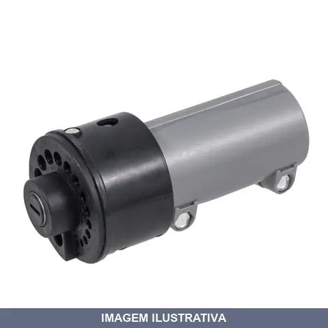
AFIADOR DE BROCAS E A ROCAST
Indicação de Uso: Afiador destinado ao afiamento de brocas helicoidais. Compatível com furadeira elétrica, utilizando mandril padrão. / Vantagem Prática: Restaura a capacidade de corte das brocas, prolongando sua vida útil e melhorando a qualidade dos furos.
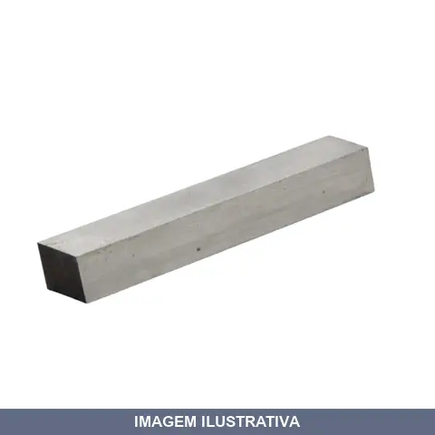
BARRA BITS QUADRADO A.R. ROCAST
Barra quadrada maciça em aço rápido (A.R.), sem encaixe ou mecanismo de troca, utilizada como matéria-prima para fabricação de bits e ferramentas de corte. Material resistente, indicado para usinagem e trabalhos em metal. Formato quadrado facilita o manuseio e a fixação durante o processo de fabricação.
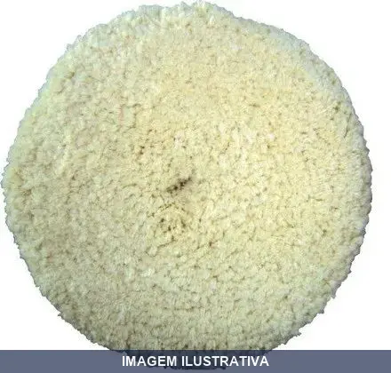
BOINA DUPLA FACE BRANCA MAKITA
BOINA DE POLIMENTO DUPLA FACE BRANCA 230MM DESCRIÇÃO ANTERIOR: BOINA DE POLIMENTO DIAM. 230MM ROTAÇÃO MAXIMA 4000RPM
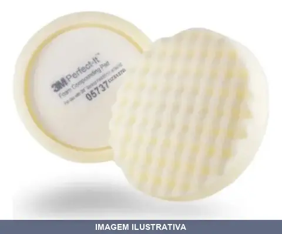
BOINA FACE UNICA ESPUMA BRANCA 3M
Indicação de Uso: Polimento e acabamento de superfícies em trabalhos de pintura, lixamento e polimento. Material e Resistência: Espuma branca de face única, resistente ao uso contínuo em máquinas polidoras. Vantagem Prática: Distribuição uniforme do produto de polimento com menor risco de riscos na superfície.
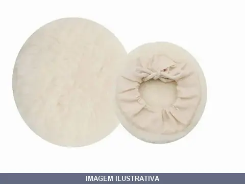
BOINA POLIMENTO = NOLL
Boina para polimento em material sintético com diâmetro de 5 polegadas (125mm). Indicada para uso em processos de polimento e acabamento de superfícies. Apresentação em blister autosserviço. Garantia de 06 meses contra defeitos de fabricação.
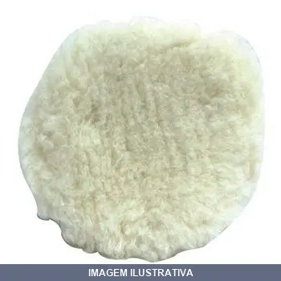
BOINA POLITRIZ LA 8
Boina para polimento com fibra 100% lã de carneiro implantada. Diâmetro de 8 polegadas. Costura reforçada e cordão de fixação em tecido de cadarço. Indicada para polimento de superfícies lisas, chapeadas ou pintadas. Pode ser utilizada em politrizes e furadeiras com disco adaptável. Embalagem com 1 unidade.
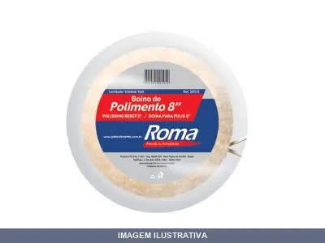
BOINA POLITRIZ LA 8 [001328]
BOINA DE POLIMENTO 8'' DA 203 MM Boina de polimento. Fibras de 32mm. Uso automotivo e industrial.

BOINA POLITRIZ LA CARNEIRO . COMPEL
Indicação de Uso: Polimento de veículos e superfícies lisas, chapeadas ou pintadas. Ideal para funilarias, oficinas e uso doméstico. Material e Resistência: Lã legítima de carneiro implantada, com costura reforçada e cordão de fixação em tecido de algodão. Vantagem Prática: Compatível com politrizes de 5 polegadas; fixação por amarração; proporciona polimento eficiente minimizando marcas.
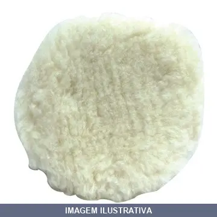
BOINA POLITRIZ LA CARNEIRO M14 MILKITS
Indicação de Uso: Polimento e acabamento de superfícies em trabalhos automotivos, funilarias e acabamento geral. Material e Resistência: Lã natural de carneiro com costura reforçada e cordão de fixação em cadarço de qualidade. Vantagem Prática: Compatível com politrizes e furadeiras com disco adaptador, proporciona polimento eficiente evitando marcas.

BROCA A MOURAO
Broca a mouran para furação em madeira. Indicada para trabalhos em carpintaria, marcenaria e construção. Proporciona furos precisos e limpos em peças de madeira.
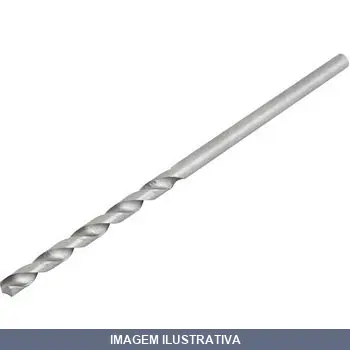
BROCA A MOURAO E FIBROC
BROCA PARA MOURAO / FIBROCIMENTO 1/4 X 12'' Indicada para furar madeira e fibrocimento. Devido ao comprimento, deve-se exercer uma pressão de avanço leve durante a furação. Perfura fibrocimento/madeira na mesma operação
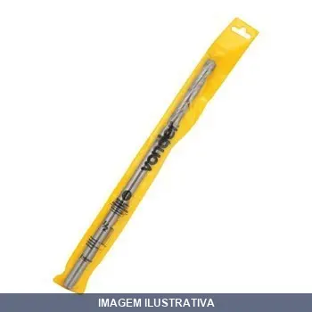
BROCA A MOURAO E FIBROC = VONDER
BROCA PARA MOURAO / FIBROCIMENTO 3/8 X 18'' Indicada para furar madeira e fibrocimento. Devido ao comprimento, deve-se exercer uma pressão de avanço leve durante a furação. Perfura fibrocimento/madeira na mesma operação
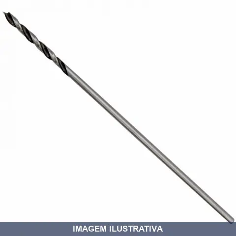
BROCA A MOURAO LOTUS
Broca tipo mouração indicada para furação em madeira e derivados. Possui ponta afiada que facilita o início da perfuração e reduz o risco de lascamento. Ideal para trabalhos de marcenaria, carpintaria e construção.
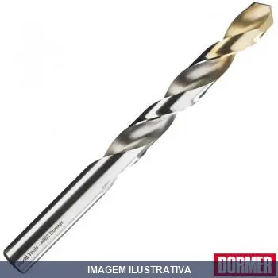
BROCA A R A002 DORMER
BROCA DIN 338 1.0MM A002TIN Broca A002 Dormer / World Tools, Inovação e produtividade: - Cobertura TIN.: Nitreto de Titânio na ponta para um desempenho superior - Embalagem.: Caixas plásticas vermelhas para garantir o correto manuseio e conservação das peças Obtenha uma produtividade de 2 a 3 vezes mais furos que as brocas tradicionais. Ganhe tempo de processo, reduzindo em mais de 50% dependendo da aplicação. Excelente relação custo x benefício, redução de custo por furo de até 50%. Precisão e
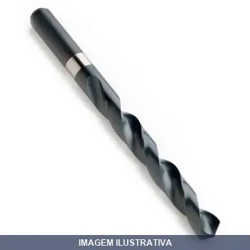
BROCA A R A100 DORMER
BROCA DIN 338 20.0MM A100 A100 - Broca Curta de Aço Rápido Ideal para diversas aplicações de furação na maioria dos tipos de materiais Tratamento Revenido a Vapor (brilhante abaixo de 1mm ou 3/64”)
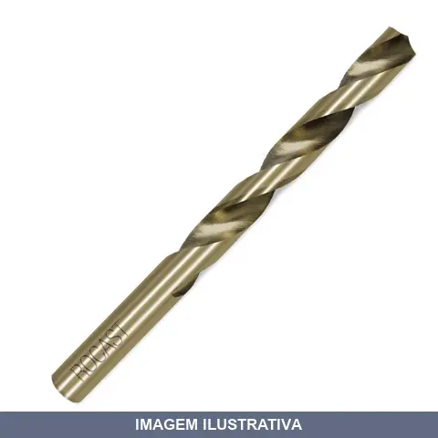
BROCA A R COBALTO ROCAST
Indicação de Uso: Furação em materiais metálicos e de alta dureza. Material e Resistência: Broca com haste cilíndrica em aço cobalto, indicada para trabalhos em metais duros e operações que exigem resistência ao calor. Vantagem Prática: Maior durabilidade em operações contínuas e em materiais que desgastam rapidamente brocas convencionais.

BROCA A R LONGA ROCAST 06.0MM
Broca tipo A em aço rápido para furação em materiais diversos. Indicada para trabalhos em madeira, plástico e metais não-ferrosos. Comprimento longo permite furos profundos e acesso em áreas recuadas. Material resistente ao desgaste para múltiplos usos.

BROCA A R LONGA ROCAST 06.5MM
Indicação de Uso: Broca tipo A com haste reta, de mesmo diâmetro da hélice, para furação em madeira, plástico e metais macios, ideal para trabalhos que exigem maior alcance devido ao comprimento longo. / Material e Resistência: Aço rápido com resistência ao calor e durabilidade. / Vantagem Prática: O comprimento longo permite alcançar maiores profundidades de furação.

BROCA A R LONGA ROCAST 08.0MM
Indicação de Uso: Furação em metais e materiais diversos. Material e Resistência: Broca de aço rápido com geometria alongada para trabalhos em profundidade. Vantagem Prática: Comprimento estendido permite acesso a áreas de difícil alcance.

BROCA A R LONGA ROCAST 09.5MM
Broca de aço rápido (A.R.) com comprimento estendido, destinada à furação em diversos materiais. Material de construção em aço rápido proporciona resistência ao calor e durabilidade. Comprimento longo permite furos mais profundos em peças de maior espessura.

BROCA A R LONGA ROCAST 10.0MM
Broca tipo A em aço rápido para furação em materiais diversos. Indicada para trabalhos em madeira, plástico e metais não-ferrosos. Comprimento longo permite furos profundos e acesso em áreas recuadas. Material resistente ao desgaste para múltiplos usos.
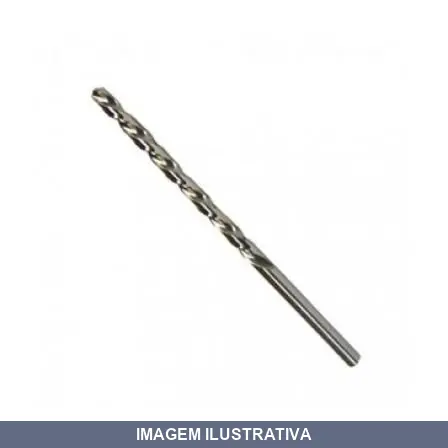
BROCA A R LONGA ROCAST 12.0MM
Broca de aço rápido para furação em metais e materiais de dureza média. Comprimento estendido, adequada para furos profundos e trabalhos em locais de difícil acesso. Aplicável em fresadoras, furadeiras de bancada e portáteis.
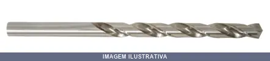
BROCA A R LONGA ROCAST 13.0MM
Broca helicoidal de aço rápido para furação em metais, madeira e materiais similares. Indicada para trabalhos que exigem maior profundidade de penetração. Adequada para uso em furadeiras e máquinas-ferramentas.
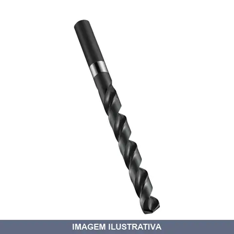
BROCA A R PARA INOX ROCAST
Indicação de Uso: Broca de reentrância para furação e acabamento de furos em aço inoxidável e materiais similares de alta dureza. Material e Resistência: Construída em aço rápido com cobalto (HSS-Co), oferecendo maior resistência ao calor e ao desgaste em trabalhos com inox. Vantagem Prática: Proporciona acabamento preciso e durabilidade superior em aplicações de reentrância em metais inoxidáveis.

BROCA A R PARA MADEIRA MPONTAS LOTUS
Indicação de Uso: Perfuração em madeira macia e dura, aglomerado, compensado e placas estratificadas. Uso em furadeiras, parafusadeiras, furadeiras de coluna e de bancada. Material e Resistência: Aço carbono temperado. Vantagem Prática: Ponta centralizadora para posicionamento exato. Canais duplos facilitam remoção de cavacos e evitam obstruções. Furos limpos sem lascas.
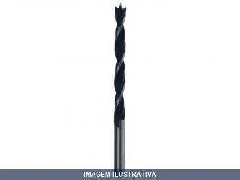
BROCA A R PARA MADEIRA MPONTAS ROCAST
Indicação de Uso: Perfuração em madeiras em geral, derivados, compensados, aglomerados e fórmicas. Material e Resistência: Fabricada em aço carbono com 3 pontas de afiação especial. Ponta central atua como guia, facilitando a centralização do furo. Vantagem Prática: Perfuração precisa e limpa com menor esforço. Evita escorregamento e rebarbas no acabamento.
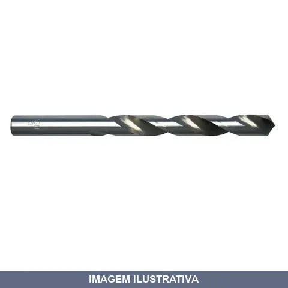
BROCA A R ROCAST
Indicação de Uso: Broca para furadeira de bancada e portátil, indicada para perfuração em madeira, aço, plástico e materiais similares. Material e Resistência: Construída em aço, apropriada para trabalhos de furação repetitivos. Vantagem Prática: Encaixe cilíndrico reto padrão facilita instalação em mandris de furadeiras compatíveis.

BROCA A R STARRETT
Broca de aço rápido com ponta afiada, destinada a perfuração de precisão em metais e materiais similares. Indicada para trabalhos que exigem furos de pequeno diâmetro com acabamento preciso. Ideal para marcenaria, metalurgia, eletrônica e serviços gerais de perfuração. Material em aço rápido proporciona resistência ao calor gerado pela fricção durante o uso.
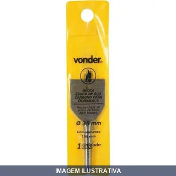
BROCA CHATA PARA DOBRADICA VONDER
Indicação de Uso: Broca especialmente projetada para fazer furos em dobradiças, facilitando a instalação e o encaixe preciso. Material e Resistência: Construída em aço, oferece durabilidade para trabalhos repetitivos em marcenaria e instalações. Vantagem Prática: Formato chato permite controle durante a perfuração e reduz o risco de deslizamento durante o uso.
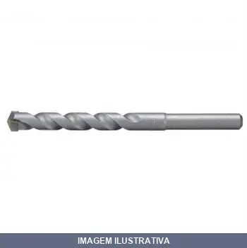
BROCA CONCRETO 04.0MM
Indicação de Uso: Perfuração em concreto, alvenaria, pedra e tijolos em taladros de rotação, percussão e impacto. Material e Resistência: Ponta de carbeto/diamante com corpo de aço. Vantagem Prática: Realiza perfurações rápidas e eficientes em materiais de construção.
![BROCA CONCRETO 04.0MM [005262]](fotos/005262.webp)
BROCA CONCRETO 04.0MM [005262]
Broca para concreto e alvenaria com ponta de metal duro. Indicação de Uso: perfuração em alvenaria, concreto e materiais similares na construção civil. Material e Resistência: pastilha de metal duro para maior durabilidade em materiais abrasivos. Vantagem Prática: acabamento brilhante facilita visualização durante trabalho.

BROCA CONCRETO 05.0MM
BROCA CT 5 X 85MM PARA CONCRETO E PD Diâmetro da Broca : 5mm Comprimento : 85mm Comprimento Útil : 45mm Broca para alvenaria com ponta de metal duro e haste paralela.
![BROCA CONCRETO 05.0MM [005263]](fotos/005263.webp)
BROCA CONCRETO 05.0MM [005263]
BROCA VIDEA 5,00MM- 3/16'' REF 8039 ROCAST DIN 8039 Broca Longa com Pastilha de Metal Duro - Widea Acabamento: Brilhante Aplicação: construção civil / alvenaria Em caso de brocas com comprimento igual ou maior a 400mm é necessário pré-furar com broca de mesmo diâmetro e profundidade de 200mm

BROCA CONCRETO 06.0MM
BROCA CT 6 X 150 MM PARA CONCRETO E PD Broca para alvenaria com ponta de metal duro e haste paralela. ESPECIFICAÇÕESDiâmetro da Broca : 6mm Comprimento : 150mm Comprimento Útil : 90mm

BROCA CONCRETO 06.0MM 7578
Broca de aço para perfuração em concreto e alvenaria. Indicada para trabalhos de fixação, instalação elétrica, hidráulica e de acabamento em estruturas de concreto. Mantém durabilidade em materiais duros.
![BROCA CONCRETO 06.0MM [005264]](fotos/005264.webp)
BROCA CONCRETO 06.0MM [005264]
Broca para concreto com ponta de carboneto de tungstênio. Indicação de Uso: perfuração em alvenaria, concreto e estruturas de construção civil. Material e Resistência: haste em aço rápido com pastilha de metal duro, resistente a impacto. Vantagem Prática: maior durabilidade e velocidade de perfuração em materiais duros.

BROCA CONCRETO 07.0MM
Broca para concreto com ponta de metal duro. Indicação de Uso: furação em alvenaria e concreto para fixação de buchas e parafusos. Material e Resistência: pastilha de metal duro para maior durabilidade em materiais abrasivos. Vantagem Prática: penetração eficiente em estruturas de concreto e alvenaria.
![BROCA CONCRETO 07.0MM [000900]](fotos/000900.webp)
BROCA CONCRETO 07.0MM [000900]
Brocas para Concreto Standard Recursos: Para furação de paredes de concreto, pisos, azulejos e materiais de alvenaria em geral. Pastilha de Metal Duro de alta resistência. Canal com largura ampliada para rápida eliminação do pó.

BROCA CONCRETO 08.0MM
BROCA CT 8 X 150 MM PARA CONCRETO Broca para alvenaria com ponta de metal duro e haste paralela. ESPECIFICAÇÕES Diâmetro da Broca : 8mm Comprimento : 150mm Comprimento Útil : 90mm

BROCA CONCRETO 08.0MM 7581
Indicação de Uso: Perfuração em concreto e alvenaria para fixação de buchas, parafusos e ancoras. Material e Resistência: Broca com ponta de carboneto, resistente ao desgaste em materiais duros. Vantagem Prática: Proporciona furos precisos em estruturas de concreto para instalações diversas.
![BROCA CONCRETO 08.0MM [005266]](fotos/005266.webp)
BROCA CONCRETO 08.0MM [005266]
Broca para concreto com ponta de metal duro. Indicação de Uso: perfuração em alvenaria e concreto para fixações e instalações na construção civil. Material e Resistência: pastilha de metal duro para maior durabilidade. Vantagem Prática: acabamento brilhante reduz atrito durante a perfuração.

BROCA CONCRETO 10.0MM
BROCA CT 10 X 150 MM PARA CONCRETO E PD Diâmetro da Broca : 10mm Comprimento : 150mm Comprimento Útil : 90mm Broca para alvenaria com ponta de metal duro e haste paralela.
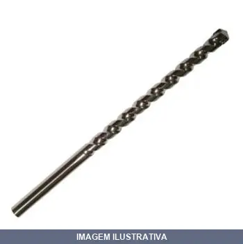
BROCA CONCRETO 10.0MM 7584
Broca especializada para perfuração em concreto e alvenaria. Possui ponta de carbeto temperado, adequada para trabalhos em superfícies rígidas. Indicada para instalação de fixações, passagem de tubulações e demais aplicações em concreto. Compatível com furadeiras e marteletes.
![BROCA CONCRETO 10.0MM [005267]](fotos/005267.webp)
BROCA CONCRETO 10.0MM [005267]
BROCA VIDEA 10,00MM- 3/8'' REF 8039 ROCAST DIN 8039 Broca Longa com Pastilha de Metal Duro - Widea Acabamento: Brilhante Aplicação: construção civil / alvenaria Em caso de brocas com comprimento igual ou maior a 400mm é necessário pré-furar com broca de mesmo diâmetro e profundidade de 200mm

BROCA CONCRETO 12.0MM
Indicação de Uso: Perfuração em concreto, alvenaria, pedra e tijolos em taladros de rotação, percussão e impacto. Material e Resistência: Ponta de carbeto/diamante com corpo de aço. Vantagem Prática: Realiza perfurações rápidas e eficientes em materiais de construção.
![BROCA CONCRETO 12.0MM [005268]](fotos/005268.webp)
BROCA CONCRETO 12.0MM [005268]
Broca de carboneto para concreto com haste cilíndrica. Indicação de Uso: perfuração em concreto, alvenaria e construção civil. Material e Resistência: pastilha de metal duro para alta durabilidade. Vantagem Prática: acabamento brilhante reduz atrito durante a perfuração.

BROCA CONCRETO 13.0MM
Indicação de Uso: Perfuração em concreto, alvenaria, pedra e tijolos em taladros de rotação, percussão e impacto. Material e Resistência: Ponta de carbeto/diamante com corpo de aço. Vantagem Prática: Realiza perfurações rápidas e eficientes em materiais de construção.
![BROCA CONCRETO 13.0MM [005269]](fotos/005269.webp)
BROCA CONCRETO 13.0MM [005269]
BROCA VIDEA BIT: 13;00 - 1/2'' REF: 8039 DIN 8039 Broca Longa com Pastilha de Metal Duro - Widea Acabamento: Brilhante Aplicação: construção civil / alvenaria Em caso de brocas com comprimento igual ou maior a 400mm é necessário pré-furar com broca de mesmo diâmetro e profundidade de 200mm

BROCA CONCRETO 14.0MM
Indicação de Uso: Broca para perfuração em concreto, alvenaria e pedra. Material e Resistência: Ponta de carboneto de tungstênio com haste paralela, oferece resistência aumentada para materiais duros. Vantagem Prática: Facilita furos precisos em superfícies de concreto e alvenaria com menor desgaste da ferramenta.
![BROCA CONCRETO 14.0MM [005270]](fotos/005270.webp)
BROCA CONCRETO 14.0MM [005270]
BROCA VIDEA BIT: 14.00MM - 9/16'' REF 8039 FAB: ROCAST DIN 8039 Broca Longa com Pastilha de Metal Duro - Widea Acabamento: Brilhante Aplicação: construção civil / alvenaria Em caso de brocas com comprimento igual ou maior a 400mm é necessário pré-furar com broca de mesmo diâmetro e profundidade de 200mm
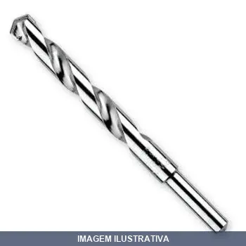
BROCA CONCRETO EXTRA LONGA BRASFORT
Broca especialmente projetada para perfuração em concreto. Seu comprimento extra longo permite alcançar profundidades maiores em estruturas de concreto, sendo indicada para instalações de fixações, passagem de tubulações e ancoragens em alvenaria e concreto armado.
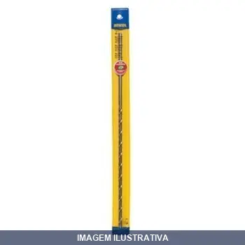
BROCA CONCRETO LONGA IRWIN
Indicação de Uso: Furação em concreto, alvenaria, pisos e paredes. / Material e Resistência: Pastilha de metal duro de alta resistência. / Vantagem Prática: Canal ampliado para rápida eliminação de pó durante a furação.

BROCA ESCALONADA A R 04A BRASFORT
Broca Escalonada Aplicação: furação de perfis de pouca espessura
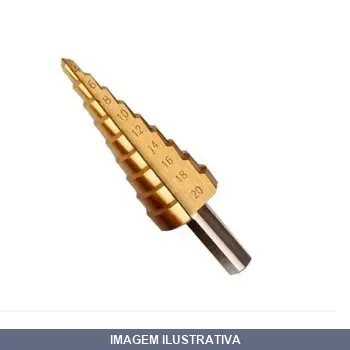
BROCA ESCALONADA A R 04A20 ROCAST
Broca Escalonada Aplicação: furação de perfis de pouca espessura
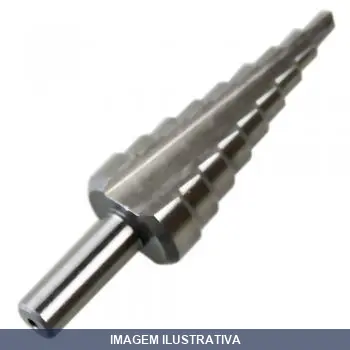
BROCA ESCALONADA A R 06A BRASFORT
Broca Escalonada Aplicação: furação de perfis de pouca espessura

BROCA ESCALONADA A R 06A30 ROCAST
Indicação de Uso: Furação em superfícies variadas, com capacidade de criar múltiplos diâmetros em uma única ferramenta. Material e Resistência: Aço de alta resistência, apropriado para trabalhos repetitivos. Vantagem Prática: Reduz necessidade de trocar brocas durante o trabalho, otimizando tempo e produtividade.
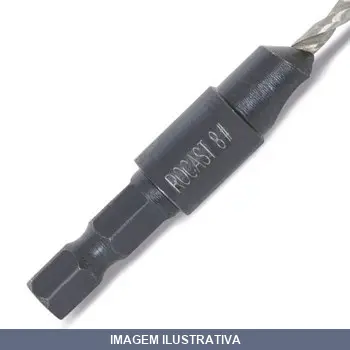
BROCA ESCAREADORA NUMERO ROCAST
Broca escareadora para trabalhos de furação e alargamento de furos em diversos materiais. Aplicável em trabalhos de marcenaria, metalurgia e construção. Ferramenta rotativa indicada para uso em furadeiras e afins.

BROCA MACHO COMBINADA ,00MMXM6 VONDER
Indicação de Uso: Broca macho combinada para furação e rosqueamento simultâneos em metais, conforme padrão métrico. Executa furo e forma rosca em uma única operação. Material e Resistência: Fabricada em aço de alta resistência para operações de furação e conformação de rosca. Vantagem Prática: Elimina necessidade de duas ferramentas distintas, reduzindo tempo de operação.

BROCA MACHO COMBINADA ,11MMX1/ -20NC VONDER
Indicação de Uso: Broca macho combinada para furação e rosqueamento em uma única operação, indicada para trabalhos em metais e materiais similares. Material e Resistência: Fabricada em aço, resistente para operações de furação profunda e formação de rosca. Vantagem Prática: Reduz tempo de trabalho ao eliminar a necessidade de duas ferramentas separadas para furação e rosqueamento.

BROCA MACHO COMBINADA ,50MMXM10 VONDER
Indicação de Uso: Broca macho combinada para furação e rosqueamento em uma única operação, indicada para trabalhos em metais e materiais similares. Material e Resistência: Fabricada em aço, resistente para operações de furação profunda e formação de rosca. Vantagem Prática: Reduz tempo de trabalho ao eliminar a necessidade de duas ferramentas separadas para furação e rosqueamento.

BROCA MACHO COMBINADA ,53MMX5/ -18NC VONDER
Indicação de Uso: Broca macho combinada para furação e rosqueamento em uma única operação, indicada para trabalhos em metais e materiais similares. Material e Resistência: Fabricada em aço, resistente para operações de furação profunda e formação de rosca. Vantagem Prática: Reduz tempo de trabalho ao eliminar a necessidade de duas ferramentas separadas para furação e rosqueamento.
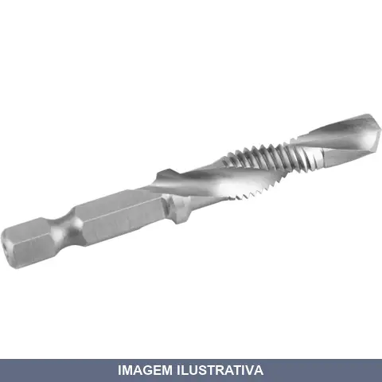
BROCA MACHO COMBINADA ,80MMXM8 VONDER
Broca-macho combinada M8 para furação e rosqueamento em uma única operação. Diâmetro: 6,80 mm, comprimento total 64 mm. Material: Aço M2. Encaixe sextavado 1/4" (6,35 mm). Canal helicoidal. Indicada para alumínio, latão, cobre, aço macio e plástico.

BROCA MACHO COMBINADA ,94MMX3/ -16NC VONDER
Indicação de Uso: Broca macho combinada para furação e rosqueamento em uma única operação, ideal para trabalhos em metais. Material e Resistência: Construída em aço de ferramenta, resistente ao desgaste. Vantagem Prática: Realiza furação e rosqueamento simultâneos, reduzindo tempo de operação e necessidade de múltiplas ferramentas.

BROCA MADEIRA CHATA
Indicação de Uso: Perfuração em madeira e materiais similares. Material e Resistência: Broca com ponta chata, fabricada em aço temperado. Vantagem Prática: Permite furos precisos e limpos em trabalhos de marcenaria, carpintaria e construção em madeira.

BROCA MADEIRA CHATA (B) 1/4
Indicação de Uso: Perfuração de madeira, MDF, aglomerados, compensados e derivados da madeira. Material e Resistência: Fabricada em aço carbono com corpo temperado e envernizado, com ponta chata/plana de afiação especial. Vantagem Prática: Ponta guia especial facilita centralização e evita deslizamento. Haste com encaixe sextavado compatível com furadeiras e parafusadeiras.

BROCA MADEIRA CHATA (C) 5/16
Indicação de Uso: Perfuração em madeira, MDF, MDP, aglomerados e compensados. Material e Resistência: Aço especial com têmpera total no corpo. Ponta guia com afiação especial que evita deslizamento. Esporas nas bordas para acabamento. Vantagem Prática: Perfurações rápidas e precisas com centralização facilitada.

BROCA MADEIRA CHATA (D) 3/8
Indicação de Uso: Perfuração de madeira e seus derivados (MDF, MDP, compensados, aglomerados). Material e Resistência: Fabricada em aço carbono com ponta guia afiada. Vantagem Prática: Produz cavacos maiores e cortes mais limpos com menor esforço. Ponta piloto evita deslizamentos e facilita centralização do furo. Encaixe sextavado de 1/4 polegada para furadeiras com mandril ou encaixe sextavado.

BROCA MADEIRA CHATA (E) 1/2
Indicação de Uso: Perfuração em madeiras em geral. Material e Resistência: Aço carbono com ponta guia de afiação especial, acabamento brilhante. Vantagem Prática: Facilita centralização do furo e evita deslizamento, permitindo troca rápida com engate prático.

BROCA MADEIRA CHATA (F) 9/16
Broca chata para madeira, aglomerados e fibras. Indicação de Uso: perfuração em madeiras de diferentes densidades e materiais derivados. Material e Resistência: aço de alta resistência. Vantagem Prática: geometria chata facilita entrada e saída limpas, reduzindo lascas.
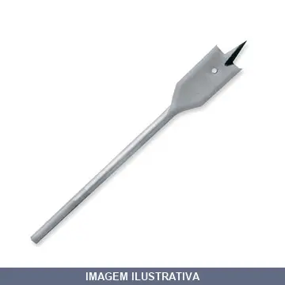
BROCA MADEIRA CHATA (H) 5/8
Indicação de Uso: Perfuração de madeiras em geral, MDF, compensados, aglomerados e chapas finas. Material e Resistência: Aço carbono temperado e revenido, com alta resistência ao desgaste. Vantagem Prática: Ponta afiada com design especial que facilita centralização e permite perfurações rápidas com menos esforço.

BROCA MADEIRA CHATA (J) 3/4
Broca chata para madeira, indicada para uso em madeiras e derivados. Material: Aço carbono. Possui ponta com afiação especial e esporas nas bordas que iniciam o contorno do furo antes que a madeira do centro seja removida. Utilizada para perfuração em madeiras, aglomerados e fibras.
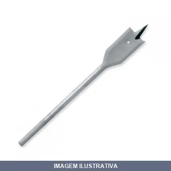
BROCA MADEIRA CHATA (J) 7/8
Broca chata Starfer é utilizada para perfurar madeira, aglomerados e fibras. Recomendada para casos nos quais o material a ser perfurado é muito grosso, pois esse modelo de broca possui uma capacidade de perfuração de 20cm.
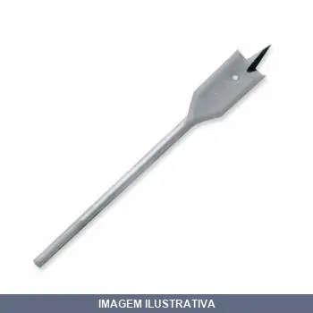
BROCA MADEIRA CHATA (M) 1.1/2
Broca chata Starfer é utilizada para perfurar madeira, aglomerados e fibras. Recomendada para casos nos quais o material a ser perfurado é muito grosso, pois esse modelo de broca possui uma capacidade de perfuração de 20cm.
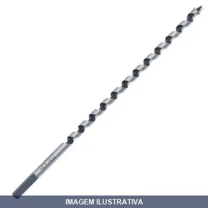
BROCA MADEIRA RAPIDA ROCAST
Indicação de Uso: Perfuração em madeiras em geral, MDF, compensado e derivados de madeira. Indicada para marcenaria, carpintaria e manutenção industrial. Material e Resistência: Fabricada em aço de alta resistência com geometria projetada para rápida evacuação de cavacos. Vantagem Prática: Proporciona perfurações precisas e rápidas com acabamento.
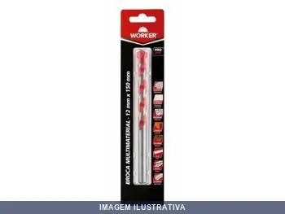
BROCA MULTIMATERIAL WORKER
Broca multimaterial indicada para perfuração em diversos substratos como madeira, plástico e metais. Possui ponta resistente adequada para trabalhos em construção, manutenção e montagem. Aplicação versátil reduz necessidade de múltiplas brocas especializadas.

BROCA MULTIUSO .0MMX BMV0060 VONDER
BROCA MULTIUSO 6,0 X 100 MM VONDER Indicada para concreto, alvenaria, metais, madeira e cerâmica Possui ponta de metal duro/vídea com geometria especial, que proporciona maior versatilidade para trabalhar em diversos tipos de materiais com apenas uma única broca
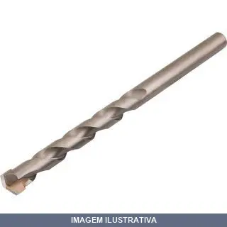
BROCA MULTIUSO .0MMX BMV0080 VONDER
BROCA MULTIUSO 8,0 X 120 MM VONDER Indicada para concreto, alvenaria, metais, madeira e cerâmica Possui ponta de metal duro/vídea com geometria especial, que proporciona maior versatilidade para trabalhar em diversos tipos de materiais com apenas uma única broca

BROCA MULTIUSO .0MMX BMV0100 VONDER
Indicação de Uso: Concreto, alvenaria, metais, madeira e cerâmica / Material e Resistência: Ponta de metal duro com geometria especial / Vantagem Prática: Versátil para trabalhar em diversos tipos de materiais com uma única broca.
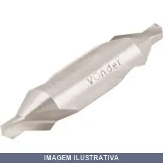
BROCA PARA CENTRAR
Broca de centrar com ponta cônica para marcação de centros de furação em peças. Material: aço rápido (HSS). Cria ponto de guia preciso antes da perfuração, evitando escorregamento da broca principal. Rotação à direita.
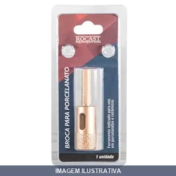
BROCA PARA PORCELANATO ROCAST
Indicação de Uso: Perfuração em porcelanato e materiais cerâmicos. Material e Resistência: Broca especialmente desenvolvida para trabalhar em superfícies duras e frágeis como porcelanato. Vantagem Prática: Permite furos precisos em revestimentos cerâmicos sem lascas ou trincas.
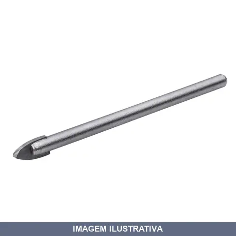
BROCA PARA VIDRO WORKER
Indicação de Uso: Perfuração de vidro em projetos de decoração, instalação de acessórios e acabamentos. Material e Resistência: Broca específica para vidro, resistente ao material frágil e propenso a lascamento. Vantagem Prática: Realiza furos precisos em vidro sem danificar a superfície.

BROCA SDS PLUS 05.0X110MM
BROCA SDS-PLUS STANDARD 5 X 110MM Para marteletes. ESPECIFICAÇÕES Diâmetro: 5mm Comprimento: 110mm

BROCA SDS PLUS 06.0X110MM
BROCA SDS-PLUS STANDARD 6 X 110MM Para marteletes. ESPECIFICAÇÕES Diâmetro: 6mm Comprimento: 110mm
![BROCA SDS PLUS 06.0X110MM [013982]](fotos/013982.webp)
BROCA SDS PLUS 06.0X110MM [013982]
Indicação de Uso: Trabalhos em construção civil e alvenaria. Material e Resistência: Forjada em metal duro, com encaixe rápido SDS Plus para maior resistência e durabilidade.

BROCA SDS PLUS 06.0X160MM
BROCA SDS-PLUS STANDARD 6 X 160MM Para marteletes. ESPECIFICAÇÕES Diâmetro: 6mm Comprimento: 160mm
![BROCA SDS PLUS 06.0X160MM [013984]](fotos/013984.webp)
BROCA SDS PLUS 06.0X160MM [013984]
Indicação de Uso: Trabalhos em construção civil e alvenaria. Material e Resistência: Forjada em metal duro, com encaixe rápido SDS Plus para maior resistência e durabilidade.

BROCA SDS PLUS 06.0X210MM
BROCA SDS-PLUS STANDARD 6 X 210MM Para marteletes. ESPECIFICAÇÕES Diâmetro: 6mm Comprimento: 210mm

BROCA SDS PLUS 07.0X160MM
BROCA SDS-PLUS STANDARD 7 X 160MM Para marteletes. ESPECIFICAÇÕES Diâmetro: 7mm Comprimento: 160mm

BROCA SDS PLUS 08.0X110MM
Indicação de Uso: Trabalhos em construção civil e alvenaria. Material e Resistência: Forjada em metal duro, com encaixe rápido SDS Plus para maior resistência e durabilidade.

BROCA SDS PLUS 08.0X160MM
BROCA SDS-PLUS STANDARD 8 X 160MM Para marteletes. ESPECIFICAÇÕES Diâmetro: 8mm Comprimento: 160mm
![BROCA SDS PLUS 08.0X160MM [013985]](fotos/013985.webp)
BROCA SDS PLUS 08.0X160MM [013985]
Indicação de Uso: Trabalhos em construção civil e alvenaria. Material e Resistência: Forjada em metal duro, com encaixe rápido SDS Plus para maior resistência e durabilidade.

BROCA SDS PLUS 08.0X260MM
BROCA SDS-PLUS STANDARD 8 X 260MM Para marteletes. ESPECIFICAÇÕES Diâmetro: 8mm Comprimento: 260mm

BROCA SDS PLUS 10.0X160MM
BROCA SDS-PLUS STANDARD 10 X 160MM Para marteletes. ESPECIFICAÇÕES Diâmetro: 10mm Comprimento: 160mm
![BROCA SDS PLUS 10.0X160MM [013986]](fotos/013986.webp)
BROCA SDS PLUS 10.0X160MM [013986]
Indicação de Uso: Trabalhos em construção civil e alvenaria. Material e Resistência: Forjada em metal duro, com encaixe rápido SDS Plus para maior resistência e durabilidade.

BROCA SDS PLUS 10.0X210MM
BROCA SDS-PLUS STANDARD 10 X 210MM Para marteletes. ESPECIFICAÇÕES Diâmetro: 10mm Comprimento: 210mm

BROCA SDS PLUS 10.0X260MM
BROCA SDS-PLUS STANDARD 10 X 260MM Para marteletes. ESPECIFICAÇÕES Diâmetro: 10mm Comprimento: 260mm
![BROCA SDS PLUS 10.0X260MM [020091]](fotos/020091.webp)
BROCA SDS PLUS 10.0X260MM [020091]
Indicação de Uso: Trabalhos em construção civil e alvenaria. Material e Resistência: Forjada em metal duro, com encaixe rápido SDS Plus para maior resistência e durabilidade.

BROCA SDS PLUS 10.0X310MM
BROCA SDS-PLUS STANDARD 10 X 310MM Para marteletes. ESPECIFICAÇÕES Diâmetro: 10mm Comprimento: 310mm

BROCA SDS PLUS 10.0X400MM
BROCA SDS/PLUS 10 X 400MM ROCAST SDS - PLUS Broca com Pastilha de Metal Duro e Encaixe Rápido Aplicação: construção civil / alvenaria Em caso de brocas com comprimento igual ou maior a 400mm é necessário pré-furar com broca de mesmo diâmetro e profundidade de 200mm.

BROCA SDS PLUS 12.0X160MM
Indicação de Uso: Trabalhos em construção civil e alvenaria. Material e Resistência: Forjada em metal duro, com encaixe rápido SDS Plus para maior resistência e durabilidade.

BROCA SDS PLUS 12.0X210MM
Indicação de Uso: Trabalhos em construção civil e alvenaria. Material e Resistência: Forjada em metal duro, com encaixe rápido SDS Plus para maior resistência e durabilidade.

BROCA SDS PLUS 12.0X260MM
BROCA SDS-PLUS STANDARD 12 X 260MM Para marteletes. ESPECIFICAÇÕES Diâmetro: 12mm Comprimento: 260mm
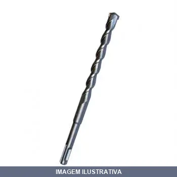
BROCA SDS PLUS 12.0X310MM
BROCA SDS/PLUS 12 X 310MM ROCAST SDS - PLUS Broca com Pastilha de Metal Duro e Encaixe Rápido Aplicação: construção civil / alvenaria Em caso de brocas com comprimento igual ou maior a 400mm é necessário pré-furar com broca de mesmo diâmetro e profundidade de 200mm.

BROCA SDS PLUS 13.0X160MM
BROCA SDS-PLUS STANDARD 13 X 160MM Para marteletes. ESPECIFICAÇÕES Diâmetro: 13mm Comprimento: 160mm
![BROCA SDS PLUS 13.0X160MM [013988]](fotos/013988.webp)
BROCA SDS PLUS 13.0X160MM [013988]
Indicação de Uso: Trabalhos em construção civil e alvenaria. Material e Resistência: Forjada em metal duro, com encaixe rápido SDS Plus para maior resistência e durabilidade.

BROCA SDS PLUS 13.0X210MM
BROCA SDC/PLUS 13 X 210MM ROCAST SDS - PLUS Broca com Pastilha de Metal Duro e Encaixe Rápido Aplicação: construção civil / alvenaria Em caso de brocas com comprimento igual ou maior a 400mm é necessário pré-furar com broca de mesmo diâmetro e profundidade de 200mm.

BROCA SDS PLUS 13.0X260MM
BROCA SDS/PLUS BIT: 13 X 260 MM FAB: ROCAST SDS - PLUS Broca com Pastilha de Metal Duro e Encaixe Rápido Aplicação: construção civil / alvenaria Em caso de brocas com comprimento igual ou maior a 400mm é necessário pré-furar com broca de mesmo diâmetro e profundidade de 200mm.

BROCA SDS PLUS 13.0X310MM
BROCA SDS/PLUS 13 X 310MM ROCAST SDS - PLUS Broca com Pastilha de Metal Duro e Encaixe Rápido Aplicação: construção civil / alvenaria Em caso de brocas com comprimento igual ou maior a 400mm é necessário pré-furar com broca de mesmo diâmetro e profundidade de 200mm.

BROCA SDS PLUS 14.0X210MM
BROCA SDS/PLUS 14 X 210MM ROCAST SDS - PLUS Broca com Pastilha de Metal Duro e Encaixe Rápido Aplicação: construção civil / alvenaria Em caso de brocas com comprimento igual ou maior a 400mm é necessário pré-furar com broca de mesmo diâmetro e profundidade de 200mm.

BROCA SDS PLUS 14.0X260MM
BROCA SDS-PLUS STANDARD 14 X 260MM Para marteletes. ESPECIFICAÇÕES Diâmetro: 14mm Comprimento: 260mm

BROCA SDS PLUS 14.0X310MM
BROCA SDS/PLUS SDS - PLUS Broca com Pastilha de Metal Duro e Encaixe Rápido Aplicação: construção civil / alvenaria Em caso de brocas com comprimento igual ou maior a 400mm é necessário pré-furar com broca de mesmo diâmetro e profundidade de 200mm.

BROCA SDS PLUS 16.0X210MM
BROCA PARA CONCRETO SDS-PLUS STANDARD 16 X 210MM Para marteletes. ESPECIFICAÇÕES Diâmetro: 16mm Comprimento: 210mm
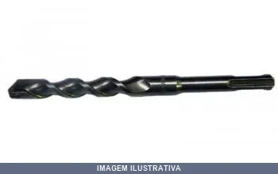
BROCA SDS PLUS 16.0X310MM
BROCA SDS-PLUS 16 X 310MM Para marteletes. ESPECIFICAÇÕES Diâmetro: 16mm Comprimento: 310mm

BROCA SDS PLUS 16.0X400MM
BROCA SDS/PLUS 16 X 400 MM FAB ROCAST SDS - PLUS Broca com Pastilha de Metal Duro e Encaixe Rápido Aplicação: construção civil / alvenaria Em caso de brocas com comprimento igual ou maior a 400mm é necessário pré-furar com broca de mesmo diâmetro e profundidade de 200mm.

BROCA SDS PLUS 18.0X210MM
BROCA SDS-PLUS STANDARD 18 X 210MM Para marteletes. ESPECIFICAÇÕES Diâmetro: 18mm Comprimento: 210mm

BROCA SDS PLUS 18.0X310MM
Broca com encaixe SDS Plus e pastilha de metal duro para perfuração em alvenaria e concreto. Indicação de Uso: construção civil, alvenaria e concreto. Material e Resistência: pastilha de metal duro com alta durabilidade. Vantagem Prática: encaixe rápido SDS Plus para troca ágil sem ferramentas.
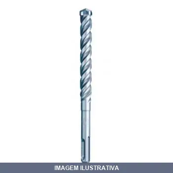
BROCA SDS PLUS 20.0X210MM
BROCA SDS-PLUS STANDARD 20 X 210MM Para marteletes. ESPECIFICAÇÕES Diâmetro: 20mm Comprimento: 210mm

BROCA SDS PLUS 20.0X310MM
BROCA SDS-PLUS STANDARD 20 X 310MM Para marteletes. ESPECIFICAÇÕES Diâmetro: 20mm Comprimento: 310mm

BROCA SDS PLUS 20.0X400MM
SDS - PLUS Broca com Pastilha de Metal Duro e Encaixe Rápido Aplicação: construção civil / alvenaria Em caso de brocas com comprimento igual ou maior a 400mm é necessário pré-furar com broca de mesmo diâmetro e profundidade de 200mm.

BROCA SDS PLUS 22.0X260MM
BROCA SDS-PLUS STANDARD 22 X 260MM Para marteletes. ESPECIFICAÇÕES Diâmetro: 22mm Comprimento: 260mm

BROCA SDS PLUS 24.0X400MM
Indicação de Uso: Perfuração em concreto, alvenaria e pedras. Material e Resistência: Ponta com pastilha de metal duro, encaixe rápido tipo SDS Plus. Vantagem Prática: Design em forma de U com 2 espirais para remoção eficaz do pó e maior durabilidade.

BROCA SDS PLUS 25.0X400MM
Indicação de Uso: Perfuração em concreto, alvenaria e pedras. Material e Resistência: Ponta com pastilha de metal duro, encaixe rápido tipo SDS Plus. Vantagem Prática: Design em forma de U com 2 espirais para remoção eficaz do pó e maior durabilidade.

BROCA SDS PLUS 26.0X400MM
Indicação de Uso: Perfuração em concreto, alvenaria e pedras. Material e Resistência: Ponta com pastilha de metal duro, encaixe rápido tipo SDS Plus. Vantagem Prática: Design em forma de U com 2 espirais para remoção eficaz do pó e maior durabilidade.
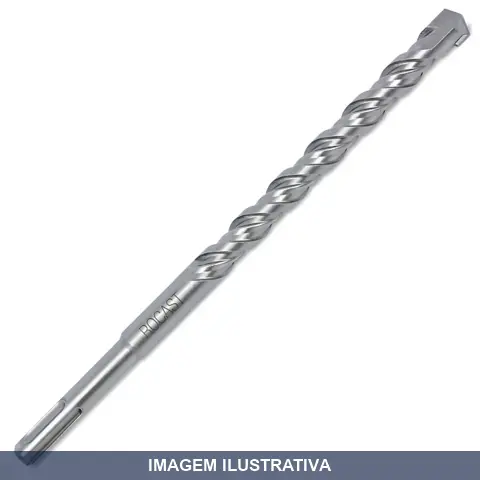
BROCA SDS PLUS COM PASTILHA DE METAL DURO ROCAST
Indicação de Uso: Concreto, alvenaria, pedras e derivados, utilizada em marteletes com encaixe SDS Plus. Material e Resistência: Pastilha de metal duro, oferece resistência e durabilidade, suporta altas temperaturas. Vantagem Prática: Encaixe rápido que garante fixação segura, geometria espiral para rápida evacuação de detritos.
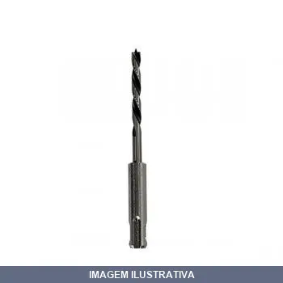
BROCA SDS PLUS PARA MADEIRA MAKITA
Indicação de Uso: Perfuração de madeira em marteletes/furadeiras com encaixe SDS-Plus. Material e Resistência: Aço de qualidade com ponta tripla (3 facetas). Vantagem Prática: Encaixe SDS-Plus permite fixação rápida e direta; ponta tripla proporciona cortes limpos e precisos em madeira; geometria especial para penetração eficiente.
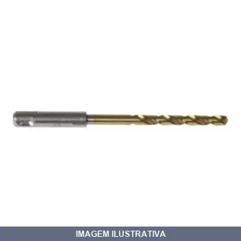
BROCA SDS PLUS PARA METAL MAKITA
Indicação de Uso: Perfuração em metal com rotomartilhos que aceitam brocas SDS-PLUS. Material e Resistência: Aço de alta velocidade HSS-G com ponta dividida de 135°. Vantagem Prática: Entrada SDS-PLUS permite perfuração sem trocar de ferramenta ou usar adaptadores especiais. Design com entrada curta reduz danos em modo rotação com martilhamento.
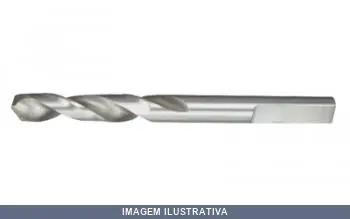
BROCA SUPORTE SERRA COPO (PONTA PILOTO) MAKITA
PONTA PILOTO 75 MM PARA SERRA COPO Broca piloto para serra copo BiM.
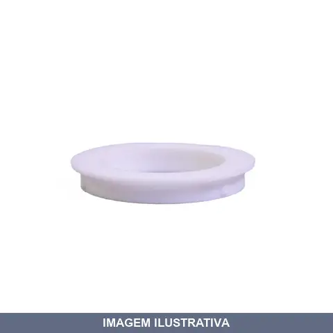
BUCHA DE REDUCAO PARA DISCO DE CORTE /4
Indicação de Uso: Adaptador para discos de corte, permite a conexão entre o disco e o equipamento com redução de diâmetro de encaixe. Material e Resistência: Construída em plástico resistente, adequado para uso contínuo em operações de corte. Vantagem Prática: Possibilita o uso de discos de corte em equipamentos com diferentes diâmetros de mandril, ampliando compatibilidade.
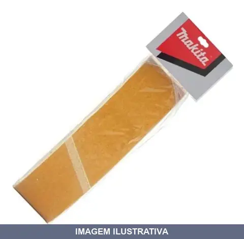
CINTA DE LIXA MADEIRA COM UND MAKITA
Indicação de Uso: Acabamento e lixamento de superfícies em madeira, adaptável a peças planas, curvas, arredondadas e cilíndricas. Material e Resistência: Grãos abrasivos de óxido de alumínio em suporte de tecido, oferecendo alto poder de remoção. Vantagem Prática: Permite trocas rápidas conforme desgaste natural ou mudança de acabamento desejado, atingindo níveis finos de rugosidade superficial.
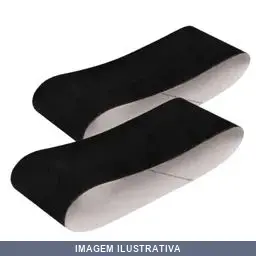
CINTA DE LIXA METAL COM UND MAKITA
Indicação de Uso: Lixamento de superfícies metálicas em máquinas lixadeiras de cinta. Material e Resistência: Lixa com suporte em tecido, granulação 150 para acabamento médio. Vantagem Prática: Formato em cinta facilita encaixe direto em equipamentos específicos, reduzindo tempo de preparação.
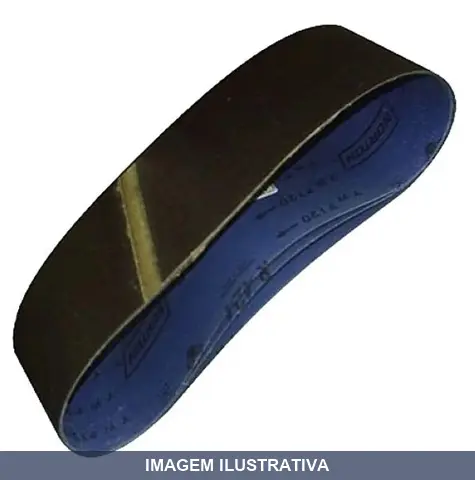
CINTA DE LIXA VIDRO COM UND MAKITA
Indicação de Uso: Lixamento de vidro em geral para desbaste, polimento e acabamento com lixadeiras de cinta Makita. Compatível com diversos modelos de lixadeiras de cinta. Material e Resistência: Composição com papel abrasivo colado em fita de tecido resistente. Abrasivo de carbeto de silício ideal para vidro. Suporta lixamento refrigerado com água. Vantagem Prática: durabilidade do suporte de pano. Eficiente para retirar material, reduzir medidas e remover imperfeições em superfícies
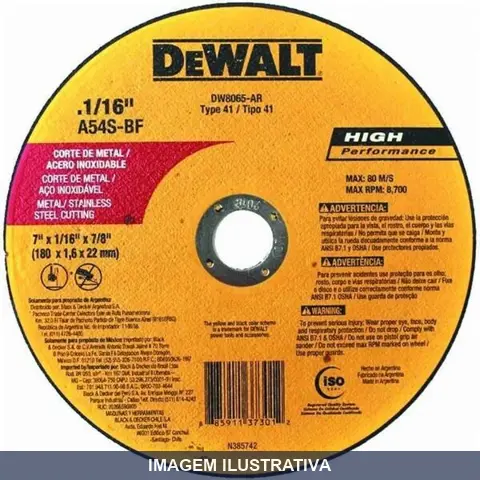
DISCO CORTE / . INOX ALTA PERFORMACE DEWALT 07X7 8X1 6
Indicação de Uso: Corte de metal e aço inoxidável em aplicações demandantes. Material e Resistência: Disco abrasivo com combinação de óxido de alumínio de alta performance e reforço de fibra de vidro para durabilidade e segurança. Design ultra delgado para cortes rápidos e livres de rebarbas. Vantagem Prática: Oferece vida útil estendida, desempenho robusto e reduz desperdício de material.
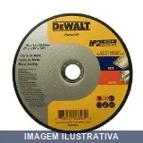
DISCO CORTE / . INOX ALTA PERFORMACE DEWALT 09X7 8X2 0
Indicação de Uso: Corte de metal e aço inoxidável em aplicações demandantes. Material e Resistência: Disco abrasivo com combinação de óxido de alumínio de alta performance e reforço de fibra de vidro para durabilidade e segurança. Design ultra delgado para cortes rápidos e livres de rebarbas. Vantagem Prática: Oferece vida útil estendida, desempenho robusto e reduz desperdício de material.
DISCO CORTE / / GRANITOS ICAPER
Disco de corte abrasivo indicado para corte de granitos e pedras. Possui grãos abrasivos fixados em matriz, apropriado para trabalhos de usinagem e acabamento em materiais pétreos. Uso em ferramentas de corte rotatórias compatíveis com o furo central especificado.

DISCO CORTE / / INOX ICAPER
Disco de corte abrasivo, apropriado para cortar materiais em inox e aços especiais. Resistente à corrosão, oferece durabilidade em ambientes úmidos ou com exposição a agentes químicos. Uso em esmerilhadeira ou similar.
DISCO CORTE / / PFERD 02X3 64X1 4
DISCO DE CORTE PFERD 50MM X 1,1 MM FURO 1/4 DISCO DE CORTE MINI DE 2'' PFERD SG Mini • Aço Carbono / Aço Inox REF: EHT 50-1,1 A 60 P SG 6,0 NUMERO DO ARTIGO: 65505000 DIMENSÕES: 2'' x 3/64'' x 1/4'' 30.600 RPM ( ROTAÇÃO MAXIMA PERMITIDA) Disco para uso em todos os tipos de materiais Composição totalmente sem adição de contaminantes (ferro, enxofre, cloro) Formulação mais agressiva garante maior produtividade Para uso em retíficas conforme a rotação Espessura: 1,1mm - para corte extremamente ráp

DISCO CORTE / / PFERD 07X7 8X1 16
Indicação de Uso: Corte de materiais em inox e metais não ferrosos em esmerilhadeiras angulares. / Material e Resistência: Coríndon A, dureza R, reforçado sem aditivos contaminantes, suporta até 8.600 RPM. / Vantagem Prática: Alto poder de corte com redução de aquecimento, prolongando a vida útil da ferramenta.
DISCO CORTE / AÇO ICAPER
Disco de corte abrasivo fabricado em óxido de alumínio, indicado para corte de aço, ferro, forjados, fundidos, cantoneiras, tubos e perfis. Proporciona cortes precisos com mínima geração de rebarbas. Compatível com esmerilhadeiras e máquinas de corte profissional.
DISCO CORTE / DEWALT
DISCO ABRASIVO CORTE INOX 7'' X 1.6 X 7/8'' Corte de tubos Perfis e barras em aço inox e alumínio Ferro fundido nodular Aço carbono e suas ligas e metais ferrosos Produz baixa quantidade de resíduos Alta durabilidade em relação ao número de cortes Cortes suaves e precisos Cortes com menos rebarba Produto seguro de acordo com normas internacionais RET: DW8065-AR DIAMETRO: 7'' ESPESSURA: 1,6MM TIPO: 41 FURO: 7/8'' GRÃO RESINA: A60T-BF ROTAÇÃO MAXIMA: 8.500 COD DE BARRAS: 885911373012
DISCO CORTE / GRANITOS=NAO FEREOSO KRONOS
Disco de corte para granitos e pedras não ferrosas. Indicação de Uso: corte de granitos, mármores e materiais pétreos. Material e Resistência: abrasivo apropriado para pedras naturais não ferrosas. Vantagem Prática: proporciona cortes precisos e limpos em granitos.
![DISCO CORTE / ICAPER 07X7 8X1.6MM [023388]](fotos/023388.webp)
DISCO CORTE / ICAPER 07X7 8X1.6MM [023388]
Disco de corte abrasivo indicado para trabalhos de corte em diversos materiais. Fabricado com material abrasivo de óxido de alumínio, oferecendo resistência ao desgaste durante operação. Aplicável em processos de corte com ferramentas rotativas, proporcionando acabamento adequado.
DISCO CORTE / ICAPER 09X7 8X2MM [023410]
Disco de corte para uso em esmerilhadeira e ferramentas rotativas. Ideal para cortar metais, ferro e aço em trabalhos de construção, manutenção e usinagem. Material abrasivo apropriado para cortes rápidos e precisos em diversos materiais metálicos.
DISCO CORTE / INOX KRONOS
DISCO CORTE INOX 07 X 7/8 =180 X 1,6 X 22,2 DCA12 A46 TBFX DISCO DE CORTE FINO MM : 180 X 1,6 X 22,2 DCA12 COD: 05004
DISCO CORTE = VONDER
Indicação de Uso: Corte de materiais em trabalhos de construção, manutenção e usinagem. Material e Resistência: Disco abrasivo com estrutura reforçada para corte. Vantagem Prática: Ferramenta de corte versátil para uso em esmerilhadeira angular.

DISCO CORTE AÇO KRONOS
DISCO DE CORTE SERRALHEIRO 12 X 1 = 300 X 3,2 X 25,4 AÇO DCA22 DISCOS DE CORTE Os discos de corte e desbaste da Linha Serralheiro cortam rápido e macio. Apresentam menores níveis de queima e rebarba. Contém ligas à base de resinas fenólicas e enchimentos ativos, matérias-primas que proporcionam ao produto uma operação de corte e desbaste com menor geração de calor, menor esforço, menor fadiga e maior remoção de material.
DISCO CORTE X / INOX ALTA PERFORMACE DEWALT
Indicação de Uso: Corte de materiais inoxidáveis e aço carbono em aplicações industriais com esmerilhadeiras e amoladoras angulares. Material e Resistência: Grão de óxido de alumínio premium com alta concentração de grãos. Tipo 41 com reforço de fibra de vidro espessa para resistência em aplicações extremas. Livre de ferro, enxofre e cloro. Vantagem Prática: Oferece cortes rápidos e precisos sem contaminantes, com máxima durabilidade e longa vida útil.
DISCO CORTE X / INOX ICAPER
Disco de corte para aço inoxidável fabricado pela ICAPER. Indicado para trabalhos de corte em metais como inox em esmerilhadeiras e moedores. Proporciona cortes precisos em aplicações metalúrgicas e serralheria.

DISCO CORTE X / PFERD
DISCO DE CORTE PFERD - 4.1/2 X 1,0MM R SG INOX (ALTA DURABILIDADE) 115 X 1,0 X 22,23 MM = 4.1/2 X 0,40 X 7/8 SG- ELASTIC EHT 115 - 1,0 A 60 R SG- INOX EN 12 413 41 A 60R BF 80 13.300 RPM ( ROTAÇÃO MAXIMA PERMITIDA) Ferramenta multiuso dura, de dureza R (INOX) com alto poder de corte e longuíssima duração para a redução do acúmulo de aquecimento durante o corte. Abrasivo: Coríndon A Fabricado sem adição de contaminantes ferro, cloro e enxofre. Materiais para se trabalhar: Aço inoxidável (INOX) A

DISCO CORTE X AÇO ICAPER
Indicação de Uso: Corte de aço carbono, materiais ferrosos em geral, forjados, fundidos, cantoneiras, tubos, perfilados e vigas. Material e Resistência: Fabricado em óxido de alumínio marrom, com duas telas de reforço. Oferece dureza e rendimento superior, com longa vida útil mesmo em uso intenso. Vantagem Prática: Proporciona cortes precisos com mínima geração de calor e rebarbas, reduzindo tempo de troca e aumentando produtividade. Compatível com serras circulares e máquinas de corte
DISCO CORTE X AÇO KRONOS
DISCOS DE CORTE SERRALHEIRO MM: 04.1/2 X 7/8 =115 X 3,0 X 22,2 DCA22 COD: 03001 Os discos de corte e desbaste da Linha Serralheiro cortam rápido e macio. Apresentam menores níveis de queima e rebarba. Contém ligas à base de resinas fenólicas e enchimentos ativos, matérias-primas que proporcionam ao produto uma operação de corte e desbaste com menor geração de calor, menor esforço, menor fadiga e maior remoção de material.
DISCO CORTE X DEWALT
DISCO ABRASIVO CORTE INOX 4.1/2 X 1.2 X 7/8 Disco de Corte Extra Fino Aço Inox 115 x 12 x 222 mm DW8062-AR Dewalt O Disco Abrasivo DW8062-AR Dewalt proporciona um excelente rendimento nas operações de corte, devido a sua espessura mais fina que os discos de corte normais. Utilizado juntamente com esmerilhadeiras nos trabalhos de corte em metais inoxidáveis. Marca: Dewalt Disco de Corte para Aço Inox; • Utilizado juntamente com esmerilhadeiras nos trabalhos de corte em metais inoxidáveis; • Prop
DISCO CORTE X PFERD 12X1 1/8 [021616]
DISCO DE CORTE PFERD 12 X 3,4MM PSF CHOP - HD 300 X 3,4 X 25,4MM = 12 X 1/8'' X 1'' REF: PS FORTE 80T 300 - 3,4 A 36K PSF-CHOP -HD EN 12 413 BF 80 5100 RPM (ROTAÇÃO MAXIMA PERMITIDA) Para uso geral em indústria e oficinas Ferramenta de uso geral, semidura, de dureza P, com alto poder de corte e longa vida útil. Abrasivo: Coríndon A Materiais para se trabalhar: Aço Aplicações: Cortes de chapas de metal, perfis e materiais sólidos
DISCO DE BORRACHA CARBOGRAFITE 4.1/2 [006214]
SUPORTE BORRACHA 4.1/2'' Utilizados em lixadeiras pneumáticas.
![DISCO DE BORRACHA CARBOGRAFITE 7POL [002830]](fotos/002830.webp)
DISCO DE BORRACHA CARBOGRAFITE 7POL [002830]
SUPORTE BORRACHA 7'' NF 13244 VEIO DA MARCA VONDER Utilizados em lixadeiras pneumáticas.
DISCO DE BORRACHA COM SALIENCIAS VONDER
Indicação de Uso: Suporte para boinas de lã em politriz. Indicado para aplicações em polimento e acabamento de superfícies. Material e Resistência: Fabricado em borracha com arruela metálica no furo central. Rosca M14. Rotação máxima 6.500 rpm. Vantagem Prática: Saliências para travamento e fixação segura da boina de lã. Compatível com boinas de 8 polegadas.
DISCO DE BORRACHA COM VELCO EDA
Indicação de Uso: Suporte para fixação de lixas em lixadeiras e máquinas elétricas, utilizado em lixamentos, polimentos e trabalhos de acabamento em madeira, metal, plástico e outros materiais. Material e Resistência: Disco de borracha com face coberta por velcro (sistema de ganchos), permitindo encaixe rápido de abrasivos. Sua flexibilidade permite adaptação a diferentes contornos e superfícies. Vantagem Prática: Possibilita troca ágil de abrasivos sem uso de adesivos ou sistemas complexos,

DISCO DE BORRACHA PARA LIXADEIRA
Disco de borracha para lixadeira angular (esmerilhadeira). Funciona como base/suporte para fixação de lixas abrasivas. Material em borracha resistente que absorve vibrações durante o lixamento de superfícies em madeira, metal e materiais compostos. Indicação de Uso: Lixadeiras angulares (esmerilhadeiras) / Vantagem Prática: Proporciona melhor aderência das lixas e acabamento mais uniforme.
DISCO DE BORRACHA SISTEMA FIXA FACIL VONDER
Disco de borracha com sistema de fixação fácil, indicado para lixamento, polimento e acabamento de superfícies em trabalhos de construção, marcenaria e manutenção. Material em borracha proporciona flexibilidade e aderência durante o uso. Sistema de fixação simplificado facilita a troca rápida do disco.
DISCO DE BORRACHA VONDER 7 POL [011754]
DISCO BORRACHA 7'' FLEXIVEL - VONDER Suporte para o disco de lixa de 7". Indicado para máquinas angulares rotativas de acionamento elétrico ou pneumático. Rotação máxima 6.500 rpm. Confeccionado em borracha, proporcionando flexibilidade e resistência, com arruela metálica no furo central.
DISCO DE LIMPEZA MAKITA 115MM
Disco abrasivo para limpeza de superfícies. Indicado para remoção de ferrugem, tinta, rebarbas e sujidades em metais e materiais similares. Pode ser acoplado em esmeril ou politriz compatível com o diâmetro especificado. Ideal para trabalhos de preparação e acabamento de peças.
DISCO DE LIMPEZA MAKITA 180MM
Disco abrasivo para limpeza e acabamento de superfícies em trabalhos de polimento, desbaste e remoção de rebarbas. Indicado para uso em furadeiras e lixadeiras angulares. Material abrasivo resistente ao desgaste. Vantagem prática: facilita o trabalho de preparação de superfícies antes de pintura ou acabamento.
DISCO DE PVC VONDER
DISCO PVC 4.1/2'' PARA LIXADEIRA COM FIXA FACIL VONDER Suporte para disco de lixa com pluma (sistema fixa fácil). Indicado para máquinas angulares rotativas de acionamento elétrico ou pneumático. Rotação máxima: 12.500 rpm. Pode ser utilizado como peça de reposição no jogo de discos para lixamento, código 12.40.412.000. Rosca M14. Possui rosca metálica para fixação na máquina, proporcionando maior durabilidade
DISCO DE SERRA COM TUNGSTENIO PARA MADEIRA 110MMX ROCAST
DISCO DE SERRA COM TUNGSTENIO P/MADEIRA 110MMX20MM FURO 20MM ROCAST
DISCO DE SERRA PARA ROCADEIRA COM DENTES MOT DENTES ROCAST
Disco de serra para roçadeira com dentes de corrente de motosserra. Fabricado em aço especial de alta resistência. Proporciona cortes rápidos e precisos em vegetação densa, arbustos, ervas daninhas resistentes e pequenas árvores. Acompanha anel redutor para adaptação de furos. Compatível com roçadeiras do mercado.
DISCO DESBASTE / / ICAPER 07X1 4X7 8 [023390]
Indicação de Uso: Desbaste em metais e trabalhos de serralheria com moedores e esmerilhadeiras. Compatível com aço carbono, inox e outros metais. Aplicação em adequação de peças e desbaste de soldas. Material e Resistência: Disco abrasivo reforçado com telas para durabilidade em uso intenso. Rotação máxima de 13.300 RPM conforme especificação técnica. Vantagem Prática: Granulação projetada para facilitar remoção de material, tornando os processos mais rápidos e produtivos. Minimiza geração de
DISCO DESBASTE / / ICAPER 09X1 4X7 8 [023409]
Indicação de Uso: Desbaste em metais e trabalhos de serralheria com moedores e esmerilhadeiras. Compatível com aço carbono, inox e outros metais. Aplicação em adequação de peças e desbaste de soldas. Material e Resistência: Disco abrasivo reforçado com telas para durabilidade em uso intenso. Rotação máxima de 13.300 RPM conforme especificação técnica. Vantagem Prática: Granulação projetada para facilitar remoção de material, tornando os processos mais rápidos e produtivos. Minimiza geração de
DISCO DESBASTE / / PFERD
DISCO DE DESBASTE INOX Para uso geral em indústria e oficinas. 178 X 7,2 X 22,23MM = 7'' X 1/4'' X 7/8'' REF: PS-FORTE E 178 - 7 A 24 L PSF- INOX EN 12 413 BF 80 8600 RPM (ROTAÇÃO MAXIMA PERMITIDA Ferramenta de uso geral, macia, de dureza M, com alto poder de desbaste e longa vida útil. Abrasivo: Coríndon A Fabricado sem adição de contaminantes ferro, cloro e enxofre. Materiais para se trabalhar: Aço inoxidável (INOX) Aplicações: Desbaste de superfícies, trabalho com cordões de solda, chanfros
DISCO DESBASTE / FERRO KRONOS
Disco de desbaste para trabalhos em ferro e metais. Indicação de Uso: Desbaste e acabamento de superfícies em ferragens e peças de ferro. Material e Resistência: Estrutura de resina fenólica com enchimentos ativos, oferecendo resistência ao calor e durabilidade em operações contínuas. Vantagem Prática: Reduz geração de calor durante o uso, minimizando queima e rebarba nas peças trabalhadas.
DISCO DESBASTE / INOX TELSTAR
DISCO PARA DESBASTE TELSTAR INOX 7'' X 7/8''=180 X 6,4 X 22,2

DISCO DESBASTE / KRONOS
DISCO DE DESBASTE 09 X 7/8 = 230 X 6,4 X 22,2 KRA22
DISCO DESBASTE X / DEWALT
Indicação de Uso: Desbaste e acabamento de superfícies em metal. Material e Resistência: Disco abrasivo para uso em ferramentas rotativas. Vantagem Prática: Remove material rapidamente e uniformemente para preparação de peças antes de acabamento final.
DISCO DESBASTE X FERRO KRONOS
DISCOS DE DESBASTE SERRALHEIRO MM: 04.1/2 X 7/8 =115 X 6,4 X 22,2 KRA 22 DISCOS DE DESBASTE Os discos de corte e desbaste da Linha Serralheiro cortam rápido e macio. Apresentam menores níveis de queima e rebarba. Contém ligas à base de resinas fenólicas e enchimentos ativos, matérias-primas que proporcionam ao produto uma operação de corte e desbaste com menor geração de calor, menor esforço, menor fadiga e maior remoção de material.
DISCO DESBASTE X ICAPER
Indicação de Uso: Desbaste e acabamento de superfícies em trabalhos de marcenaria, metalurgia e construção. Material e Resistência: Disco abrasivo fabricado com material de corte para desbaste. Vantagem Prática: Proporciona remoção rápida de material e preparação de superfícies para posterior acabamento.
DISCO DESBASTE X INOX TELSTAR
DISCO DESBASTE TELSTAR 4.1/2 X 7/8 = 115 X 6,4 X 22,2 INOX
DISCO DESBASTE X PFERD
DISCO DE DESBASTE PFERD - 4.1/2 - LARANJA ( ALTA DURABILIDADE) Para uso geral em indústria e oficinas. 115 X7,2 X 22,23MM = 4.1/2'' X 1/4'' X 7/8'' REF: PS-FORTE E 115 - 7 A 24 L PSF- INOX EN 12 413 BF 80 13.300 RPM (ROTAÇÃO MAXIMA PERMITIDA Ferramenta de uso geral, macia, de dureza M, com alto poder de desbaste e longa vida útil. Abrasivo: Coríndon A Fabricado sem adição de contaminantes ferro, cloro e enxofre. Materiais para se trabalhar: Aço inoxidável (INOX) Aplicações: Desbaste de superfíc
DISCO DIAM DE CORTE METAL MAIS - FURO ROCAST
Disco diamantado para corte de metais. Borda diamantada com durabilidade. Aplicável em aço, inox, ferro, cobre e alumínio. Rotação máxima de 13.000 RPM. Compatível com esmerilhadeiras padrão. Apresentação em blister. Furo de 7/8" (22,2mm). Fornecido com bucha de redução para 20mm.
DISCO DIAM DESBASTE = PLUS
Disco diamantado turbo para desbaste, moagem e polimento de concreto, granito, mármore e pedras. Concentração média de 20% de diamantes. Grão 400/500 mkm com 30 segmentos. Rosca M14. Velocidade máxima 12.500 RPM.
DISCO DIAM LISO FLEX LOTUS
Disco diamantado para corte com lâmina lisa. Orifício central de 22,2 mm com anel de redução para 20 mm. Espessura de 2 mm. Para cortes a seco ou refrigerado a água. Indicado para azulejo, alvenaria, cerâmica e similar. Propicia corte contínuo, rápido e retilíneo. Máximo RPM 13.200. Linha Flex.
DISCO DIAM MULTIMATERIAIS = / ROCASTA
Disco de corte diamantado para múltiplos materiais, com espessura ultra fina. Realiza cortes rápidos e precisos em vidro, cerâmica, vidro e outros materiais diversos. Permite polimentos e acabamentos. Uso em esmerilhadeira, a seco ou com água.
DISCO DIAM MULTIMATERIAIS MAKITA 115MM
Disco de corte diamantado para múltiplos materiais. Indicado para corte de alvenaria, concreto, cerâmica e pedra. Material abrasivo com tecnologia diamantada para maior durabilidade. Compatível com lixadeiras e esmerilhadeiras angulares.
DISCO DIAM MULTIMATERIAIS MAKITA 180MM
Disco de corte e desbaste diamantado para uso em múltiplos materiais como concreto, alvenaria, cerâmica e pedra. Indicado para trabalhos de corte em serras circulares e corta-argamassas. Material: segmento diamantado com núcleo metálico resistente. Vantagem prática: versátil para diferentes tipos de materiais em um único disco.
DISCO DIAM MULTIMATERIAIS MAKITA 230MM
Indicação de Uso: Corte e acabamento em múltiplos materiais como alvenaria, cerâmica, vidro, plástico e madeira. Material e Resistência: Disco de diamante com matriz segmentada para trabalhos em diversos tipos de material. Vantagem Prática: Proporciona cortes limpos e precisos, reduzindo lascamentos e aumentando o aproveitamento do material.
DISCO DIAM PARA ESMERILHADEIRA MAKITA
DISCO DIAMANTADO PARA ESMERILHADEIRA LONG LIFE 115 X 22,23 MM MODELO - D-37552 115 X 22,.23MM CARACTERÍSTICAS Aplicação em concreto, tijolo, telhas e mármores, secos. Cortes rápidos. ESPECIFICAÇÕES Diâmetro : 115mm Tipo : Segmentado
DISCO DIAM PARA ESMERILHADEIRA SEGMENTADO 178MMX ROCAST
DISCO DIAM P/ESMERILHADEIRA SEGMENTADO USO GERA 178MMX22MM ROCAST
DISCO DIAM PARA ESMERILHADEIRA TURBO 115MMX ROCAST
DISCO DIAM P/ESMERILHADEIRA TURBO 115MMX22MM OU 4.1/2X7/8 USO GERAL ROCAST
DISCO DIAM PARA MADEIRA MAKITA
Indicação de Uso: Corte de madeira em serras circulares. / Material e Resistência: Disco de serra circular com dentes de widia (carboneto de tungstênio) para cortes precisos e duráveis em madeira. / Vantagem Prática: Proporciona cortes limpos sem lascamento, reduzindo a necessidade de acabamento posterior.
DISCO DIAM PARA SERRA MARMORE MAKITA
DISCO PARA 4107RMODELO - A-86343 CARACTERÍSTICAS Aplicação em mármor e granito, úmidos e secos. Cortes rápidos e bom acabamento. ESPECIFICAÇÕESDiâmetro : 180mm Furo : 25mm Tipo : Turbo
DISCO DIAM PORCELANATO = DEWALT
DISCO DIAMANTADO PORCELANATO 4'' (105MM) PARA SERRA
DISCO DIAM PORCELANATO TURBO 110MMX ROCAST
DISCO DIAM USO PORCELANATO EXTRA-FINO CORTE REFRIGERADO COM AGUA PLUS TURBO 110MMX20MM ROCAST
DISCO DIAM PORCELANATO TURBO = PLUS LOTUS
Indicação de Uso: Corte de porcelanato, mármores, granitos, cerâmicas, concreto. Corte a seco ou refrigerado a água. Material e Resistência: Lâmina tipo turbo diamantada, faixa diamantada superior a 8mm, espessura 1mm. Vantagem Prática: Oferece cortes contínuos, precisos e rápidos, com orifício central de 22,2mm e anel de aço para redução a 20mm.
DISCO DIAM SEGMENTADO = FLEX 4.1/2 110
Indicação de Uso: Corte de telhas, tijolos, alvenaria e concreto, para cortes a seco ou refrigerado a água. Material e Resistência: Disco de corte com segmentação diamantada, faixa diamantada superior a 7 mm, orifício central 22,2 mm com anel de aço para redução a 20 mm, espessura 2 mm. Vantagem Prática: Lâmina segmentada proporciona corte contínuo, rápido e retilíneo, com dissipação eficiente de calor.
DISCO DIAM SEGMENTADO = FLEX 7POL 180L
Indicação de Uso: Corte de materiais em acabamento e trabalhos de precisão. Material e Resistência: Disco diamantado segmentado com estrutura flexível. Vantagem Prática: Segmentos permitem dissipação de calor e reduzem vibrações durante o corte.
DISCO DIAM SEGMENTADO = FLEX 9POL 225L
Indicação de Uso: Corte e desbaste de materiais em esmerilhadeiras. Material e Resistência: Disco com segmentação em diamante para corte a seco. Vantagem Prática: Flexível, adequado para trabalhos que exigem movimento angular durante o corte.
DISCO DIAM SEGMENTADO = KALA
Indicação de Uso: Corte de granitos, mármores, telhas, fibrocimento, basalto, alvenaria, concretos, rebocos, tijolos e refratários. Material e Resistência: Disco abrasivo com grãos de diamante fixados através de liga metálica. Permite corte a seco ou refrigerado com água. Vantagem Prática: Design segmentado oferece cortes precisos sem superaquecimento do material, reduzindo vibrações e desgaste.
DISCO DIAM SEGMENTADO = VONDER
DISCO DIAMANTADO 230MM V3 SEGMENTADO VONDER Conteúdo da Embalagem: 1 Disco de corte diamantado Indicado para corte de concreto, alvenaria e pedras. Os discos de corte a seco, quando refrigerados proporcionam um melhor rendimento. Maior profundidade de corte. Acompanha bucha de redução de 22,2 mm para 20 mm Diâmetro externo do disco de corte diamantado:230 mm Diâmetro do furo do disco de corte diamantado:22,2 mm Tipo de corte do disco de corte diamantado:A seco Perfil do corte:Segmentado Altura
DISCO DIAM SEGMENTADO ASFALTO/CONCRETO ROCAST
Disco diamantado segmentado indicado para corte de asfalto e concreto. Possui segmentos que eliminam contato contínuo durante o corte, reduzindo atrito e auxiliando no resfriamento. Compatível com serras de bancada e cortadoras de piso. Recomendado para construção civil, alvenaria e operações a seco ou úmidas.
DISCO DIAM SEGMENTADO COM REFRIGERACAO VONDER
DISCO DIAMANTADO PARA ASFALTO/CONCRETO DCV0350 Utilizado em máquinas cortadoras de piso. Indicado para corte em asfalto e concreto. Possui ótima durabilidade. Acompanha bucha de redução de 50 mm para 25,4 mm. Possui furo para travamento.
DISCO DIAM SEGMENTADO CORTE A SECO V3 VONDER
Indicação de Uso: Corte de mármore, granito, concreto, tijolo, telhas, alvenaria e pedras. Material e Resistência: Segmentado com segmento diamantado de 7 mm de altura e 2,2 mm de espessura. Rotação máxima de 8.400/min conforme norma ABNT NBR 15545. Vantagem Prática: Corte a seco com acompanhamento de bucha de redução.
DISCO DIAM SEGMENTADO GERAL SECO 110MMX ROCAST
DISCO DIAM COMBAT SEGMENTADO USO GERAL CORTE SECO 110MMX20MM ROCAST
DISCO DIAM TURBO ''= IRWIN
DISCO DIAMANTADO TURBO IRWIN 110 X 20MM AGUA 893 Turbo Recursos: Granito, mármore, telhas, telhas de fibrocemento e basalto.
DISCO DIAM TURBO ''= STARRETT
Disco de corte diamantado turbo para uso em granitos, mármores, pedras decorativas, alvenaria e telhas de fibrocimento. Fabricado com alma de aço e aresta em diamante industrial conforme norma EN 13236. Apresenta design com sulcos na aresta de corte que auxiliam na refrigeração, proporcionando cortes suaves e rápidos. Indicado para corte a seco ou refrigerado em serras mármore.
DISCO DIAM TURBO GERAL SECO 110MMX ROCAST
DISCO DIAM COMBAT TURBO USO GERAL CORTE SECO 110MMX20MM ROCAST
DISCO LIXA COM PLUMA DIS-FLEX
Disco de lixa com sistema de fixação tipo pluma (velcro) para trocas rápidas. Fabricado em tecido abrasivo compactado de óxido de alumínio. Indicado para lixamento em lixadeiras orbitais e oscilantes. Aplicação: debaste, remoção de oxidação, tintas, vernizes em madeira, aço inox, aço carbono, metal, alumínio, pedra e plástico.

DISCO LIXA COM PLUMA MADEIRA MAKITA 150MM 040
APLICAÇÃO LIXAMENTO DE MADEIRAS EM GERAL, MASSAS PLASTICAS E MASSA POLIESTER

DISCO LIXA COM PLUMA MADEIRA MAKITA 150MM 080
APLICAÇÃO LIXAMENTO DE MADEIRAS EM GERAL, MASSAS PLASTICAS E MASSA POLIESTER
DISCO LIXA COM PLUMA MADEIRA MAKITA 150MM 120
APLICAÇÃO LIXAMENTO DE MADEIRAS EM GERAL, MASSAS PLASTICAS E MASSA POLIESTER

DISCO LIXA COM PLUMA MADEIRA MAKITA 150MM 150
APLICAÇÃO LIXAMENTO DE MADEIRAS EM GERAL, MASSAS PLASTICAS E MASSA POLIESTER

DISCO LIXA COM PLUMA MADEIRA MAKITA 150MM 180
APLICAÇÃO LIXAMENTO DE MADEIRAS EM GERAL, MASSAS PLASTICAS E MASSA POLIESTER

DISCO LIXA COM PLUMA MADEIRA MAKITA 150MM 220
APLICAÇÃO LIXAMENTO DE MADEIRAS EM GERAL, MASSAS PLASTICAS E MASSA POLIESTER
DISCO LIXA COM PLUMA MADEIRA MAKITA 150MM 320
APLICAÇÃO LIXAMENTO DE MADEIRAS EM GERAL, MASSAS PLASTICAS E MASSA POLIESTER

DISCO LIXA COM PLUMA MADEIRA MAKITA 150MM 400
APLICAÇÃO LIXAMENTO DE MADEIRAS EM GERAL, MASSAS PLASTICAS E MASSA POLIESTER
DISCO LIXA COM PLUMA MADEIRA MAKITA 150MM 600
APLICAÇÃO LIXAMENTO DE MADEIRAS EM GERAL, MASSAS PLASTICAS E MASSA POLIESTER

DISCO LIXA COM PLUMA MADEIRA/COMP/METAIS MAKITA
Disco de lixa com pluma para lixamento mecanizado. Indicado para madeira, compostos e metais. Fixação autoaderente com 8 furos para sucção de pó. Ideal para lixamento de vedantes, remoção de verniz, acabamento em móveis e aplicações em marcenaria e metal mecânica.
DISCO LIXA COM PLUMA MAKITA 125MM 040 [020323]
Indicação de Uso: Lixamento de vedantes em móveis, remoção e acabamento de verniz, secadores de madeira, primers e vernizes em trabalhos automotivos e moveleiros. Material e Resistência: Fixação autoaderente com velcro para fácil aplicação e troca. Grão de óxido de alumínio. Furado para sucção de pó. Vantagem Prática: Troca extremamente ágil sem necessidade de parafusos, permitindo utilizar todo o disco e aumentando a produtividade operacional.
![DISCO LIXA COM PLUMA MAKITA 125MM 080 [004647]](fotos/004647.webp)
DISCO LIXA COM PLUMA MAKITA 125MM 080 [004647]
Indicação de Uso: Lixamento de vedantes em móveis, remoção e acabamento de verniz, secadores de madeira, primers e vernizes em trabalhos automotivos e moveleiros. Material e Resistência: Fixação autoaderente com velcro para fácil aplicação e troca. Grão de óxido de alumínio. Furado para sucção de pó. Vantagem Prática: Troca extremamente ágil sem necessidade de parafusos, permitindo utilizar todo o disco e aumentando a produtividade operacional.
![DISCO LIXA COM PLUMA MAKITA 125MM 120 [004469]](fotos/004469.webp)
DISCO LIXA COM PLUMA MAKITA 125MM 120 [004469]
Indicação de Uso: Lixamento de vedantes em móveis, remoção e acabamento de verniz, secadores de madeira, primers e vernizes em trabalhos automotivos e moveleiros. Material e Resistência: Fixação autoaderente com velcro para fácil aplicação e troca. Grão de óxido de alumínio. Furado para sucção de pó. Vantagem Prática: Troca extremamente ágil sem necessidade de parafusos, permitindo utilizar todo o disco e aumentando a produtividade operacional.
![DISCO LIXA COM PLUMA MAKITA 125MM 180 [004547]](fotos/004547.webp)
DISCO LIXA COM PLUMA MAKITA 125MM 180 [004547]
Indicação de Uso: Lixamento de vedantes em móveis, remoção e acabamento de verniz, secadores de madeira, primers e vernizes em trabalhos automotivos e moveleiros. Material e Resistência: Fixação autoaderente com velcro para fácil aplicação e troca. Grão de óxido de alumínio. Furado para sucção de pó. Vantagem Prática: Troca extremamente ágil sem necessidade de parafusos, permitindo utilizar todo o disco e aumentando a produtividade operacional.
![DISCO LIXA COM PLUMA MAKITA 125MM 220 [004880]](fotos/004880.webp)
DISCO LIXA COM PLUMA MAKITA 125MM 220 [004880]
Indicação de Uso: Lixamento de vedantes em móveis, remoção e acabamento de verniz, secadores de madeira, primers e vernizes em trabalhos automotivos e moveleiros. Material e Resistência: Fixação autoaderente com velcro para fácil aplicação e troca. Grão de óxido de alumínio. Furado para sucção de pó. Vantagem Prática: Troca extremamente ágil sem necessidade de parafusos, permitindo utilizar todo o disco e aumentando a produtividade operacional.
![DISCO LIXA COM PLUMA MAKITA 125MM 280 [004569]](fotos/004569.webp)
DISCO LIXA COM PLUMA MAKITA 125MM 280 [004569]
Indicação de Uso: Lixamento de vedantes em móveis, remoção e acabamento de verniz, secadores de madeira, primers e vernizes em trabalhos automotivos e moveleiros. Material e Resistência: Fixação autoaderente com velcro para fácil aplicação e troca. Grão de óxido de alumínio. Furado para sucção de pó. Vantagem Prática: Troca extremamente ágil sem necessidade de parafusos, permitindo utilizar todo o disco e aumentando a produtividade operacional.
![DISCO LIXA COM PLUMA MAKITA 125MM 320 [004598]](fotos/004598.webp)
DISCO LIXA COM PLUMA MAKITA 125MM 320 [004598]
Indicação de Uso: Lixamento de vedantes em móveis, remoção e acabamento de verniz, secadores de madeira, primers e vernizes em trabalhos automotivos e moveleiros. Material e Resistência: Fixação autoaderente com velcro para fácil aplicação e troca. Grão de óxido de alumínio. Furado para sucção de pó. Vantagem Prática: Troca extremamente ágil sem necessidade de parafusos, permitindo utilizar todo o disco e aumentando a produtividade operacional.
![DISCO LIXA COM PLUMA MAKITA 125MM 400 [004988]](fotos/004988.webp)
DISCO LIXA COM PLUMA MAKITA 125MM 400 [004988]
Indicação de Uso: Lixamento de vedantes em móveis, remoção e acabamento de verniz, secadores de madeira, primers e vernizes em trabalhos automotivos e moveleiros. Material e Resistência: Fixação autoaderente com velcro para fácil aplicação e troca. Grão de óxido de alumínio. Furado para sucção de pó. Vantagem Prática: Troca extremamente ágil sem necessidade de parafusos, permitindo utilizar todo o disco e aumentando a produtividade operacional.
DISCO LIXA COM PLUMA TINTA/VERNIZ MAKITA
Indicação de Uso: Lixamento de verniz, tintas e acabamentos em madeira e superfícies similares; remoção de rebarbas e acabamento pós-pintura. Material e Resistência: Disco abrasivo com grãos de óxido de alumínio e estrutura de pluma, proporcionando lixamento suave e uniforme. Vantagem Prática: Reduz danos à peça e oferece acabamento de qualidade em trabalhos de vernização e pintura.

DISCO LIXA COM VELCRO PARA METAIS ROCAST 100MM 024
Indicação de Uso: Lixar e dar acabamento em metais em geral e outras superfícies. Material e Resistência: Disco com costado de fibra e sistema de fixação por velcro. Vantagem Prática: Acoplamento rápido em lixadeiras com sistema de velcro, facilitando a troca dos discos durante o trabalho.
DISCO LIXA COM VELCRO PARA METAIS ROCAST 100MM 040
Indicação de Uso: Lixar e dar acabamento em metais em geral e outras superfícies. Material e Resistência: Disco com costado de fibra e sistema de fixação por velcro. Vantagem Prática: Acoplamento rápido em lixadeiras com sistema de velcro, facilitando a troca dos discos durante o trabalho.

DISCO LIXA COM VELCRO PARA METAIS ROCAST 100MM 100
Indicação de Uso: Lixar e dar acabamento em metais em geral e outras superfícies. Material e Resistência: Disco com costado de fibra e sistema de fixação por velcro. Vantagem Prática: Acoplamento rápido em lixadeiras com sistema de velcro, facilitando a troca dos discos durante o trabalho.

DISCO LIXA COM VELCRO PARA METAIS ROCAST 100MM 150
Indicação de Uso: Lixar e dar acabamento em metais em geral e outras superfícies. Material e Resistência: Disco com costado de fibra e sistema de fixação por velcro. Vantagem Prática: Acoplamento rápido em lixadeiras com sistema de velcro, facilitando a troca dos discos durante o trabalho.

DISCO LIXA COM VELCRO PARA METAIS ROCAST 180MM 040
Indicação de Uso: Lixar e dar acabamento em metais em geral e outras superfícies. Material e Resistência: Disco com costado de fibra e sistema de fixação por velcro. Vantagem Prática: Acoplamento rápido em lixadeiras com sistema de velcro, facilitando a troca dos discos durante o trabalho.

DISCO LIXA COM VELCRO PARA METAIS ROCAST 180MM 080
Indicação de Uso: Lixar e dar acabamento em metais em geral e outras superfícies. Material e Resistência: Disco com costado de fibra e sistema de fixação por velcro. Vantagem Prática: Acoplamento rápido em lixadeiras com sistema de velcro, facilitando a troca dos discos durante o trabalho.

DISCO LIXA COM VELCRO PARA METAIS ROCAST 180MM 100
Indicação de Uso: Lixar e dar acabamento em metais em geral e outras superfícies. Material e Resistência: Disco com costado de fibra e sistema de fixação por velcro. Vantagem Prática: Acoplamento rápido em lixadeiras com sistema de velcro, facilitando a troca dos discos durante o trabalho.

DISCO LIXA COM VELCRO PARA METAIS ROCAST 180MM 150
Indicação de Uso: Lixar e dar acabamento em metais em geral e outras superfícies. Material e Resistência: Disco com costado de fibra e sistema de fixação por velcro. Vantagem Prática: Acoplamento rápido em lixadeiras com sistema de velcro, facilitando a troca dos discos durante o trabalho.

DISCO LIXA COM VELCRO ROCASTA
Indicação de Uso: Lixamento e acabamento em madeira, plástico, metais em geral e outros materiais. Sistema de fixação por velcro em lixadeiras orbitais e roto-orbitais. Material e Resistência: Disco de lixa com fixação por velcro, disponível em diversos grãos abrasivos para diferentes aplicações, desde desbaste até acabamento fino. Vantagem Prática: Fixação por velcro permite trocas rápidas e seguras dos discos durante o trabalho, facilitando o desempenho operacional.
DISCO LIXA DIAMANTADO WORKER 04X050
Indicação de Uso: Lixamento e acabamento de superfícies em trabalhos de construção, reforma e manutenção. Material e Resistência: Disco com revestimento diamantado, apropriado para uso em lixadeiras. Vantagem Prática: Proporciona lixamento eficiente em diferentes materiais.
DISCO LIXA DIAMANTADO WORKER 04X100
Indicação de Uso: Lixamento e acabamento de superfícies em trabalhos de construção, reforma e manutenção. Material e Resistência: Disco com revestimento diamantado, apropriado para materiais duros. Vantagem Prática: Permite lixamento eficiente com durabilidade do abrasivo.
DISCO LIXA DIAMANTADO WORKER 04X200
Indicação de Uso: Lixamento e acabamento de superfícies em trabalhos de construção, reforma e manutenção. Material e Resistência: Disco com revestimento diamantado para maior durabilidade e eficiência de corte. Vantagem Prática: Proporciona lixamento mais rápido e uniforme em diferentes tipos de materiais.
DISCO LIXA DIAMANTADO WORKER 04X400
Disco de lixa com revestimento diamantado, indicado para lixamento e polimento de superfícies diversas. Material abrasivo diamantado proporciona durabilidade e resistência ao desgaste. Ideal para trabalhos de acabamento em madeira, metal e outros materiais.
DISCO LIXA DISFLEX
DISCO LIXA DISFLEX 7'' GRÃO 16 OXIDO ALUMINIO Discos com grãos de óxido de alumínio: utilizados para operações em materiais de elevada resistência a tração como aços carbono e aços liga. Esses grãos são extremamente resistentes ao impacto.

DISCO LIXA FLAP DIS-FLEX
Disco de lixa tipo flap para lixamento e acabamento de superfícies. Indicado para trabalhos em madeira, metal e materiais similares. Proporciona lixamento uniforme e maior durabilidade em relação ao disco liso comum.
DISCO LIXA FLAP LOTUS
Indicação de Uso: Lixamento e acabamento de superfícies em madeira, metal e plástico. Material e Resistência: Disco de lixa com grãos abrasivos em formato flap para maior durabilidade. Vantagem Prática: Permite lixamento uniforme com adaptação a superfícies irregulares.
DISCO LIXA FLAP ROCAST
DISCO LIXA FLAP 7X7/8 OU 180MM X 22,2MM GRAO 040 ROCAST APLICACAO METAIS EM GERAIS BASE DE FIBRA
DISCO LIXA FLAP X040 ROCAST
DISCO LIXA FLAP 04.1/2X7/8 OU 115MMX22MM GRAO 040 ROCAST APLICACAO METAIS EM GERAIS BASE DE FIBRA

DISCO LIXA FLAP X040 ROMA
Disco de lixa tipo flap para acabamento e polimento de superfícies em madeira, metal e materiais similares. Construído com abrasivo em lixas sobrepostas em formato de pétalas, permitindo lixamento contínuo conforme o desgaste. Indicado para uso em lixadeiras angulares e ferramentas rotativas compatíveis.

DISCO LIXA FLAP X060 ROCAST
DISCO LIXA FLAP 04.1/2X7/8 OU 115MMX22MM GRAO 060 ROCAST APLICACAO METAIS EM GERAIS BASE DE FIBRA
DISCO LIXA FLAP X060 ROMA
Disco de lixa tipo flap para lixamento e acabamento de superfícies. Composição em abrasivo e suporte em tecido. Indicado para trabalhos de desbaste, polimento e preparação de materiais diversos. Adequado para uso em lixadeiras angulares e ferramentas rotativas compatíveis.

DISCO LIXA FLAP X080
DISCO LIXA FLAP 04.1/2X7/8 OU 115MMX22MM GRAO 080 ROCAST APLICACAO METAIS EM GERAIS BASE DE FIBRA

DISCO LIXA FLAP X120 ROCAST
Indicação de Uso: Lixamento e acabamento de metais em geral / Material e Resistência: Base de fibra com grão abrasivo, estrutura flap para durabilidade / Vantagem Prática: Oferece abrasão eficiente e uniforme em superfícies metálicas, adequado para trabalhos de desbaste e polimento.

DISCO LIXA LIXAD PAREDE LPV600 E LPV1000 VONDER
Indicação de Uso: Ideal para lixar paredes de alvenaria, gesso e massa corrida, preparando a superfície para receber acabamento. Material e Resistência: Grão abrasivo tipo óxido de alumínio, com sistema de fixação fácil. Vantagem Prática: Possui 8 furos para aspiração de poeira, facilitando a limpeza durante o trabalho.

DISCO LIXA LPV VONDER
Indicação de Uso: Indicado para lixar paredes de alvenaria, gesso e massa corrida em lixadeiras de parede série LPV VONDER. Material e Resistência: Disco de lixa com abrasivo resistente. Vantagem Prática: Compatível com as lixadeiras de parede da série LPV VONDER.
DISCO LIXA MADEIRA CARBORUN
DISCO LIXA CARBORUNDUN 5'' MADEIRA 80 (PACOTE COM 10 PEÇAS)
DISCO LIXA MARMORE/GRANITO CARBUR
DISCO LIXA PARA MARMORE E GRANITO CARBORUNDUN 07'' 36
DISCO LIXA X050 DISFLEX
DISCO LIXA DISFLEX 4.1/2'' GRÃO 50 OXIDO Discos com grãos de óxido de alumínio: utilizados para operações em materiais de elevada resistência a tração como aços carbono e aços liga. Esses grãos são extremamente resistentes ao impacto.
DISCO PARA MADEIRA COM CORRENTE DE MOTOSERRA WORKER
Disco com corrente de motoserra para cortar, entalhar, esculpir, gravar e fazer encaixes em madeira. Corrente com 13 dentes presa entre duas placas de aço. Para uso em esmerilhadeiras de 4.1/2". Funciona de 10.000 a 13.000 rpm. Afível com lima.
DISCO POLIDOR INOX PLUS LOTUS
Indicação de Uso: Disco abrasivo para polimento e acabamento de superfícies em aço inoxidável. Material e Resistência: Disco com composição abrasiva apropriada para trabalho em inox, resistindo ao calor gerado durante a operação. Vantagem Prática: Encaixe rápido compatível com lixadeiras angulares para aplicação prática e eficiente.
DISCO REMOVEDOR ROXO PLUS LOTUS
Disco flap removedor indicado para remoção de tinta, oxidação e impurezas em superfícies metálicas. Fabricado com fibra de vidro recoberta com carbeto de silício. Ideal para acabamentos em aço inox e preparação de superfícies para soldagem e pintura. Compatível com esmerilhadeiras.
DISCO REMOVEDOR WORKER
Disco abrasivo removedor indicado para limpeza e remoção de primer, tinta, verniz, oxidação, ferrugem e revestimentos em superfícies metálicas, cobre, alumínio, madeira, pedra e concreto. Adequado para preparação de superfícies antes de pintura e soldagem, acabamento em peças de aço inox e limpeza após soldagem. Costado de fibra de vidro.
DISCO TUNGSTENIO PARA MADEIRA = PLUS LOTUS
Disco abrasivo para desbaste em madeira, compensados e derivados. Fabricado com grãos de tungstênio aglomerados, oferece elevada resistência ao desgaste e durabilidade prolongada. Proporciona acabamento uniforme sem deformações ou travamentos durante o uso, com boa dissipação de calor.
DISCO TURBO TITANIO PARA ENTALHAR MADEIRA ABAULADO ROCAST
Disco turbo de titânio abaulado para entalhar madeira. Indicado para todos os tipos de madeira, plástico, PVC e borracha. Uso em esmerilhadeira. Não recomendado para uso em metal. Formato abaulado com revestimento de titânio que aumenta durabilidade e resistência ao desgaste.
DISCO TURBO TITANIO PARA ENTALHAR MADEIRA OBLIQUO ROCAST
Indicação de Uso: Entalhar e acabamento de todos os tipos de madeira, plástico, PVC e borracha. Uso em esmerilhadeira. Não recomendado para metal. Material e Resistência: Aço com revestimento de titânio que aumenta a durabilidade e reduz o desgaste durante o uso. Vantagem Prática: Design turbo oblíquo proporciona cortes suaves e precisos, ideal para criar detalhes e entalhes complexos. Encaixe 7/8".
DISCO VENTILADO AMARELO RODASIL
Disco ventilado de tecido, indicado para polimento e acabamento em trabalhos com ferramentas rotativas. Estrutura ventilada que favorece a dissipação de calor durante o uso. Adequado para acabamento em superfícies diversas.

DISCO VENTILADO BRANCO NATURAL RODASIL
Disco ventilado na cor branco natural. Componente de pano utilizado para polimento e acabamento de peças, aplicado em esmeril ou politriz. Apropriado para uso industrial em serviços de acabamento. Indicação de Uso: Polimento em esmeril ou politriz. Vantagem Prática: Facilita o acabamento eficiente das peças.
ESCAREADOR COM FACES CORTANTES 90GRAU DIAM. MAKITA
ESCAREADOR 5 X 12MM COMPRIMENTO TOTAL 40MM. APLICAÇÃO M6
ESCOVA CIRCULA / BRASFORT
Indicação de Uso: Limpeza e desbaste de superfícies em trabalhos de acabamento, remoção de rebarbas e oxidação. Material e Resistência: Cerdas circulares adequadas para trabalhos em metal e superfícies diversas. Vantagem Prática: Formato circular permite acesso a áreas de difícil alcance e trabalho em acabamento de peças.
ESCOVA CIRCULA = ( / , ) ROCAST
Indicação de Uso: Escova de aço circular para limpeza, remoção de ferrugem, tinta e sujeira em metais em geral. Ideal para uso em moto esmerilhadeiras e equipamentos rotativos. Material e Resistência: Fios de aço com espessura de 0,30 mm. Máximo de 6.000 RPM. Acompanha buchas plásticas de redução para diferentes acoplamentos. Vantagem Prática: Formato circular para ampla cobertura. Fixação segura com furo padrão, proporcionando estabilidade durante uso.

ESCOVA CIRCULA = 3 075X10X13MM
Indicação de Uso: Limpeza de peças, remoção de ferrugens, vernizes e crostas de soldas sem danificar a peça ou obra. Material e Resistência: Aço carbono latonado com cerdas flexíveis. Velocidade máxima de 4.500 rpm. Compatibilidade com parafusadeira e furadeiras. Vantagem Prática: Forma circular permite acesso a cantos, dobras e locais de difícil acesso.
ESCOVA CIRCULA = 8 203X30MM
Escova circular indicada para limpeza, desbaste e polimento em trabalhos com furadeira ou esmerilhadeira. Cerdas de aço carbono proporcionam resistência ao desgaste em aplicações de remoção de ferrugem, tinta e rebarbas em superfícies metálicas.
ESCOVA CIRCULA = TRANCADA MAKITA
ESCOVA AÇO CIRCULAR 115MM M14 FIO TRANÇADO CX PAP FIO DE AÇO TRANÇADO DE 0,5MM, PARA MODELOS B, C. TAMANHO 115MM. ROSCA DO EIXO M14X2
ESCOVA CIRCULA = TRANCADA ROCAST 4 100X13X22MM [014540]
ESCOVA DE AÇO CIRCULAR 100X13X22MM TRANÇADA REPRESENTANTE ENVIOU ESSA MERCADORIA NOVA, DEVIDO A CLIENTE ESTAREI PEDIDO, ELE IRA INDICAR A CABORGE PARA COMPRA
ESCOVA CIRCULA = TRANCADA ROCAST 6 150X13X22MM [020094]
Escova circular de cerdas trancadas indicada para limpeza e preparação de superfícies em trabalhos de marcenaria, metalurgia e limpeza geral. Material em aço com cerdas resistentes, adequada para uso em furadeiras e outros equipamentos rotativos. Proporciona eficiência na remoção de sujeira, ferrugem e rebarbas.
ESCOVA CIRCULA AÇO CARBONO BRASFORT
Indicação de Uso: Arredondar arestas, rebarbar, remover tintas e pinturas, desincrustar e remover ferrugem, despolir e limpar superfícies. Material e Resistência: Corpo e cerdas em aço carbono. Fio ondulado de 0,38 mm. Diâmetro do furo 32 mm. Máximo 6000 RPM. Vantagem Prática: Com 5 buchas de redução para encaixe em diferentes diâmetros de mandris.

ESCOVA CIRCULA COM HASTE 2POL 050MM
Escova circular com aço latonado para aplicação em metais em geral. Filamentos de 0,30mm temperados. Indicada para remover óxido, ferrugem, resíduos de pintura e solda. Uso em furadeiras e retíficas com rotação máxima de 4.500 RPM. Haste ¼".
ESCOVA CIRCULA COM HASTE 2POL 050MM 7251
Indicação de Uso: Limpeza, desbaste e polimento de superfícies em trabalhos com furadeira e outros equipamentos rotativos. Material e Resistência: Cerdas circulares montadas em haste. Vantagem Prática: Acesso facilitado a cantos e superfícies irregulares devido ao formato circular.

ESCOVA CIRCULA COM HASTE 3POL 075MM
Escova circular de aço latonado com haste para limpeza e acabamento de superfícies metálicas. Indicada para uso em furadeiras, esmerilhadeiras e retíficas. Oferece boa resistência à oxidação e é adequada para remoção leve de ferrugem, sujeira e resíduos de superfícies.

ESCOVA CIRCULA COM HASTE 3POL 075MM 7249
Indicação de Uso: Limpeza, desbaste e polimento de superfícies em trabalhos de marcenaria, metalurgia e acabamento geral. Material e Resistência: Cerdas circulares em estrutura robusta, adequada para uso contínuo em ferramentas rotativas. Vantagem Prática: Acesso facilitado em cantos e superfícies irregulares pela forma circular e haste para fixação em furadeiras e politrizes.
ESCOVA CIRCULA COM HASTE 4POL PARA FURADEIRA ROCAST
Escova circular com haste de aço latonado para furadeira. Fabricada em aço carbono latonado com cerdas resistentes. Indicada para limpeza e remoção de ferrugem, tinta, sujeira e detritos em metais, madeira, concreto e outras superfícies. Rotação máxima: 4.500 RPM. Sistema de fixação seguro para estabilidade durante o uso. Acompanha buchas de redução para diversos diâmetros.
ESCOVA CIRCULA COM HASTE 4POL ROCAST
Escova de aço circular com haste de alta rotação, fabricada em arames ondulados. Indicada para remoção de rebarbas, tintas, oxidação, limpeza de moldes e polimento. Utilizada em furadeiras e retíficas elétricas ou pneumáticas de alta rotação. Material: aço carbono latonado. Atende norma europeia EN-1083. Rotação máxima: 4500 RPM.
ESCOVA CIRCULA COM HASTE COPO NYLON WORKER
Escova circular com cerdas de nylon e haste metálica. Indicada para remoção de oxidação leve e tinta em metais, madeira e plástico PVC. Composição em aço e nylon com resistência e durabilidade para diversos acabamentos e superfícies.
ESCOVA CIRCULA COM HASTE NYLON WORKER
Escova circular com haste para limpeza e acabamento de superfícies. Cerdas em nylon proporcionam flexibilidade e durabilidade. Indicada para uso em furadeiras e politrizes. Aplicável em limpeza de peças, remoção de rebarbas e acabamento geral de materiais.
ESCOVA CIRCULA COM HASTE ONDULADA HASTE LOTUS
Indicação de Uso: Escova circular para limpeza, polimento e remoção de ferrugem, rebarbas e pintura em metais, madeira e plástico. Ideal para uso com furadeiras e retíficas. Material e Resistência: Fabricada em aço carbono temperado com filamentos ondulados de alta resistência. Haste com encaixe padrão para furadeiras. Vantagem Prática: Filamentos ondulados garantem acabamento uniforme sem danificar a superfície. Design compacto permite alcance em áreas de difícil acesso.
ESCOVA CIRCULA COPO ONDULADA = COM HASTE ROCAST
Escova de aço latonado tipo copo com haste. Aplicação em metais em geral para remoção de ferrugem, tinta, rebarbas e preparação de superfícies. Fio de aço latonado com espessura de 0,30mm. Máximo 4.500 RPM.
ESCOVA CIRCULA COPO ONDULADA = ROCAST
Escova tipo copo com filamentos ondulados de aço carbono. Indicada para limpeza de peças em geral, remoção de ferrugem, pintura, oxidação e rebarbação. Utilizada em esmerilhadeiras angulares para preparação e polimento de superfícies metálicas.
ESCOVA CIRCULA COPO ONDULADA = ROPAN
ESCOVA REF 7500 ON COPO 4'' EM AÇO CARBONO LINHA DISPLAY Rebarbação, limpezas e acabamento de superfície de fácil acesso tais como: Estruturas metálicas, formas, escoramento para construção civil, áreas planas escovadas para pintura.
ESCOVA CIRCULA COPO ONDULADA = VONDER
ESCOVA COPO 4'' ONDULADA AÇO RAPIDO VONDER Indicada para limpeza de peças em geral. Utilizada em esmerilhadeira angular. Proporciona maior rendimento

ESCOVA CIRCULA COPO ONDULADA =060MMX14 MAKITA
ESCOVA DE AÇO TP COPO ONDULADO 60MM M14 FIO ONDULADO CX PAP ESCOVA DE AÇO MODELO - D-24072 CARACTERÍSTICAS Esmerilhadeiras de 4" 1/2 e 5" ESPECIFICAÇÕESTipo : Copo Diâmetro : 60mm Rosca : M14 Fio : Ondulado de 0,3mm
ESCOVA CIRCULA COPO ONDULADA =075MMX14 D-24094 MAKITA
ESCOVA DE AÇO TIPO COPO ONDULADO 75MM M14 Limpeza pré-solda, remoção de tinta e ferrugem, respingo de solda, rebarbação, preparação de superfície pré-pintura.; Utilizada em esmerilhadeiras de 4" 1/2 e 5" MODELO - D-24094 CARACTERÍSTICAS Esmerilhadeiras de 4" 1/2 e 5" ESPECIFICAÇÕES Tipo : Copo Diâmetro : 75mm Rosca : M14 Fio : Ondulado de 0,3mm

ESCOVA CIRCULA COPO TORCIDA = ROCAST
Escova tipo copo com aço torcido para uso em esmerilhadeira. Indicada para limpeza de peças em geral, acabamento, remoção de ferrugem, tintas descascadas e oxidação. Proporciona maior poder de remoção. Disponível com rosca M14 e haste latonada conforme especificação.
ESCOVA CIRCULA COPO TORCIDA CABO = ROCASTA
Escova circular tipo copo com cerdas torcidas, fabricada em aço carbono polido. Indicada para limpeza de peças em geral e remoção de ferrugem. Utilizada em esmerilhadeiras angulares com encaixe M14. Aço torcido oferece maior poder de remoção.
ESCOVA CIRCULA X1/ '' ROPAN
Escova circular de aço carbono, com furo central para fixação em eixo de máquina, indicada para limpeza e polimento em superfícies de difícil acesso. Apropriada para uso em máquinas elétricas ou pneumáticas de alta rotação. Sua estrutura reduzida facilita montagem e operação em áreas restritas.
ESCOVA COM CABO AÇO CARBONO WORKER
Escova manual com cerdas de aço carbono ondulado (0,3mm) e cabo em plástico. Indicada para limpeza de solda, remoção de oxidação e pintura. Cerdas firmes e densas para limpeza de superfícies em geral. Aço carbono oferece durabilidade e resistência. Cabo ergonômico facilita o manuseio em trabalhos prolongados. Ampla aplicação em manutenção, indústria e construção.
ESCOVA COM CABO AÇO FIL BRASFORT
Escova com cabo de plástico resistente e cerdas de aço. Indicada para limpeza e remoção de resíduos em superfícies diversas, ideal para uso em trabalhos de acabamento e preparação de materiais. Cabo em plástico resistente garante durabilidade e facilita o manuseio durante as operações.
ESCOVA COM CABO AÇO VONDER
ESCOVA MANUAL CERDAS AÇO Indicada para limpeza de peças em geral Possui maior poder de remoção
ESCOVA COM CABO FIL METAL ROCAST
Escova manual com cerdas de aço e cabo de madeira. Utilizada para limpeza, polimento e preparação de superfícies metálicas, removendo ferrugem, tinta, corrosão e resíduos. Ideal para indústrias, oficinas mecânicas, construção civil e preparação de superfícies para pintura ou soldagem.
ESCOVA COM CABO LATAO COM VONDER
Indicação de Uso: Limpeza de peças em geral. Material e Resistência: Cerdas em latão proporcionando resistência à oxidação e corrosão. Cabo de plástico. Base de metal. Vantagem Prática: Facilita limpeza com maior poder de remoção.
ESCOVA COM CABO LATONADA COMPEL
Escova manual de aço latonado com cabo de madeira. Cerdas de aço latonado em 3 fileiras. Indicada para remoção de resíduos de paredes, rebocos, produtos mofados, pinturas velhas e cal. Preparo e tratamento de superfícies metálicas, de madeira ou alvenaria.
ESCOVA COM CABO PLASTICO CURVO AÇO PLUS LOTUS
ESCOVA MANUAL CERDAS AÇO CABO PLASTICO CURVO Indicada para limpeza de peças em geral Possui maior poder de remoção
ESCOVA COM CABO PLASTICO MAX 415310 MAX
ESCOVA DE AÇO MAX PRETA COM CABO 3 FILAS REF: 415310
ESCOVA COM CABO VERMELHO AÇO PLUS LOTUS
ESCOVA MANUAL CERDAS AÇO CABO VEMELHO Indicada para limpeza de peças em geral Possui maior poder de remoção
ESCOVA DE LIMPEZA ROCAST 050MM
Indicação de Uso: Limpeza de superfícies, remoção de sujeira, ferrugem e resíduos em trabalhos gerais de manutenção e construção. Material e Resistência: Cerdas resistentes apropriadas para limpeza abrasiva. Vantagem Prática: Ferramenta de encaixe para parafusadeira/furadeira, prática para tarefas de limpeza em diversos ambientes e materiais.
ESCOVA DE LIMPEZA ROCAST 100MM
Indicação de Uso: Limpeza de superfícies, remoção de sujeira, ferrugem e resíduos em trabalhos de manutenção, construção e acabamento. Material e Resistência: Cerdas resistentes adequadas para limpeza industrial. Vantagem Prática: Ferramenta versátil para preparação e limpeza de superfícies antes de pintura, tratamento ou acabamento.
ESCOVA JOGO BRASFORT
ESCOVA DE AÇO BRASFORT JOGO COM 5 PEÇAS LATON REF: 7270
ESCOVA JOGO MANUAIS EDA
Indicação de Uso: Limpeza e escovação de superfícies em trabalhos de manutenção, limpeza industrial e acabamento. Material e Resistência: Confeccionado em material resistente, composto por jogo com 3 peças para diferentes aplicações. Vantagem Prática: Oferece versatilidade com múltiplas escovas em um único jogo, facilitando diversas tarefas de limpeza e preparação de superfícies.
ESCOVA JOGO MANUAIS ROCAST
Indicação de Uso: Limpeza e escovação de superfícies em trabalhos gerais de manutenção, construção e acabamento. Material e Resistência: Cerdas resistentes com cabo manual. Vantagem Prática: Jogo com 3 peças para diferentes tipos de limpeza e preparação de superfícies.
ESCOVA SEM CABO FIOS 40710 PVC MAX
Escova de aço com cepa plástica, sem cabo, indicada para trabalhos gerais de limpeza e remoção de resíduos, raspagem de superfícies, remoção de ferrugem e tintas. Construída com 6 fileiras de fios de aço carbono. Ideal para manutenção e limpeza em reformas, construção e serviços industriais.
ESCOVA SEM CABO FIOS METAL
Escova para limpeza e acabamento em superfícies metálicas. Material com cerdas de aço carbono e base plástica. Indicada para remoção de ferrugem, tintas, oxidação, limpeza de solda e raspagem em geral.
ESCOVA TIPO PINCEL ( ) ROCAST
Escova de aço latonado tipo pincel com haste. Indicação de Uso: Indústrias, metais em geral, manutenção industrial, serralherias, oficinas de pintura e mecânica de autos. Remoção de ferrugem, rebarbas e tintas. Material e Resistência: Aço latonado com fio de 0,30mm de espessura. Vantagem Prática: Acesso a áreas de difícil alcance, cavidades, cantos e canaletas com precisão.
ESCOVA TIPO PINCEL COM HASTE A/C BRASFORT
Indicação de Uso: Escova tipo pincel com cerdas de fio de aço, indicada para limpeza, remoção de ferrugem e preparação de superfícies, para uso em furadeiras e retíficas. Material e Resistência: Estrutura com haste em aço carbono. Vantagem Prática: Tamanho compacto facilita o trabalho em áreas de difícil acesso e proporciona controle preciso na aplicação.
ESCOVA TUBULAR AÇO CARBONE COM ROSCA FIOS
Escova tubular com fios de aço carbono polido e rosca 1/2" UNC. Indicada para limpeza interna de tubulações e uso em esmeril de chicote. Material: aço carbono polido com acabamento que oferece maior poder de remoção.
FOLHA ABRASIVA FINA CINZA COM 2FL SCOTH
As folhas abrasivas da Scotch-Brite são ideais para acabamento, sem alterar a geometria da peça trabalhada, como pode ocorrer com lixas, rebolos ou palhas de aço. Ideal para sua obra na limpeza e nos serviços gerais. A folha fina é ideal para lixamento de gesso e remoção de rejunte em porcelanato, azulejos e cerâmica.
FOLHA ABRASIVA MARRON NORTON
Folha abrasiva marrom de fibra sintética não tecida impregnada com óxido de alumínio. Indicada para limpeza leve, remoção de oxidação e preparação de superfícies em metais, alumínio, inox e galvanizados. Flexível e lavável, não rasga nem enferruja, permitindo reutilização. Ideal para acabamentos intermediários, polimento e entre-demãos de pintura.
FOLHA ABRASIVA MEDIA VINHO SCOTCH
FOLHA SCOTCH-BRITE MEDIA 110 X 225 FOLHA SBRITE As folhas abrasivas da Scotch-Brite são ideais para acabamento, sem alterar a geometria da peça trabalhada, como pode ocorrer com lixas, rebolos ou palhas de aço. Ideal para sua obra na limpeza e nos serviços gerais. A folha média é indicada para remover rejuntes de pisos e para retirar ferrugem.
FRESA PARA DOBRADICA TIPO FORSTNER ROCAST
Fresa para dobradiça tipo Forstner ROCAST com duas lâminas de aço, uma face cortante periférica e ponta centradora. Indicada para corte de encaixe de dobradiça em madeira maciça, revestida ou folheada. Proporciona furação precisa e limpa sem lascar o material, adequada para uso em furadeiras elétricas e tupia.
FRESA PARA TUPIA MOLDURA ARREDONDADA COM ROL ROCAST
Fresa para tupia com rolamento guia que cria molduras arredondadas em bordas de madeira e outros materiais. Permite acabamentos suaves e uniformes para trabalhos de marcenaria e carpintaria. Indicada para cortes, aparas, entalhes, nivelamento e acabamento geral. Ferramente versátil para criação de detalhes arredondados de qualidade profissional.
FRESA PARA TUPIA PARA ACABAMENTO COM ROL ROCAST
Fresa para tupia com rolamento indicada para cortar, aparar, entalhar, nivelar e acabamento geral em madeira. Possui rolamento guia que proporciona cortes precisos e acabamento uniforme. Ferramenta essencial para aplicações em marcenaria e carpintaria profissional.
FRESA PARA TUPIA QUEBRA CANTO COM ROL ROCAST
Indicação de Uso: Arredondamento e acabamento de bordas em madeira, adequada para marcenaria, carpintaria e fabricação de móveis. Material e Resistência: Fresa com rolamento guia integrado para cortes precisos. Vantagem Prática: Perfil quebra canto proporciona maior controle durante a usinagem e reduz necessidade de retrabalho.
FRESA PARALELA DUPLA X2- - MAKITA
Indicação de Uso: Usinagem e acabamento de madeira, trabalhos de fresagem em carpintaria e marcenaria. Material e Resistência: Aço de corte, construída para resistir aos esforços de fresagem. Vantagem Prática: Fresa reta de corte duplo (duas facas), ideal para abrir rebaixos e canais retos em madeira com acabamento limpo.
FRESA PARALELA SIMPLES X / MAKITA
Indicação de Uso: Usinagem e acabamento de materiais em máquinas fresadoras. Material e Resistência: Aço de ferramentas de corte. Vantagem Prática: Proporciona cortes paralelos em peças, adequada para trabalhos de precisão em madeira, plástico e metais macios.
FRESA PONTA V X ANGULO ENCAIXE MAKITA
Fresa com ponta em ângulo V de 90°, indicada para trabalhos de usinagem, fresagem e acabamento em máquinas portáteis e fixas. Encaixe compatível com mandril de 1/4". Adequada para operações de desbaste e detalhamento em diversos materiais.
FRESA TOPO VC HP AR-M ROCAST
FRESA TOPO VC HP AR-M BIT: 2.00 MM REF : 844 FAB: ROCAST São ferramentas rotativas para usinagem de materiais, constituídas por uma série de dentes e gumes, geralmente dispostos simetricamente em torno de um eixo. Os dentes e gumes removem o material da peça bruta de modo intermitente, transformando-a numa peça acabada, isto é, com a forma e dimensões desejadas. As fresas de topo são usadas para facear, ranhurar, executar bolsões, rebaixos, matrizes, gravações, rasgos de diferentes tipos e taman
FURADOR AJUSTAVEL 30X120MM
Indicação de Uso: Cortador circular ajustável para furação em gesso e madeira com furadeiras portáteis. Material e Resistência: Construção em aço com ponta de carboneto de alta durabilidade. Vantagem Prática: Cortador ajustável que permite regular o diâmetro do furo para trabalhos repetitivos e precisos.

FURADOR AJUSTAVEL 30X200MM
Indicação de Uso: Furação manual em gesso, alvenaria, madeira e materiais similares para fixação de buchas e parafusos. Material e Resistência: Construção em aço temperado com ponta de broca resistente. Vantagem Prática: Ferramenta manual com sistema de ajuste que permite regular o diâmetro do círculo a ser cortado para resultados consistentes e repetitivos.
FURADOR AJUSTAVEL 40X200MM
Indicação de Uso: Furação e alargamento de furos em diversos materiais. Material e Resistência: Construção em aço. Vantagem Prática: Sistema ajustável permite diferentes diâmetros de furação em uma única ferramenta, reduzindo necessidade de múltiplos furados.
JOGO BROCAS ESCAREADORAS ROCAST
Jogo com 8 peças de brocas escareadoras para acabamento e alargamento de furos em diversos materiais. Adequadas para trabalhos de precisão em carpintaria, metalurgia e montagem de componentes. Armazenamento prático em estojo organizador.
JOGO DE BROCA MULTIMATERIAIS , - , - , - , ROCAST
Jogo de brocas indicado para perfuração em múltiplos materiais como madeira, metal e alvenaria. Composto por brocas de diferentes diâmetros para diversos tamanhos de furo. Ideal para trabalhos de instalação, montagem e fixação em aplicações gerais.
JOGO DE BROCA SERRA COM TRATAMENTO DE TITANIO ROCAST
Jogo de 6 brocas serra com revestimento de titânio, fabricadas em aço rápido com acabamento brilhante. Indicadas para furação em madeira, ligas de alumínio, plástico, PVC e acrílico. O tratamento de titânio oferece maior resistência ao desgaste e durabilidade. Apresentação em blister autosserviço.
JOGO ESCOVAS LIMPEZA COM ENC PARAFUSADEIRA/FURADEIRA ROCAST
Indicação de Uso: Limpeza em superfícies como metais, plásticos e madeiras, além de estofados e tapetes. Material e Resistência: Cerdas de qualidade para remoção eficiente de sujeira e detritos. Vantagem Prática: Encaixe universal que permite acoplamento direto em parafusadeiras ou furadeiras padrão.
JOGO FRESA PARA DOBRADICA TIPO FORSTNER ROCAST
Jogo com 5 fresas tipo Forstner para corte de encaixe de dobradiça em madeira. Fabricadas em aço carbono de alta resistência, permitem corte rápido e preciso. Apresentação em estojo de madeira.
JOGO LIMA ROTATIVA PARA MADEIRA SC BRASFORT
Jogo de limas rotativas para trabalho em madeira. Indicação de Uso: acabamento, desbaste e modelagem em superfícies de madeira em trabalhos manuais e artesanais. Material e Resistência: limas de aço com diferentes perfis de corte. Vantagem Prática: conjunto com múltiplas formas permite diversos tipos de acabamento em uma única compra.
JOGO SERRA COPO - - - FLEX LOTUS
Indicação de Uso: Furação em materiais diversos para instalações hidráulicas, elétricas e trabalhos gerais. Material e Resistência: Aço flexível, resistente ao desgaste em operações repetidas. Vantagem Prática: Conjunto com múltiplos diâmetros reduz necessidade de compras adicionais.
KIT LIMITADOR DE BROCAS ZINI
KIT LIMITADOR DE BROCAS ZINNI O Kit de 5 Limitadores de Profundidade para brocas Zinni tem como objetivo realizar furações de superfície ( madeiras, metais, alvenarias, etc…) limitando a profundidade desejada com segurança e evitando perdas de materiais. Podendo ser usados em todo tipo de brocas de aço rápido.
LAMINA ARCO DE SERRA PARA ACOUGUEIRO ROCAST
Indicação de Uso: Corte e serramento de carnes, ossos e outros alimentos em açougues e frigoríficos. Material e Resistência: Lâmina em aço inox. Vantagem Prática: Peça de reposição para arcos de serra de açougueiro, compatível com vários modelos.
LAMINA ESTILETE PELICANO CIRCULAR LPC- SELLER
Lâmina circular para estilete pelicano, indicada para uso profissional e artesanal. Ideal para corte de papéis, tecidos, EVA, plásticos e materiais flexíveis de várias espessuras. Proporciona corte preciso em superfícies duras ou macias.
LAMINA PARA FURADOR CIRCULAR AJUSTAVEL ROCAST
Lâmina de reposição para furador circular ajustável Rocast, composta por 2 peças. Fabricada em aço com alta dureza, destina-se a ampiar a vida útil da ferramenta. Indicação de Uso: Lâminas de corte para furador circular ajustável, adequadas para trabalhos em madeira, gesso e plásticos. Material e Resistência: Aço rápido de alta dureza. Vantagem Prática: Possibilita a substituição das lâminas desgastadas, mantendo a funcionalidade do furador ajustável.
LAMINA SERRA SABRE BI-METAL -14D COM STARRETT
Indicação de Uso: Corte de metais e materiais diversos em serra sabre. Material e Resistência: Lâmina bimetálica com dentes por polegada adequados para trabalhos gerais. Vantagem Prática: Lâminas bimetálicas oferecem durabilidade estendida em aplicações repetitivas. Acompanha 2 peças.
LAMINA SERRA SABRE S1225 VF METAL BOSCH
Indicação de Uso: Corte de chapas de metal com espessura média a grossa (2-10 mm), tubos e perfis metálicos até 250 mm. Ideal para trabalhos de demolição e reciclagem. Material e Resistência: Construção bimetálica (BIM) com dentes de aço rápido endurecido (HSS) em corpo de aço de alta resistência. Dentes com geometria variável (Vario) para redução de vibração. Vantagem Prática: Cortes precisos e limpos com menor esforço. Compatível com serras sabre universais de encaixe S. Encaixe universal de
LAMINAS DE REPOSICAO DO FURADOR AJUSTAVEL MAKITA
Indicação de Uso: Furos e cortes circulares em madeira, laminados, plásticos, borracha, gesso e outros materiais moles. Material e Resistência: Lâminas de reposição para furador circular ajustável Makita, compatíveis com os modelos D-57093 e D-57102. Vantagem Prática: Conjunto com 2 lâminas facilita a reposição para manutenção do equipamento.
LIMA ROTATORIA ABAULADA 03MM VONDER
DESATIVADO 30/07/21 - PRODUTO NAO SERA MAIS VENDIDO LIMA ROTATIVA ABAULADA 4MM X 13MM COM HASTE 3MM Utilizada em retificadeira para desbaste e acabamento em metais, como: cordão de solda, rebarbações em geral e demais operações que necessitam a remoção de material Oferece conforto e maior segurança, reduz o esforço sobre o equipamento e possui alta produtividade. Conta com ponta de vídea/metal duro que proporciona maior vida útil.
LIMA ROTATORIA ARVORE ARRED ROCAST
Lima rotatória com formato de árvore e ponta arredondada. Indicada para trabalhos de desbaste, acabamento e regularização em materiais diversos. Material de construção em aço. Compatível com ferramentas rotatórias e furadeiras. Adequada para aplicações em marcenaria, metalurgia e trabalhos gerais de usinagem.
LIMA ROTATORIA ARVORE PONTIAG ROCAST
Indicação de Uso: Lima rotatória indicada para trabalhos de desbaste, acabamento e polimento em operações de usinagem e fresagem. Material e Resistência: Construída em aço, oferece resistência adequada para uso em árvore de torno e máquinas rotatórias. Vantagem Prática: Proporciona acabamento preciso em peças metálicas durante operações de usinagem rotativa.
LIMA ROTATORIA CILINDRICA COM RAIO ROCAST
Indicação de Uso: Lima rotatória cilíndrica para trabalhos de acabamento, desbaste e polimento em metais e materiais diversos. Material e Resistência: Construída em aço, apropriada para uso em máquinas rotatórias. Vantagem Prática: Formato cilíndrico com raio facilita o acesso a superfícies côncavas e trabalhos de precisão em furos e cavidades.
LIMA ROTATORIA CILINDRICA ROCAST
Lima rotatória cilíndrica indicada para desbaste, acabamento e afinação de materiais em trabalhos de usinagem, fresagem e retífica. Material de construção em aço com dureza apropriada para uso contínuo. Aplicável em oficinas, indústrias metalmecânicas e trabalhos de precisão.
LIMA ROTATORIA CILINDRICA VONDER
Indicação de Uso: Lima rotativa cilíndrica para uso em retificadora, fresadora ou furadeira para desbaste e acabamento em metais, rebarbação e remoção de material em geral. / Material e Resistência: Corpo em aço com revestimento abrasivo. / Vantagem Prática: Proporciona maior vida útil e reduz o esforço sobre o equipamento durante operações de desbaste e acabamento.
LIMA ROTATORIA CONICA COM RAIO ROCAST
Indicação de Uso: Desbaste e acabamento de peças em trabalhos de usinagem, funilaria e decoração. Material e Resistência: Produzida em metal resistente, proporciona acabamento uniforme com maior durabilidade e menor desgaste nas aplicações. Vantagem Prática: Ferramenta rotatória cônica com raio ideal para máquinas rotativas, oferecendo precisão e qualidade de acabamento.
LIMA ROTATORIA CONICA INVERTIDA ROCAST
Indicação de Uso: Lima rotatória para desbaste e acabamento de superfícies em trabalhos de usinagem, retífica e modelagem. Material e Resistência: Construção em aço de alta dureza. Vantagem Prática: Formato cônico invertido permite acesso a cavidades e detalhes em peças com geometria complexa.
LIMA ROTATORIA CONICA VONDER
Indicação de Uso: Utilizada em retificadoras e furadeiras para desbaste e acabamento em metais, como remoção de rebarbações, cordões de solda e operações similares. / Material e Resistência: Ponta de metal duro que proporciona maior vida útil e resistência ao desgaste. / Vantagem Prática: Reduz esforço sobre o equipamento e oferece maior produtividade nas operações de acabamento.
LIMA ROTATORIA OVAL ROCAST
Indicação de Uso: Desbaste, acabamento e modelagem de materiais em trabalhos de usinagem, marcenaria e trabalhos gerais em metal e madeira. Material e Resistência: Corpo em aço com formato oval rotatório. Vantagem Prática: Formato oval permite acesso a áreas côncavas e superfícies irregulares com distribuição de pressão.

LIXA D AGUA P0080 3M
Lixa de água para acabamento fino em superfícies. Indicada para lixamento úmido de madeira, metal e materiais cerâmicos, proporcionando acabamento liso e uniforme. Resistente à umidade, adequada para uso com água ou solventes.
LIXA D AGUA P0100 3M
Lixa d'água para acabamento e polimento de superfícies. Material abrasivo adequado para trabalhos em madeira, metal e plástico com uso úmido. Indicada para lixamento fino e preparação de superfícies antes de pintura ou envernizamento.

LIXA D AGUA P0120 3M
Indicação de Uso: Lixamento a úmido na reparação automotiva, preparação de superfícies metálicas para pintura, uniformização de tintas, eliminação de defeitos em pintura e acabamento de massa corrida. Material e Resistência: Produzida com óxido de alumínio, resistente à tração e ao calor, com baixo nível de rugosidade. Papel impermeabilizado, resistente a quebras e descascamento. Vantagem Prática: Flexível e durável, facilita o manuseio durante o lixamento a úmido, proporcionando acabamento
LIXA D AGUA P0150 3M
Lixa para lixamento a úmido fabricada com mineral óxido de alumínio. Flexível e durável, proporciona acabamento fino e consistente. Resistente à tração, calor e ao descascamento. Indicada para reparação automotiva, construção civil, preparação de superfícies metálicas para pintura, uniformização de textura de tintas e eliminação de defeitos em pintura.

LIXA D AGUA P0180 3M
Lixa d'água granulação P0180. Indicação de Uso: Lixamento úmido de superfícies em madeira, metal e materiais compostos. Material e Resistência: Abrasivo com suporte resistente à umidade. Vantagem Prática: Reduz pó durante o lixamento e prolonga a vida útil da lixa.

LIXA D AGUA P0220 3M
Lixa d'água P0220. Indicação de Uso: acabamento e polimento de superfícies em madeira, metal e verniz em trabalhos manuais e semi-mecanizados. Material e Resistência: abrasivo com ligante adequado para uso úmido. Vantagem Prática: reduz pó durante o lixamento ao ser utilizada com água.

LIXA D AGUA P0280 3M
Indicação de Uso: Lixamento de superfícies úmidas ou com água, ideal para acabamento de pintura, verniz e materiais sensíveis ao pó. Material e Resistência: Lixa à base de água com granulação P0280, resistente à umidade. Vantagem Prática: Reduz poeira durante o trabalho e proporciona acabamento mais limpo e uniforme.

LIXA D AGUA P0320 3M
Indicação de Uso: Operações manuais a úmido na reparação automotiva, preparação de superfícies metálicas para pintura, uniformização de tintas e acabamento de pintura. Material e Resistência: Produzida com mineral óxido de alumínio, é durável e flexível. Possui tratamento de impermeabilização no papel do costado, resistente a quebras e descascamento. Vantagem Prática: Lixamento a úmido com acabamento fino e consistente, facilitando o manuseio durante o processo de lixação.

LIXA D AGUA P0360 3M
Lixa para uso com água, apropriada para lixamento úmido de superfícies em madeira, metal e plástico. Material abrasivo resistente à umidade, indicada para acabamentos finos e polimento. Uso recomendado em trabalhos de marcenaria, funilaria e preparação de peças antes da pintura.

LIXA D AGUA P0400 3M
Lixa d'água granulação P0400 indicada para acabamento e polimento de superfícies em madeira, metal e plástico. Material abrasivo com grão fino que trabalha com água, reduzindo poeira durante o lixamento. Oferece controle e precisão em trabalhos de acabamento e preparação de superfícies para pintura ou verniz.

LIXA D AGUA P0600 3M
Indicação de Uso: Lixamento de superfícies em trabalhos de acabamento, polimento e preparação de materiais para pintura ou verniz. Material e Resistência: Lixa à base d'água, apropriada para uso úmido. Vantagem Prática: Reduz poeira durante o lixamento e prolonga a vida útil da lixa.
LIXA D AGUA P1500 3M
401Q 1500 PACOTE 50 FOLHAS 225 X 275 LIXA POLI COMPRADO PARA ATENDER CLIENTE

LIXA D AGUA P2500 NORTON
Indicação de Uso: Lixamento a úmido de vernizes automotivos, chapas, primers, lacas e seladoras automotivas e moveleiras. Material e Resistência: Grão carbeto de silício com costado de papel impermeável. Vantagem Prática: Corte eficiente que reduz tempo de polimento; papel à prova d'água prolonga a vida útil da lixa e auxilia no acabamento uniforme.

LIXA FERRO P036 3M
LIXA FERRO GRAO 36 225 X 275 MM 221T P80 (PACOTE COM 50 FOLHAS) 225 X 275 LIXA FERRO Uma otima opção para operações manuais e em equipamentos portáteis que vão do desbaste ao acabamento. Benefícios Alto poder de corte com alta resistência do costado. Garante excelente rendimento e durabilidade Não solta mineral Não descasca

LIXA FERRO P040 3M
Lixa para ferro com granulação P040, indicada para desbaste e acabamento em operações manuais e com equipamentos portáteis. Material com alto poder de corte, resistência do costado e excelente rendimento. Não solta mineral nem descasca.

LIXA FERRO P050 3M
Indicação de Uso: Lixamento manual e em equipamentos portáteis para desbaste e acabamento de superfícies metálicas. / Material e Resistência: Grão P050 com costado resistente que garante durabilidade e não solta mineral nem descasca durante o uso. / Vantagem Prática: Oferece poder de corte eficiente com rendimento prolongado em operações de ferro.

LIXA FERRO P060 3M
Lixa ferro com granulometria P060, indicada para operações manuais e em equipamentos portáteis, desde desbaste até acabamento. Material com alto poder de corte e costado resistente, garantindo durabilidade e rendimento consistente sem soltura de mineral ou descascamento.

LIXA FERRO P080 3M
LIXA FERRO GRAO 80 225 X 275 MM 221T P80 (PACOTE COM 50 FOLHAS) 225 X 275 LIXA FERRO Uma otima opção para operações manuais e em equipamentos portáteis que vão do desbaste ao acabamento. Benefícios Alto poder de corte com alta resistência do costado. Garante excelente rendimento e durabilidade Não solta mineral Não descasca

LIXA FERRO P100 3M
LIXA FERRO GRAO 100 225 X 275 MM 221T P100 PACOTE COM 50 FOLHAS 225 X 275 LIXA FERRO Uma otima opção para operações manuais e em equipamentos portáteis que vão do desbaste ao acabamento. Benefícios Alto poder de corte com alta resistência do costado. Garante excelente rendimento e durabilidade Não solta mineral Não descasca
LIXA FERRO P120 3M
LIXA FERRO GRAO 120 225 X 275 MM 221T P120 (PACOTE COM 50 FOLHAS ) 225 X 275 LIXA FERRO P120 Uma otima opção para operações manuais e em equipamentos portáteis que vão do desbaste ao acabamento. Benefícios Alto poder de corte com alta resistência do costado. Garante excelente rendimento e durabilidade Não solta mineral Não descasca

LIXA FERRO P150 3M
Indicação de Uso: Lixa ferro grão P150 adequada para operações manuais e em equipamentos portáteis, do desbaste ao acabamento em superfícies de ferro e aço. / Material e Resistência: Alto poder de corte com alta resistência do costado, não solta mineral e não descasca. / Vantagem Prática: Garante excelente rendimento e durabilidade nas aplicações.

LIXA FERRO P180 3M
Lixa para ferro com granulosidade P180, indicada para operações manuais e em equipamentos portáteis, desde desbaste até acabamento. Material com alto poder de corte e resistência de costado. Oferece excelente rendimento e durabilidade, sem soltura de mineral ou descascamento.

LIXA FERRO P220 3M
Indicação de Uso: Lixa para ferro com granulação P220, ideal para operações manuais e em equipamentos portáteis, abrangendo desbaste e acabamento. / Material e Resistência: Grão 220 com alto poder de corte, costado resistente, sem desprendimento de mineral ou descascamento. / Vantagem Prática: Excelente rendimento e durabilidade em trabalhos com metais.

LIXA MASSA/MADEIRA P060 3M
230U P60 PACOTE 50 FOLHAS 225 X 275 LIXA MASSA Detalhes Desenvolvida com costado de papel Ótima flexibilidade Maior poder de corte Para operações manuais Resistência à quebra da camada abrasiva e ao desgaste A Folha de Lixa Massa/Madeira 3M™ 230U é desenvolvida para operações do desbaste ao acabamento para os mercados de construção, no lixamento de rebocos, argamassas, gessos, pinturas de paredes em geral e em madeiras em geral Lixa com costado de papel flexível, oferece alto rendimento na remo
LIXA MASSA/MADEIRA P080 3M
Lixa para massa e madeira granulação P080, desenvolvida para operações de desbaste ao acabamento. Costado de papel com ótima flexibilidade e elevado poder de corte. Aplicável em lixamento de rebocos, argamassas, gessos e pinturas. Resistência à quebra da camada abrasiva e ao desgarre. Indicada para operações manuais em construção civil e acabamentos diversos.

LIXA MASSA/MADEIRA P100 3M
230U P100 PACOTE COM 50 FOLHAS 225 X 275 LIXA MASSA Detalhes Desenvolvida com costado de papel Ótima flexibilidade Maior poder de corte Para operações manuais Resistência à quebra da camada abrasiva e ao desgaste A Folha de Lixa Massa/Madeira 3M™ 230U é desenvolvida para operações do desbaste ao acabamento para os mercados de construção, no lixamento de rebocos, argamassas, gessos, pinturas de paredes em geral e em madeiras em geral Lixa com costado de papel flexível, oferece alto rendimento na

LIXA MASSA/MADEIRA P120 3M
Lixa para massa e madeira, granulometria P120. Indicação de Uso: lixamento de rebocos, argamassas, gessos, pinturas de paredes e superfícies de madeira, do desbaste ao acabamento. Material e Resistência: costado de papel com alta flexibilidade, resistência à quebra da camada abrasiva e ao desgarre. Vantagem Prática: maior poder de corte, adequada para operações manuais em construção civil.

LIXA MASSA/MADEIRA P150 3M
230U P150 PACOTE 50 FOLHAS 225 X 275 LIXA MASSA Detalhes Desenvolvida com costado de papel Ótima flexibilidade Maior poder de corte Para operações manuais Resistência à quebra da camada abrasiva e ao desgaste A Folha de Lixa Massa/Madeira 3M™ 230U é desenvolvida para operações do desbaste ao acabamento para os mercados de construção, no lixamento de rebocos, argamassas, gessos, pinturas de paredes em geral e em madeiras em geral Lixa com costado de papel flexível, oferece alto rendimento na remo

LIXA MASSA/MADEIRA P180 3M
230U P180 PACOTE 50FL 225X275 LIXA MASSA Detalhes Desenvolvida com costado de papel Ótima flexibilidade Maior poder de corte Para operações manuais Resistência à quebra da camada abrasiva e ao desgaste A Folha de Lixa Massa/Madeira 3M™ 230U é desenvolvida para operações do desbaste ao acabamento para os mercados de construção, no lixamento de rebocos, argamassas, gessos, pinturas de paredes em geral e em madeiras em geral Lixa com costado de papel flexível, oferece alto rendimento na remoção de

LIXA MASSA/MADEIRA P220 3M
Indicação de Uso: Lixamento manual de madeira, massa corrida, reboco, argamassa e gesso em operações de desbaste e acabamento. / Material e Resistência: Costado de papel com grão abrasivo P220, resistente à quebra da camada abrasiva e ao desgaste. / Vantagem Prática: Flexibilidade adequada para superfícies irregulares com bom poder de corte.

MASSA AZUL RODASIL
MASSA AZUL Função: Utilizadas para polir e lustrar metais como: alumínio, aço inox, ferro, bronze, zamac, plástico e acrílico.

MASSA BRANCA LA RODASIL
MASSA BRANCA LA Função: Ideal Para polimentos leves, pequenos riscos, marcas de lixas e abrir o brilho.
MASSA MARROM T RODASIL
MASSA MARROM T Função: Massa abrasiva indicada para o polimento e eliminação de riscos superficiais de metais como: alumínio, aço inox, ferro, bronze, zamac, plástico e acrílico.
PALHA AÇO TOP 00
Indicação de Uso: Limpeza, polimento e acabamento de superfícies metálicas, remoção de ferrugem e pintura. Material e Resistência: Fibra de aço, granulação 00. Vantagem Prática: Adequada para trabalhos de precisão em superfícies delicadas.
PALHA AÇO TOP 01
Indicação de Uso: Limpeza, polimento e acabamento de superfícies metálicas, remoção de ferrugem, tinta e rebarbas. Material e Resistência: Aço, indicado para trabalhos em metais. Vantagem Prática: Ferramenta de fácil aplicação para trabalhos de preparação e limpeza de superfícies.
PALHA AÇO TOP 02
Palha de aço para limpeza e polimento de superfícies. Material: aço em formato de fibras finas. Indicada para remover ferrugem, tinta, oxidação e acabamento de peças. Uso em trabalhos manuais de limpeza, preparação e acabamento de superfícies metálicas.
PASTA PARA ESMERILHAR VALVULAS FINA VONDER
Indicação de Uso: Polimento e ajuste de sede de válvulas em motores. Material e Resistência: Graxa especial com abrasivos selecionados (óxido de alumínio e carbureto de silício) que favorece o assentamento das válvulas do cabeçote sem alterar suas dimensões, riscá-las ou desgastar o metal. Vantagem Prática: Oferece acabamento polido e controlado da peça.
PASTA PARA ESMERILHAR VALVULAS GROSSA VONDER
Indicação de Uso: Desbaste e ajuste de sede de válvulas em motores automotivos, favorecendo o perfeito assentamento das válvulas do cabeçote. Material e Resistência: Graxa especial com abrasivos selecionados (óxido de alumínio e carbureto de silício), formulada para não alterar as dimensões da válvula, não riscar nem desgastar o metal. Vantagem Prática: Proporciona acabamento polido e uniforme às superfícies, facilitando o encaixe preciso das válvulas.
PEDRA DO BRUNIDOR AVULSA /A FELAR
Pedra avulsa para brunidor, utilizada no acabamento e polimento de superfícies em trabalhos de precisão. Material abrasivo adequado para afiar e refinar ferramentas e peças.
PEDRA FACES CARBORUNDUN
PEDRA AFIAR CARBORNUNDUM 2 FACES (108) Pedra de Afiar carborundum 108N Fabricadas em Carbeto de Silício Pedra Combinada (Doble Grano): Possuem uma camada com granulometria grossa para desbaste e uma camada com granulometria fina para acabamento. Indicadas Para Afiação de facas domésticas, facas profissionais, formões e cutelaria em geral Tamanho: 203 x 50 x 25 mm Marca: Carborundum
PEDRA FACES X1 LOTUS
Pedra de amolar com duas faces de trabalho, indicada para afiação e afiolamento de ferramentas manuais e lâminas. Material em pedra natural ou abrasiva, resistente ao uso contínuo. Vantagem Prática: permite trabalhar com diferentes granulometrias nas duas faces, otimizando o tempo de afiação.
PEDRA RETANGULAR FACES " BRASFORT
Pedra de afiar retangular com dupla face em bauxita. Possui granulação grossa para desbaste e granulação fina para acabamento. Indicada para afiar, amolar e polir facas, canivetes, foices e ferramentas de cutelaria em geral.
PEDRA TIPO CANOA CARBORD
Pedra tipo canoa fabricada em carborundum. Indicada para trabalhos de corte, desbaste e acabamento em diversos materiais. Material resistente ao uso contínuo. Vantagem prática: formato específico facilita o manuseio para afiação manual de ferramentas de corte.

PONTA MONTADA A-02 VONDER
PONTA MONTADA A-02 HASTE 1/4 VONDER Ponta montada A 02 haste 1/4" VONDER 12.50.010.200 VONDER Conteúdo da Embalagem: 10 Pontas montadas Utilizada em retificadeiras. É indicada para retificar e desbastar peças em ferramentarias, fundições, metalúrgicas, estamparias na rebarbação de furos e entalhes, principalmente em locais de difícil acesso. Para cada tipo de trabalho, existe uma ponta montada de tamanho e formato indicados. Seu formato facilita o trabalho em locais de difícil acesso. Fabricada

PONTA MONTADA A-03 VONDER
PONTA MONTADA A-03 HASTE 1/4'' VONDER Fabricadas em óxido de alumínio, as pontas montadas são utilizadas para rebarbar, desbastar e dar acabamento em locais de difícil acesso. Estão disponíveis nos mais variados formatos e medidas. Ponta montada A 03 haste 1/4" VONDER 12.50.010.300 VONDER Conteúdo da Embalagem: 10 Pontas montadas Utilizada em retificadeiras. É indicada para retificar e desbastar peças em ferramentarias, fundições, metalúrgicas, estamparias na rebarbação de furos e entalhes, pr

PONTA MONTADA A-04 VONDER
PONTA MONTADA A-04 HASTE 1/4'' VONDER Fabricadas em óxido de alumínio, as pontas montadas são utilizadas para rebarbar, desbastar e dar acabamento em locais de difícil acesso. Estão disponíveis nos mais variados formatos e medidas.

PONTA MONTADA A-05 VONDER
PONTA MONTADA A-05 HASTE 1/4'' VONDER Utilizada em retificadeiras. É indicada para retificar e desbastar peças em ferramentarias, fundições, metalúrgicas, estamparias na rebarbação de furos e entalhes, principalmente em locais de difícil acesso. Para cada tipo de trabalho, existe uma ponta montada de tamanho e formato indicados. Seu formato facilita o trabalho em locais de difícil acesso. Fabricada em óxido de alumínio, possui alto poder de desbaste e maior vida útil. Tipo da ponta montada:A-05

PONTA MONTADA A-06 VONDER
PONTA MONTADA A-06 HASTE 1/4'' VONDER Ponta montada A 06 haste 1/4" VONDER 12.50.010.600 VONDER Conteúdo da Embalagem: 10 Pontas montadas Utilizada em retificadeiras. É indicada para retificar e desbastar peças em ferramentarias, fundições, metalúrgicas, estamparias na rebarbação de furos e entalhes, principalmente em locais de difícil acesso. Para cada tipo de trabalho, existe uma ponta montada de tamanho e formato indicados. Seu formato facilita o trabalho em locais de difícil acesso. Fabricad

PONTA MONTADA A-11 VONDER
PONTA MONTADA A-11 HASTE 1/4'' VONDER Utilizada em retificadeiras. É indicada para retificar e desbastar peças em ferramentarias, fundições, metalúrgicas, estamparias na rebarbação de furos e entalhes, principalmente em locais de difícil acesso. Para cada tipo de trabalho, existe uma ponta montada de tamanho e formato indicados. Seu formato facilita o trabalho em locais de difícil acesso. Fabricada em óxido de alumínio, possui alto poder de desbaste e maior vida útil.

PONTA MONTADA A-12 VONDER
PONTA MONTADA A-12 HASTE 1/4'' VONDER 010350410 COD ANTERIOR PONTA MONTADA PM A-12 Fabricadas em óxido de alumínio, as pontas montadas são utilizadas para rebarbar, desbastar e dar acabamento em locais de difícil acesso. Estão disponíveis nos mais variados formatos e medidas.

PONTA MONTADA A-13 VONDER
PONTA MONTADA A-13 HASTE 1/4'' VONDER Ponta montada A 13 haste 1/4" VONDER 12.50.011.300 VONDER Conteúdo da Embalagem: 10 Pontas montadas Utilizada em retificadeiras. É indicada para retificar e desbastar peças em ferramentarias, fundições, metalúrgicas, estamparias na rebarbação de furos e entalhes, principalmente em locais de difícil acesso. Para cada tipo de trabalho, existe uma ponta montada de tamanho e formato indicados. Seu formato facilita o trabalho em locais de difícil acesso. Fabrica

PONTA MONTADA A-14 VONDER
PONTA MONTADA A-14 HASTE 1/4'' VONDER Ponta montada A 14 haste 1/4" VONDER 12.50.011.400 VONDER Conteúdo da Embalagem: 10 Pontas montadas Utilizada em retificadeiras. É indicada para retificar e desbastar peças em ferramentarias, fundições, metalúrgicas, estamparias na rebarbação de furos e entalhes, principalmente em locais de difícil acesso. Para cada tipo de trabalho, existe uma ponta montada de tamanho e formato indicados. Seu formato facilita o trabalho em locais de difícil acesso. Fabricad

PONTA MONTADA A-15 VONDER
PONTA MONTADA A -15 HASTE 1/4'' VONDER Fabricadas em óxido de alumínio, as pontas montadas são utilizadas para rebarbar, desbastar e dar acabamento em locais de difícil acesso. Estão disponíveis nos mais variados formatos e medidas. Ponta montada A 15, haste 1/4", VONDER 12.50.011.500 VONDER Conteúdo da Embalagem: 10 Pontas montadas Utilizada em retificadeiras. É indicada para retificar e desbastar peças em ferramentarias, fundições, metalúrgicas e estamparias na rebarbação de furos e entalhes

PONTA MONTADA A-21 VONDER
PONTA MONTADA A-21 HASTE 1/4'' VONDER Ponta montada A 21 haste 1/4" VONDER 12.50.012.100 VONDER Conteúdo da Embalagem: 10 Pontas montadas Utilizada em retificadeiras. É indicada para retificar e desbastar peças em ferramentarias, fundições, metalúrgicas, estamparias na rebarbação de furos e entalhes, principalmente em locais de difícil acesso. Para cada tipo de trabalho, existe uma ponta montada de tamanho e formato indicados. Seu formato facilita o trabalho em locais de difícil acesso. Fabricad

PONTA MONTADA A-22 VONDER
PONTA MONTADA A-22 HASTE 1/4'' VONDER Ponta montada A 22 haste 1/4" VONDER 12.50.012.200 VONDER Conteúdo da Embalagem: 10 Pontas montadas Utilizada em retificadeiras. É indicada para retificar e desbastar peças em ferramentarias, fundições, metalúrgicas, estamparias na rebarbação de furos e entalhes, principalmente em locais de difícil acesso. Para cada tipo de trabalho, existe uma ponta montada de tamanho e formato indicados. Seu formato facilita o trabalho em locais de difícil acesso. Fabricad
PONTA MONTADA A-23 VONDER
PONTA MONTADA A-23 HASTE 1/4'' VONDER Ponta montada A 23 haste 1/4" VONDER 12.50.012.300 VONDER Conteúdo da Embalagem: 10 Pontas montadas Utilizada em retificadeiras. É indicada para retificar e desbastar peças em ferramentarias, fundições, metalúrgicas, estamparias na rebarbação de furos e entalhes, principalmente em locais de difícil acesso. Para cada tipo de trabalho, existe uma ponta montada de tamanho e formato indicados. Seu formato facilita o trabalho em locais de difícil acesso. Fabricad

PONTA MONTADA A-24 VONDER
PONTA MONTADA A-24 HASTE 1/4'' VONDER Utilizada em retificadeiras. É indicada para retificar e desbastar peças em ferramentarias, fundições, metalúrgicas, estamparias na rebarbação de furos e entalhes, principalmente em locais de difícil acesso. Para cada tipo de trabalho, existe uma ponta montada de tamanho e formato indicados. Seu formato facilita o trabalho em locais de difícil acesso. Fabricada em óxido de alumínio, possui alto poder de desbaste e maior vida útil.

PONTA MONTADA A-25 VONDER
PONTA MONTADA A-25 HASTE 1/4'' VONDER Ponta montada A 25 haste 1/4" VONDER 12.50.012.500 VONDER Conteúdo da Embalagem: 10 Pontas montadas Utilizada em retificadeiras. É indicada para retificar e desbastar peças em ferramentarias, fundições, metalúrgicas, estamparias na rebarbação de furos e entalhes, principalmente em locais de difícil acesso. Para cada tipo de trabalho, existe uma ponta montada de tamanho e formato indicados. Seu formato facilita o trabalho em locais de difícil acesso. Fabricad

PONTA MONTADA A-26 VONDER
Fabricadas em óxido de alumínio, as pontas montadas são utilizadas para rebarbar, desbastar e dar acabamento em locais de difícil acesso. Estão disponíveis nos mais variados formatos e medidas.

PONTA MONTADA A-31 VONDER
PONTA MONTADA A-31 HASTE 1/4'' VONDER Ponta montada A 31 haste 1/4" VONDER 12.50.013.100 VONDER Conteúdo da Embalagem: 10 Pontas montadas Utilizada em retificadeiras. É indicada para retificar e desbastar peças em ferramentarias, fundições, metalúrgicas, estamparias na rebarbação de furos e entalhes, principalmente em locais de difícil acesso. Para cada tipo de trabalho, existe uma ponta montada de tamanho e formato indicados. Seu formato facilita o trabalho em locais de difícil acesso. Fabricad

PONTA MONTADA A-34 VONDER
PONTA MONTADA A-34 HASTE 1/4'' VONDER Ponta montada A 34 haste 1/4" VONDER 12.50.013.400 VONDER Conteúdo da Embalagem: 10 Pontas montadas Utilizada em retificadeiras. É indicada para retificar e desbastar peças em ferramentarias, fundições, metalúrgicas, estamparias na rebarbação de furos e entalhes, principalmente em locais de difícil acesso. Para cada tipo de trabalho, existe uma ponta montada de tamanho e formato indicados. Seu formato facilita o trabalho em locais de difícil acesso. Fabricad

PONTA MONTADA A-36 VONDER
Fabricadas em óxido de alumínio, as pontas montadas são utilizadas para rebarbar, desbastar e dar acabamento em locais de difícil acesso. Estão disponíveis nos mais variados formatos e medidas.

PONTA MONTADA A-37 VONDER
PONTA MONTADA A-37 HASTE 1/4'' VONDER Fabricadas em óxido de alumínio, as pontas montadas são utilizadas para rebarbar, desbastar e dar acabamento em locais de difícil acesso. Estão disponíveis nos mais variados formatos e medidas.

PONTA MONTADA A-38 VONDER
PONTA MONTADA A-38 HASTE 1/4'' VONDER Fabricadas em óxido de alumínio, as pontas montadas são utilizadas para rebarbar, desbastar e dar acabamento em locais de difícil acesso. Estão disponíveis nos mais variados formatos e medidas.

PONTA MONTADA A-39 VONDER
PONTA MONTADA A-39 HASTE 1/4'' VONDER Fabricadas em óxido de alumínio, as pontas montadas são utilizadas para rebarbar, desbastar e dar acabamento em locais de difícil acesso. Estão disponíveis nos mais variados formatos e medidas.

PONTA MONTADA A-40 VONDER
Fabricadas em óxido de alumínio, as pontas montadas são utilizadas para rebarbar, desbastar e dar acabamento em locais de difícil acesso. Estão disponíveis nos mais variados formatos e medidas.

PONTA MONTADA B- 41 VONDER
PONTA MONTADA B-41 HASTE 1/8'' VONDER Fabricadas em óxido de alumínio, as pontas montadas são utilizadas para rebarbar, desbastar e dar acabamento em locais de difícil acesso. Estão disponíveis nos mais variados formatos e medidas.

PONTA MONTADA B- 42 WORKER
PONTA MONTADA B42 HASTE 1/8'' 13X20MM WORKER Fabricadas em óxido de alumínio, as pontas montadas são utilizadas para rebarbar, desbastar e dar acabamento em locais de difícil acesso. Estão disponíveis nos mais variados formatos e medidas.

PONTA MONTADA B- 44 VONDER
PONTA MONTADA B-44 HASTE 1/8'' VONDER Ponta montada B 44 haste 1/8" VONDER 12.50.024.400 VONDER Conteúdo da Embalagem: 10 Pontas montadas Utilizada em retificadeiras. É indicada para retificar e desbastar peças em ferramentarias, fundições, metalúrgicas, estamparias na rebarbação de furos e entalhes, principalmente em locais de difícil acesso. Para cada tipo de trabalho, existe uma ponta montada de tamanho e formato indicados. Seu formato facilita o trabalho em locais de difícil acesso. Fabricad

PONTA MONTADA B- 45 VONDER
PONTA MONTADA B-45 HASTE 1/8'' VONDER Ponta montada B 45 haste 1/8" VONDER 12.50.024.500 VONDER Conteúdo da Embalagem: 10 Pontas montadas Utilizada em retificadeiras. É indicada para retificar e desbastar peças em ferramentarias, fundições, metalúrgicas, estamparias na rebarbação de furos e entalhes, principalmente em locais de difícil acesso. Para cada tipo de trabalho, existe uma ponta montada de tamanho e formato indicados. Seu formato facilita o trabalho em locais de difícil acesso. Fabricad

PONTA MONTADA B- 46 VONDER
PONTA MONTADA B-46 HASTE 1/8'' VONDER Ponta montada B 46 haste 1/8" VONDER 12.50.024.600 VONDER Conteúdo da Embalagem: 10 Pontas montadas Utilizada em retificadeiras. É indicada para retificar e desbastar peças em ferramentarias, fundições, metalúrgicas, estamparias na rebarbação de furos e entalhes, principalmente em locais de difícil acesso. Para cada tipo de trabalho, existe uma ponta montada de tamanho e formato indicados. Seu formato facilita o trabalho em locais de difícil acesso. Fabricad

PONTA MONTADA B- 52 VONDER
PONTA MONTADA B-52 HASTE 1/8'' VONDER Fabricadas em óxido de alumínio, as pontas montadas são utilizadas para rebarbar, desbastar e dar acabamento em locais de difícil acesso. Estão disponíveis nos mais variados formatos e medidas.

PONTA MONTADA B- 53 CARBOGRAFITE
Ponta montada abrasiva da marca Carbografite. Utilizada para rebarbar, desbastar e dar acabamento em superfícies metálicas e de difícil acesso. Material abrasivo apropriado para trabalhos em locais de precisão e acabamento refinado.

PONTA MONTADA B- 61 WORKER
PONTA MONTADA B61 HASTE 1/8'' 20 X 08MM WORKER Fabricadas em óxido de alumínio, as pontas montadas são utilizadas para rebarbar, desbastar e dar acabamento em locais de difícil acesso. Estão disponíveis nos mais variados formatos e medidas.

PONTA MONTADA B- 81 VONDER
PONTA MONTADA B-81 HASTE 1/8'' VONDER Fabricadas em óxido de alumínio, as pontas montadas são utilizadas para rebarbar, desbastar e dar acabamento em locais de difícil acesso. Estão disponíveis nos mais variados formatos e medidas. Ponta montada B 81 haste 1/8" VONDER 12.50.028.100 VONDER Conteúdo da Embalagem: 10 Pontas montadas Utilizada em retificadeiras. É indicada para retificar e desbastar peças em ferramentarias, fundições, metalúrgicas, estamparias na rebarbação de furos e entalhes, pr

PONTA MONTADA B- 83 WORKER
PONTA MONTADA B83 HASTE 1/8'' 10X04MM WORKER Fabricadas em óxido de alumínio, as pontas montadas são utilizadas para rebarbar, desbastar e dar acabamento em locais de difícil acesso. Estão disponíveis nos mais variados formatos e medidas.

PONTA MONTADA B- 90 WORKER
PONTA MONTADA B90 HASTE 1/8'' 13X13MM WORKER Fabricadas em óxido de alumínio, as pontas montadas são utilizadas para rebarbar, desbastar e dar acabamento em locais de difícil acesso. Estão disponíveis nos mais variados formatos e medidas.

PONTA MONTADA B- 91 VONDER
Indicação de Uso: Ponta montada para uso em furadeiras e ferramentas rotativas, indicada para desbaste e acabamento de superfícies. Material e Resistência: Construída em grão abrasivo mineral montado em haste de aço. Vantagem Prática: Encaixe direto em ferramentas compatíveis, facilitando a troca rápida entre diferentes pontas.

PONTA MONTADA B-102 WORKER
PONTA MONTADA B102 HASTE 1/8'' 16X13MM WORKER Fabricadas em óxido de alumínio, as pontas montadas são utilizadas para rebarbar, desbastar e dar acabamento em locais de difícil acesso. Estão disponíveis nos mais variados formatos e medidas.

PONTA MONTADA B-122 CARBOGRAFITE
Ponta montada em carbografite para trabalhos de acabamento, desbaste e rebarba em superfícies. Adequada para aplicações em locais de difícil acesso. Material resistente com boa durabilidade em operações de abrasão e polimento.

PONTA MONTADA B-131 VONDER
Fabricadas em óxido de alumínio, as pontas montadas são utilizadas para rebarbar, desbastar e dar acabamento em locais de difícil acesso. Estão disponíveis nos mais variados formatos e medidas.

PONTA MONTADA B-132 VONDER
Fabricadas em óxido de alumínio, as pontas montadas são utilizadas para rebarbar, desbastar e dar acabamento em locais de difícil acesso. Estão disponíveis nos mais variados formatos e medidas.

PONTA MONTADA B-134 VONDER
PONTA MONTADA PM B-134 Fabricadas em óxido de alumínio, as pontas montadas são utilizadas para rebarbar, desbastar e dar acabamento em locais de difícil acesso. Estão disponíveis nos mais variados formatos e medidas.

PONTA MONTADA B-135 VONDER
PONTA MONTADA B-135 HASTE 1/8'' VONDER Fabricadas em óxido de alumínio, as pontas montadas são utilizadas para rebarbar, desbastar e dar acabamento em locais de difícil acesso. Estão disponíveis nos mais variados formatos e medidas. Ponta montada B 135 haste 1/8" VONDER 12.50.021.350 VONDER Conteúdo da Embalagem: 10 Pontas montadas Utilizada em retificadeiras. É indicada para retificar e desbastar peças em ferramentarias, fundições, metalúrgicas, estamparias na rebarbação de furos e entalhes,

PONTA MONTADA B-136 VONDER
Fabricadas em óxido de alumínio, as pontas montadas são utilizadas para rebarbar, desbastar e dar acabamento em locais de difícil acesso. Estão disponíveis nos mais variados formatos e medidas.

PONTA MONTADA C-188 VONDER
PONTA MONTADA C-188 HASTE 1/4'' VONDER Utilizada em retificadeiras. É indicada para retificar e desbastar peças em ferramentarias, fundições, metalúrgicas, estamparias na rebarbação de furos e entalhes, principalmente em locais de difícil acesso. Para cada tipo de trabalho, existe uma ponta montada de tamanho e formato indicados. Seu formato facilita o trabalho em locais de difícil acesso. Fabricada em óxido de alumínio, possui alto poder de desbaste e maior vida útil. Tipo da ponta montada:C -

PONTA MONTADA C-196 VONDER
PONTA MONTADA C-196 HASTE 1/4'' VONDER Fabricadas em óxido de alumínio, as pontas montadas são utilizadas para rebarbar, desbastar e dar acabamento em locais de difícil acesso. Estão disponíveis nos mais variados formatos e medidas.

PONTA MONTADA C-197 WORKER
Indicação de Uso: Ponta montada abrasiva indicada para desbaste, acabamento e polimento em metais e materiais similares, para uso em ferramentas rotativas. Material e Resistência: Haste em aço, apropriada para uso em ferramentas elétricas e manuais. Vantagem Prática: Acoplamento direto em micro retíficas, permitindo execução ágil de desbaste e acabamento em serviços de metalurgia.

PONTA MONTADA C-205 VONDER
PONTA MNTADA C-205 HASTE 1/4'' VONDER Utilizada em retificadeiras. É indicada para retificar e desbastar peças em ferramentarias, fundições, metalúrgicas, estamparias na rebarbação de furos e entalhes, principalmente em locais de difícil acesso. Para cada tipo de trabalho, existe uma ponta montada de tamanho e formato indicados. Seu formato facilita o trabalho em locais de difícil acesso. Fabricada em óxido de alumínio, possui alto poder de desbaste e maior vida útil.

PONTA MONTADA C-206 WORKER
PONTA MONTADA C206 HASTE 1/4'' 20X32MM WORKER Fabricadas em óxido de alumínio, as pontas montadas são utilizadas para rebarbar, desbastar e dar acabamento em locais de difícil acesso. Estão disponíveis nos mais variados formatos e medidas.

PONTA MONTADA C-220 VONDER
Fabricadas em óxido de alumínio, as pontas montadas são utilizadas para rebarbar, desbastar e dar acabamento em locais de difícil acesso. Estão disponíveis nos mais variados formatos e medidas.

PONTA MONTADA C-235 CARBOGRAFITE
Ponta montada fabricada em carbografite para rebarbar, desbastar e dar acabamento em superfícies metálicas e não metálicas. Ideal para trabalhos em locais de difícil acesso. Material abrasivo resistente ao desgaste.

PONTA MONTADA C-238 CARBOGRAFITE
Ponta montada fabricada em carbografite, indicada para rebarbar, desbastar e dar acabamento em superfícies metálicas e em locais de difícil acesso. Material resistente com excelente performance em trabalhos de precisão e acabamento fino.

PONTA MONTADA C-242 CARBOGRAFITE
Ponta montada C-242 fabricada em carbografite para trabalhos de rebarbação, desbaste e acabamento em locais de difícil acesso. Material resistente indicado para aplicações em metais e materiais diversos.
PONTEIRO ENCAIXE HEXAGONAL 17MMX ROCAST
Ponteiro com encaixe sextavado para martelo demolidor. Indicado para demolição de concreto, alvenaria e pedras. Corpo de aço endurecido para maior durabilidade.
PONTEIRO REDONDO POLX AJAX
Indicação de Uso: Ponteiro para trabalhos de marcação e localização de pontos em superfícies durante execução de furos, serviços de alinhamento e furos em alvenarias. Material e Resistência: Construído em aço, oferece resistência para impacto com martelo em operações de marcação. Vantagem Prática: Ponta pontiaguda facilita marcação precisa, ideal para trabalhos em metais, madeira e alvenaria.
PONTEIRO SDS MAX SEXTAVADO18MMX "X LOTUS
Indicação de Uso: Ponteiro para furadeiras e marteletes pneumáticos com encaixe SDS Max, indicado para trabalhos em concreto, alvenaria e rochas. Material e Resistência: Fabricado em aço temperado, resistente ao impacto e desgaste abrasivo. Vantagem Prática: Encaixe SDS Max cilíndrico com ranhuras proporciona fixação segura e estável durante a operação.
PONTEIRO SDS MAX SEXTAVADO19MMX "X DEWALT
Indicação de Uso: Ponteiro para uso em perfuratrizes e marteletes com encaixe SDS Max. Aplicado em perfuração de concreto, alvenaria e materiais similares. Material e Resistência: Construção em aço temperado, ponta sextavada para fixação e transferência de impacto. Vantagem Prática: Encaixe SDS Max garante rápida troca sem ferramentas adicionais e centragem automática na máquina.
PONTEIRO SDS MAX VONDER
PONTEIRO 280MM SDS MAX VONDER Utilizado em martelete tipo SDS MAX para romper concreto, alvenaria, pedras, entre outros
PONTEIRO SDS PLUS MAKITA
PONTEIRO SDS-PLUS 250MM MODELO - D-08713 CARACTERÍSTICAS Para demolição de concreto. ESPECIFICAÇÕES Comprimento : 250mm
PONTEIRO SEXTAVADO 16MMX08 WORKER
Indicação de Uso: Ferramenta manual utilizada com martelo para marcar e traçar pontos em metal, alvenaria ou madeira. Material e Resistência: Aço com corpo sextavado, proporcionando melhor empunhadura e firmeza no manuseio. Vantagem Prática: Ponta afiada que facilita a marcação precisa antes da furação.

PONTEIRO SEXTAVADO 16MMX10 WORKER
Indicação de Uso: Ponteiro para marcar e localizar pontos de perfuração em trabalhos de marcenaria, serralheria e construção. Material e Resistência: Aço temperado, resistente ao impacto. Vantagem Prática: Cabo sextavado que não rola sobre superfícies planas, facilitando o manuseio e a precisão na marcação.

PONTEIRO SEXTAVADO 16MMX12 WORKER
Indicação de Uso: Perfuração em pedras, concreto, tijolos e alvenaria, para retirar, desbastar excessos e realizar cortes. Uso com martelo ou marreta. Material e Resistência: Aço carbono especial forjado, temperado em suas extremidades de corte e golpe para suportar impactos. Pintura eletrostática a pó para resistência contra oxidação. Vantagem Prática: Corpo sextavado (hexagonal) garante maior estabilidade e controle durante o trabalho.
PONTEIRO SEXTAVADO COM EMPUNHADURA WORKER
Ponteiro de trabalho com ponta cônica afiada e haste sextavada, indicado para marcar, centrar e guiar furos em superfícies metálicas, de madeira e na construção civil. Corpo em aço com empunhadura ergonômica que oferece controle e segurança durante o uso. Próprio para trabalhos de marcação em bancada e canteiro de obras.
REBOLO BRANCO AA ICAPER
Indicação de Uso: Ideal para operações de desbaste, acabamento e afiação em trabalhos gerais de usinagem e retífica. Material e Resistência: Rebolo de alumina branca, adequado para materiais ferrosos e não ferrosos. Vantagem Prática: Proporciona corte eficiente e superfícies acabadas.

REBOLO COPO CONICO R M14 X060 PLUS LOTUS
Rebolo copo cônico para uso em lixadeiras angulares e ferramentas rotativas. Indicado para desbaste e acabamento de superfícies em trabalhos de usinagem, metalurgia e construção. Formato cônico facilita o acesso em cantos e áreas de difícil alcance. Rosca M14 para fixação direta em ferramentas compatíveis.
REBOLO COPO CONICO R M14 X100 PLUS LOTUS
Rebolo tipo copo cônico em carbureto de silício com adesivo aglomerante. Linha Plus, indicado para esmerilhadeira angular em desbaste e acabamento de pisos e revestimentos como mármore, granito, cerâmicas e porcelanatos. Suporta até 12.000 RPM.

REBOLO COPO CONICO R M14 X120 PLUS LOTUS
Rebolo tipo copo cônico para esmerilhadeira angular, indicado para desbaste e acabamento em pisos e revestimentos como porcelanatos, granito, mármore e cerâmica. Fabricado em carbureto de silício com adesivo aglomerante. Rosca M14.
REBOLO COPO CONICO XM14 C PARA MARMORARIA ICAPER
Rebolo copo cônico para marmoraria. Indicado para trabalhos de desbaste, acabamento e polimento em mármores, granitos e pedras. Formato cônico favorece o acesso em cantos e bordas. Montagem com rosca M14.
REBOLO COPO RETO C 0XM14 FORCETY
Rebolo abrasivo tipo copo reto para desbaste e boleamento de bordas, bocas de pia e cuba em mármore, granito, porcelanato e materiais rochosos. Fabricado com carbeto de silício. Rosca padrão M14. Indicado para trabalho a seco ou com água em esmerilhadeiras e lixadeiras.
REBOLO DIAMANTADO PARA CHANFRO - M14 ROCAST
Indicação de Uso: Chanfros em mármore, granito, pedras naturais, sintéticas e porcelanato. Material e Resistência: Revestimento diamantado com estrutura em aço e diamante industrial, oferecendo durabilidade em aplicações exigentes. Vantagem Prática: Design cônico com rosca padrão M14 para esmerilhadeiras, proporcionando acabamento uniforme e preciso.
REBOLO DIAMANTADO TIPO PRATO COM ROSCA - ROCAST
Indicação de Uso: Para desbaste e nivelamento de superfícies em concreto, pedras, granitos, pisos e materiais de alta dureza. Uso em esmerilhadeiras com encaixe M14. Material e Resistência: Aço com segmentos diamantados de alta durabilidade e resistência ao desgaste. Vantagem Prática: Acoplamento fácil via rosca integrada M14. Formato tipo prato permite área maior de contato, facilitando desbaste uniforme.
REBOLO DIAMANTADO TIPO PRATO COM ROSCA - ROCASTA
Rebolo diamantado tipo prato com rosca M14 indicado para uso em esmerilhadeiras. Apropriado para desbaste, nivelamento e acabamento de superfícies em granito, mármore, concreto, pedras naturais, alvenaria e refratários. Segmentos diamantados com resistência ao desgaste em aplicações intensas.
REBOLO MARRON , ICAPER
Indicação de Uso: Rebolo abrasivo destinado a trabalhos de desbaste, acabamento e polimento em diversas superfícies. Material e Resistência: Grão de óxido de alumínio, estrutura abrasiva resistente ao atrito e calor. Vantagem Prática: Ferramenta versátil para uso em lixadeiras e retificadoras.
REBOLO PARA AFIACAO DE SERRAS X ROCASTA
Rebolo diamantado para afiação de serras com pastilhas de metal duro, granulometria Rocasta. Concentração de diamante de 75%. Pode ser utilizado a seco ou refrigerado, proporcionando maior desempenho e durabilidade com uso de refrigerante. Indicado para afiação de fresas e facas widea.
REBOLO USO GERAL , WORKER
Rebolo de uso geral indicado para trabalhos de desbaste, acabamento e afiação em materiais diversos. Composto por grão abrasivo aglomerado, adequado para aplicação em esmerilhadeiras e máquinas de bancada. Proporciona desempenho consistente em operações rotineiras de oficina e manutenção.
REBOLO VERDE , GC WIDEA ICAPER
PARA DESBASTE E AFIAÇÃO DE METAIS DURO(VIDEA), BROCAS DE PERFURAÇÃO,FRESA E ETC
RODA DE PANO COM HASTE VONDER
Indicação de Uso: Polimento com bastões para polimento. Utilizada em furadeiras. Material e Resistência: Roda de pano/feltro com haste metálica para fixação na furadeira. Rotação máxima de 4.500 rpm. Não danifica a superfície polida. Vantagem Prática: Haste metálica garante perfeito encaixe. Leve, resistente e fácil de manusear.
RODA DE PANO PARA MOTOESMERIL VONDER
RODA DE PANO PARA POLIMENTO 6'' VONDER Utilizada em motoesmeris para polimentos. Aplicar com pasta para polimento. Proporciona maior rendimento durante o trabalho
RODA DE SISAL ( ) RODASIL
RODA DE SISAL 10 X 1 (250 X 25) Função Montadas com fibras resistentes e previamente trançadas, evitando a quebra dos fios e aumentando sua produtividade. Produzidas nos diâmetros de 150 a 500 mm e com espessuras de 1POL, 2POL e 3POL, são utilizadas no polimento de latão, ferro, aço inox e alumínio.

RODA LIXA COM PINO X036 FK
Indicação de Uso: Lixamento e acabamento em diversos materiais como madeira, metal e plástico. Material e Resistência: Fabricada em óxido de alumínio marrom. Possui pino para fixação em ferramentas elétricas. Vantagem Prática: Compatível com ferramentas elétricas, permite trabalho em superfícies irregulares e alcance de áreas de difícil acesso.

RODA LIXA COM PINO X040 HASTE ROCAST
Indicação de Uso: Lixamento e acabamento de superfícies em trabalhos de usinagem, marcenaria e manutenção industrial. Material e Resistência: Roda de lixa com pino de fixação e haste cilíndrica. Vantagem Prática: Encaixe direto em furadeira e lixadeira orbital, proporcionando aplicação prática em diferentes ângulos e superfícies.

RODA LIXA COM PINO X050 FK
Roda de lixa com pino para fixação em ferramentas rotatórias. Indicada para lixamento, desbaste e acabamento de superfícies em madeira, metal e outros materiais. Material abrasivo em lixa. Pino de fixação para encaixe direto em ferramentas apropriadas.

RODA LIXA COM PINO X060 FK
Indicação de Uso: Lixamento e desbaste de superfícies em trabalhos de acabamento, polimento e remoção de material. Material e Resistência: Lixa com pino plástico para fixação em ferramentas rotativas. Vantagem Prática: Acesso facilitado em áreas de difícil alcance e trabalhos de precisão.
RODA LIXA COM PINO X080 FK
Indicação de Uso: Lixamento e acabamento de superfícies em trabalhos de marcenaria, metalurgia e restauração. Material e Resistência: Fabricada em lixa com pino central para fixação. Vantagem Prática: Permite uso em lixadeiras orbitais e similares, oferecendo acabamento uniforme em diferentes materiais.

RODA LIXA COM PINO X080 HASTE ROCAST
Roda de lixa com pino para lixamentos e acabamentos de superfícies planas, contornos e partes internas em aço, ferro, plástico, alumínio e outros materiais. Haste com pino metálico. Utilizável em furadeiras e chicotes portáteis em geral.

RODA LIXA COM PINO X100 FK
Indicação de Uso: Desbaste, acabamento e polimento de superfícies em trabalhos de marcenaria, metalurgia e manutenção. Material e Resistência: Lixa abrasiva com pino de fixação. Vantagem Prática: Fixação direta em furadeiras e politrizes, permitindo trabalho rápido e eficiente em áreas de difícil acesso.

RODA LIXA COM PINO X120 FK
Roda lixa com pino para fixação em furadeira ou esmerilhadeira. Indicada para lixamento, desbaste e polimento de superfícies em madeira, metal e outros materiais. Material abrasivo que permite acabamento controlado em trabalhos de marcenaria, metalurgia e restauração.

RODA LIXA COM PINO X120 HASTE ROCAST
Indicação de Uso: Lixamentos e acabamentos de superfícies planas, contornos e partes internas em aço, ferro, plástico e alumínio. Adaptável em furadeiras, chicotes e lixadeiras em geral. Vantagem Prática: Pino de fácil fixação, oferece acabamento consistente e taxas de corte uniforme.

RODINHA DE JEANS RODASIL
RODINHA DE JEANS 15 CM Função Utilizadas em polimento e lustração de metais e acrílicos. Por serem constituídas no padrão costurado, propiciam maior durabilidade e resistência ao atrito.
SERRA AÇO RAPIDO FLEXIVEL ROCAST
Lâmina de serra manual fabricada em aço flexível de qualidade. Indicação de Uso: Cortes manuais em aços em geral e aplicações em construção civil. Material e Resistência: Aço flexível que proporciona maior resistência e durabilidade. Vantagem Prática: Flexibilidade combinada com resistência ao desgaste, proporcionando cortes precisos com arco de serra padrão.
SERRA AÇO RAPIDO STARRETT
LAMINA DE SERRA MANUAL SAFE-FLEX BI-METAL UNIQUE 12'' 24 DENTES DESCRIÇÃO ANTERIOR:SERRA BIM UNIQUE STARRETT 24 DENTES (PACOTE COM 10 PEÇAS )
SERRA CIRCULAR AÇO CARBONO X40DX BRASFORT
Indicação de Uso: Corte de madeira, compensado e materiais similares em serras circulares de bancada e portáteis. Material e Resistência: Fabricada em aço carbono, apropriada para trabalhos gerais em madeira. Vantagem Prática: Lâmina com dentes de corte adequados para proporcionar acabamento em serras de uso contínuo.
SERRA CIRCULAR MULTIMATERIAL 10POL254MMX DENTES
Disco para serra circular multimaterial, com 100 dentes para acabamento fino em diversos materiais. Corpo de aço endurecido e temperado com dentes de metal duro de alta resistência. Indicado para corte em metais não ferrosos (alumínio, cobre, latão) e derivados de madeira (aglomerado, compensado, laminados). Ranhuras de expansão para maior durabilidade e precisão no corte.

SERRA CIRCULAR MULTIMATERIAL POL185MMX DENTES
Indicação de Uso: Cortes em madeira, plástico, alumínio e outros materiais. Material e Resistência: Lâmina com 60 dentes para acabamento preciso em múltiplos materiais. Vantagem Prática: Versátil para diversos tipos de projeto e aplicação em serras circulares.
SERRA CIRCULAR WIDEA DENTES BRASFORT
Indicação de Uso: Cortes em madeira maciça, compensados, aglomerados, MDF, acrílicos e materiais não ferrosos. Material e Resistência: Fabricada em aço rápido polido com revestimento em prata cromo antiaderente. Possui pontas de metal duro (Widea) com micro grãos abrasivos que proporcionam cortes precisos e suaves. Vantagem Prática: O revestimento antiaderente minimiza o esforço de corte e oferece desempenho eficiente em trabalhos profissionais e DIY.
SERRA CIRCULAR WIDEA DENTES BRASFOT
Indicação de Uso: Para madeira maciça, compensados, aglomerados, MDF, acrílicos e materiais não ferrosos. Material e Resistência: Aço rápido polido com revestimento em silver cromo antiaderente. Pontas de metal duro (Widea) com micro grãos abrasivos, proporcionando corte limpo e preciso. Vantagem Prática: Reduz esforço durante o corte e oferece trabalho seguro e profissional.
SERRA CIRCULAR WIDEA OU DENTES FLEX LOTUS
Indicação de Uso: Cortes em madeira e materiais similares com serra circular. Material e Resistência: Lâmina de aço com dentes de widea, flexível para reduzir vibrações. Vantagem Prática: Dentes de widea proporcionam cortes mais limpos e duráveis em trabalhos contínuos.

SERRA CIRCULAR WIDEA X20MMX40 DENTES 350028 ROCAST
Indicação de Uso: Corte de madeira, MDF, compensado e materiais similares em serras circulares de bancada e portáteis. Material e Resistência: Lâmina de aço com dentes de carboneto de tungstênio, resistente ao uso contínuo. Vantagem Prática: Precisão de corte com 40 dentes, reduzindo astilhamento e garantindo acabamento limpo em trabalhos de marcenaria e serraria.
SERRA CIRCULAR WIDEA X24 DENTES ROCAST 04.3/8
SERRA CIRCULAR MD 4.3/8'' X24 DENTES REF FURO 20MM ROCAST Serra Circular com Pastilhas de Metal Duro Aplicação: cortes de madeiras

SERRA CIRCULAR WIDEA X24 DENTES ROCAST 07,1/4
Indicação de Uso: Corte de madeiras maciças, compensados, aglomerados e materiais não ferrosos. Material e Resistência: Lâmina em aço carbono com dentes de metal duro (Widea) que proporcionam maior vida útil e resistência ao desgaste. Vantagem Prática: Proporciona corte suave, preciso e acabamento de qualidade com menor esforço.
SERRA CIRCULAR WIDEA X24 DENTES ROCAST 09,1/4
Indicação de Uso: Corte de madeiras maciças, compensados, aglomerados e materiais não ferrosos. Material e Resistência: Lâmina em aço carbono com dentes de metal duro (Widea) que proporcionam maior vida útil e resistência ao desgaste. Vantagem Prática: Proporciona corte suave, preciso e acabamento de qualidade com menor esforço.

SERRA CIRCULAR WIDEA X36 DENTES ROCAST
Indicação de Uso: Serra circular destinada a cortes em madeira e materiais similares. Material e Resistência: Lâmina com 36 dentes, adequada para proporcionar acabamento em cortes transversais e longitudinais. Vantagem Prática: Número elevado de dentes favorece cortes mais precisos e com menor astilhamento em aplicações diversas.
SERRA CIRCULAR WIDEA X48 DENTES BRASFORT
SERRA CIRCULAR WIDEA BRASFORT PREMIUM 9.1/4 X 48 DENTES X 25 REF: 7379
SERRA CIRCULAR WIDEA X60 DENTES BRASFOT
Indicação de Uso: Corte de madeira e materiais similares em serras circulares de bancada e portáteis. Material e Resistência: Lâmina de aço com dentes de corte. Vantagem Prática: Múltiplos dentes proporcionam cortes mais precisos e acabamento mais limpo em trabalhos de marcenaria e construção.

SERRA COPO
SERRA COPO FAST CUT 9/16'' ( 14MM) SERRA COPO AÇO RAPIDO 14MM SH0096 9/16 STARRET Indicada para metais. Utilizar suporte/haste e broca piloto apropriados (não acompanham). Produzida em aço rápido bimetal que proporciona maior resistência e durabilidade. Permite a realização de furos com grandes diâmetros em tempo reduzido. Diâmetro da serra copo:9/16" - 14 mm Altura útil aproximada da serra copo:41 mm
SERRA COPO
SERRA COPO AÇO RAPIDO SH2532 25/32 (FAST CUT) STARRET Indicada para metais. Utilizar suporte/haste e broca piloto apropriados (não acompanham). Produzida em aço rápido bimetal que proporciona maior resistência e durabilidade. Permite a realização de furos com grandes diâmetros em tempo reduzido. Diâmetro da serra copo:25/32" - 20 mm Altura útil aproximada da serra copo:41 mm

SERRA COPO
SERRA COPO FAST CUT 1'' (25MM) SERRA COPO AÇO RAPIDO SH0100 (FAST CUT) 1'' = 25MM STARRET Indicada para metais. Utilizar suporte/haste e broca piloto apropriados (não acompanham). Produzida em aço rápido bimetal que proporciona maior resistência e durabilidade. Permite a realização de furos com grandes diâmetros em tempo reduzido. Diâmetro da serra copo:1" - 25 mm Altura útil aproximada da serra copo:41 mm

SERRA COPO
SERRA COPO AÇO RAPIDO 30MM ( FAST CUT) SH 136 1.3/16 STARRET Indicada para metais. Utilizar suporte/haste e broca piloto apropriados (não acompanham). Produzida em aço rápido bimetal que proporciona maior resistência e durabilidade. Permite a realização de furos com grandes diâmetros em tempo reduzido. Diâmetro da serra copo:1.3/16" - 30 mm Altura útil aproximada da serra copo:41 mm

SERRA COPO
SERRA COPO AÇO RAPIDO 35MM SH0138 1.3/8 STARRET Indicada para metais. Utilizar suporte/haste e broca piloto apropriados (não acompanham). Produzida em aço rápido bimetal que proporciona maior resistência e durabilidade. Permite a realização de furos com grandes diâmetros em tempo reduzido. Diâmetro da serra copo:1.3/8" - 35 mm Altura útil aproximada da serra copo:41 mm

SERRA COPO
SERRA COPO AÇO RAPIDO ( FAST CUT) 40MM SH0196 1.9/16 STARRET Indicada para metais. Utilizar suporte/haste e broca piloto apropriados (não acompanham). Produzida em aço rápido bimetal que proporciona maior resistência e durabilidade. Permite a realização de furos com grandes diâmetros em tempo reduzido. Diâmetro da serra copo:1.9/16" - 40 mm Altura útil aproximada da serra copo:41 mm

SERRA COPO
SERRA COPO AR 46MM SH1136 1.13/16 STARRE Indicada para metais. Utilizar suporte/haste e broca piloto apropriados (não acompanham). Produzida em aço rápido bimetal que proporciona maior resistência e durabilidade. Permite a realização de furos com grandes diâmetros em tempo reduzido. Diâmetro da serra copo:1.13/16" - 46 mm Altura útil aproximada da serra copo:41 mm

SERRA COPO
SERRA COPO AÇO RAPIDO 51MM ( FAST CUT) SH0200 2'' STARRET Indicada para metais. Utilizar suporte/haste e broca piloto apropriados (não acompanham). Produzida em aço rápido bimetal que proporciona maior resistência e durabilidade. Permite a realização de furos com grandes diâmetros em tempo reduzido. Diâmetro da serra copo:2" - 51 mm Altura útil aproximada da serra copo:41 mm

SERRA COPO
SERRA COPO FAST CUT 2.3/8'' (60MM) SERRA COPO AÇO RAPIDO 60MM SH0238 2.3/8 STARRET Indicada para metais. Utilizar suporte/haste e broca piloto apropriados (não acompanham). Produzida em aço rápido bimetal que proporciona maior resistência e durabilidade. Permite a realização de furos com grandes diâmetros em tempo reduzido. Diâmetro da serra copo:2.3/8" - 60 mm Altura útil aproximada da serra copo:41 mm

SERRA COPO
Indicação de Uso: Para corte de chapas metálicas finas, aço inoxidável e tubos com espessura de parede até 3mm. Material e Resistência: Bimetal com material do dente aprimorado para resistência superior ao calor e desgaste. Dentição de 5.5 DPP (Dentes por Polegada) com novo design de dentes. Vantagem Prática: Oferece corte mais rápido e suave em comparação com serras de passo constante. Profundidade de corte de 41mm.
SERRA COPO - BI-METAL BRASFORT 024MM 15/16 8916
Indicação de Uso: Para cortes circulares em materiais macios como plástico, madeira, compensado e PVC. Material e Resistência: Bi-metal com corpo e dentes em aço rápido, garantindo durabilidade e velocidade de corte em madeiras e plásticos. Vantagem Prática: Abertura para remoção rápida dos resíduos gerados.
SERRA COPO - BI-METAL BRASFORT 029MM 1.1/8 8919
Indicação de Uso: Para cortes circulares em materiais moles como plástico, madeira, compensado e PVC. Material e Resistência: Bi-metal com corpo em aço rápido e ponta em metal duro, oferecendo durabilidade no corte de metal e rapidez no corte de madeira. Vantagem Prática: Abertura para remoção mais rápida dos resíduos.
SERRA COPO - BI-METAL BRASFORT 083MM 3.1/4 8945
Indicação de Uso: Para cortes circulares em metais, aço, ferro e materiais similares. Material e Resistência: Bi-metal com dentes em aço rápido e corpo resistente, proporcionando durabilidade e velocidade de corte em trabalhos com metais. Vantagem Prática: Abertura para remoção rápida dos resíduos gerados durante o corte.
SERRA COPO - BI-METAL BRASFORT 089MM 3.1/2 8947
Indicação de Uso: Para cortes circulares em metais, ferro, aço e materiais similares. Material e Resistência: Construção bi-metal com corpo em aço rápido e ponta em metal duro, garantindo durabilidade e precisão em trabalhos com metais. Vantagem Prática: Abertura para remoção rápida dos resíduos gerados no corte.
SERRA COPO DIAM COM HASTE BRASFORT/ROCAST 025MM
Indicação de Uso: Para fazer furos e cortes em cerâmicas, tijolos, alvenaria, concreto, refratários, azulejos, mármore, granito e pedras variadas. Material e Resistência: Construída em aço com dentes diamantados. Vantagem Prática: Acompanha haste e pino guia, oferecendo solução rápida e prática para situações de cortes e furos.
SERRA COPO DIAM COM HASTE BRASFORT/ROCAST 030MM
Indicação de Uso: Para fazer furos e cortes em cerâmicas, tijolos, alvenaria, concreto, refratários, azulejos, mármore, granito e pedras variadas. Material e Resistência: Construída em aço com dentes diamantados. Vantagem Prática: Acompanha haste e pino guia, oferecendo solução rápida e prática para situações de cortes e furos.

SERRA COPO DIAM COM HASTE BRASFORT/ROCAST 035MM
Indicação de Uso: Para fazer furos e cortes em cerâmicas, tijolos, alvenaria, concreto, refratários, azulejos, mármore, granito e pedras variadas. Material e Resistência: Construída em aço com dentes diamantados. Vantagem Prática: Acompanha haste e pino guia, oferecendo solução rápida e prática para situações de cortes e furos.

SERRA COPO DIAM COM HASTE BRASFORT/ROCAST 040MM
Indicação de Uso: Para fazer furos e cortes em cerâmicas, tijolos, alvenaria, concreto, refratários, azulejos, mármore, granito e pedras variadas. Material e Resistência: Construída em aço com dentes diamantados. Vantagem Prática: Acompanha haste e pino guia, oferecendo solução rápida e prática para situações de cortes e furos.

SERRA COPO DIAM COM HASTE BRASFORT/ROCAST 045MM
Indicação de Uso: Para fazer furos e cortes em cerâmicas, tijolos, alvenaria, concreto, refratários, azulejos, mármore, granito e pedras variadas. Material e Resistência: Construída em aço com dentes diamantados. Vantagem Prática: Acompanha haste e pino guia, oferecendo solução rápida e prática para situações de cortes e furos.

SERRA COPO DIAM COM HASTE BRASFORT/ROCAST 060MM
Indicação de Uso: Para fazer furos e cortes em cerâmicas, tijolos, alvenaria, concreto, refratários, azulejos, mármore, granito e pedras variadas. Material e Resistência: Construída em aço com dentes diamantados. Vantagem Prática: Acompanha haste e pino guia, oferecendo solução rápida e prática para situações de cortes e furos.

SERRA COPO DIAM COM HASTE BRASFORT/ROCAST 070MM
Indicação de Uso: Para fazer furos e cortes em cerâmicas, tijolos, alvenaria, concreto, refratários, azulejos, mármore, granito e pedras variadas. Material e Resistência: Construída em aço com dentes diamantados. Vantagem Prática: Acompanha haste e pino guia, oferecendo solução rápida e prática para situações de cortes e furos.
SERRA COPO DIAM COM HASTE BRASFORT/ROCAST 080MM
Indicação de Uso: Para fazer furos e cortes em cerâmicas, tijolos, alvenaria, concreto, refratários, azulejos, mármore, granito e pedras variadas. Material e Resistência: Construída em aço com dentes diamantados. Vantagem Prática: Acompanha haste e pino guia, oferecendo solução rápida e prática para situações de cortes e furos.
SERRA COPO DIAM PARA CONCRETO COM HASTE LOTUS
Indicação de Uso: Perfuração de orifícios redondos em concreto, alvenaria, tijolos e pedra. Material e Resistência: Aço carbono forjado e temperado com revestimento diamantado. Inclui broca piloto. Vantagem Prática: Haste em aço cromo vanádio temperado com encaixe compatível, não oxidável e mais durável que o copo, permitindo troca individual do copo desgastado.
SERRA COPO DIAM PARA ESMERILHADEIRA ROCAST
Indicação de Uso: Perfurações em paredes, tijolos, cerâmicas, azulejos, granitos, mármores, pedras, concretos e refratários. Indicada para esmerilhadeira com rosca M14 e rotação máxima de 12.000 RPM. Material e Resistência: Borda diamantada de alta densidade com corpo metálico reforçado para maior durabilidade. Vantagem Prática: Proporciona cortes limpos e rápidos com precisão. O uso com água aumenta a vida útil da ferramenta.
SERRA COPO DIAM PARA PORCELANATO WORKER
Indicação de Uso: Perfuração e corte em porcelanato, mármores, granitos, cerâmicas, pisos, pedras naturais, vidros e concreto. Compatível com furadeiras hobby, profissional ou industrial com corte refrigerado com água. Material e Resistência: Corpo em aço carbono com aresta de corte revestida de diamante sintético aglomerado e acabamento niquelado. Vantagem Prática: Realiza cortes precisos e limpos em materiais duros e delicados.
SERRA COPO DIAM PARA VIDRO E CERAMICA ROCAST
Indicação de Uso: Ferramenta projetada para perfurações e cortes precisos em vidro, cerâmica, porcelanato, azulejos, espelhos, mármore e piso. Material e Resistência: Corpo metálico cromado com revestimento diamantado em pó de diamante industrial de alta concentração. Vantagem Prática: Oferece perfuração limpa sem lascar o material, com acabamento limpo e. Compatível com furadeiras.
SERRA COPO DIAM PARA VIDRO E PORCELANATO PLUS LOTUS
Indicação de Uso: Para perfuração circular em vidro, porcelanato, cerâmica, mármores e granito. Material e Resistência: Aço galvanizado com borda de corte revestida em diamantes sintéticos. Requer refrigeração durante o corte para prolongar a vida útil. Vantagem Prática: Proporciona cortes limpos e precisos sem rebarbas, arestas ou lascas.
SERRA COPO MAKITA
Indicação de Uso: Serra copo para furação em diversos materiais, ideal para criação de aberturas circulares em trabalhos de hidráulica, elétrica e construção. Material e Resistência: Construída em aço temperado para durabilidade e precisão de corte. Vantagem Prática: Produz furos limpos e circulares sem necessidade de furadeira de bancada, compatível com furadeiras portáteis.
SERRA COPO MAKITA IRWIN
SERRA COPO BIM 16MM MODELO - D-16994 CARACTERÍSTICAS Serra copo bimetal ideal para cortes em chapas de aço, alumínio, cobre, latão, madeiras e plásticos. ESPECIFICAÇÕESTamanho : 16mm
SERRA COPO MAKITA/ ROCAST
SERRA COPO VARIAVEL 79MM-3.1/8'' REF VARIAVEL ROCAST
SERRA COPO STARRETT
Indicação de Uso: Para corte de chapas metálicas finas, aço inoxidável e tubos com espessura de parede até 3mm. Material e Resistência: Bimetal com material do dente aprimorado para resistência superior ao calor e desgaste. Dentição de 5.5 DPP (Dentes por Polegada) com novo design de dentes. Vantagem Prática: Oferece corte mais rápido e suave em comparação com serras de passo constante. Profundidade de corte de 41mm.
SERRA COPO VIDEA PARA CONCRETO ALVENARIA E PEDRA LOTUS
Indicação de Uso: Para perfuração de orifícios redondos em paredes, concreto, tijolos, pedra e cerâmicas. Material e Resistência: Aço carbono forjado, temperado e galvanizado. Vantagem Prática: Permite troca individual do copo, com lâminas de videa para corte eficiente em alvenaria e materiais pétreos.
SERRA TICO BIM2 METAL BLISTER COM ROCAST
Lâmina de serra tico-tico para metal com apresentação em blister autosserviço contendo 5 peças. Indicação de Uso: Corte de chapas de aço de 2,5 a 6 mm. Vantagem Prática: Encaixe universal compatível com todas as marcas de serra tico-tico (Bosch, Skil, Dewalt, Hitachi, Black & Decker, Makita, Metabo e Milwaukee).
SERRA TICO BU214- COM BI-METAL STARRETT
SERRA TICO-TICO BI-METAL 50MM 14 DENTES COM 2 PEÇAS
SERRA TICO DENTE ALTER CORTE RAPIDO COM MAKITA
Indicação de Uso: Kit com 5 lâminas para serra tico-tico, aplicável em madeira e plástico. / Material e Resistência: Lâminas em aço com dentição para corte rápido. / Vantagem Prática: Conjunto de lâminas de reposição para trabalhos contínuos.
SERRA TICO MADEIRA COM ROCAST
SERRA TICO TICO BIT: 100 X 8 MM REF MAD 2 Lâmina de Serra Tico-Tico para Madeira Apresentação: blister autosserviço com 5 peças Encaixe universal para todas as serras: Bosch, Skill, Dewalt, Hitachi, Black & Decker, Makita, Metabo e Milwaukee
SERRA TICO MADEIRAS COM DEWALT
2 LAMINA TICO TICO 4'' 6DPP RAP/LIMP MAD. Dente de desenho reforçado - Grande precisão e maior vida útil
SERRA TICO SABRE METAL ALTO RENDIMENTO COM DEWALT
Indicação de Uso: Serra tico sabre para corte de metais e materiais diversos em trabalhos de demolição, manutenção e construção. Material e Resistência: Lâminas específicas para metal com resistência adequada para cortes em aço e ligas metálicas. Vantagem Prática: Acompanha 5 lâminas de reposição, permitindo continuidade de trabalho com manutenção reduzida.
SUPORTE DE FELTRO " MAKITA
APOIO DE FELTRO 125MM PARA REMOÇAO DE CERA DESCRIÇÃO ANTERIOR: 794559-4
SUPORTE DISCO LIXA VELCO NOLL
Suporte com sistema de fixação velcro para discos de lixa. Indicado para uso em lixadeiras orbitais e angulares. Material resistente, compatível com discos de lixa de diversos grãos. Facilita a troca rápida de discos sem necessidade de ferramentas adicionais.
SUPORTE DISCO LIXA VELCO PLUS LOTUS
Indicação de Uso: Para lixadeira e máquinas rotativas elétricas, em polimento e rebarbação a seco em inox, metal, alumínio, pedra, plástico e madeira. Material e Resistência: Fabricado em tecido abrasivo compactado de óxido de alumínio qualidade Plus, com revestimento de estearato de cálcio. Sistema de fixação com velcro para troca rápida dos discos, rosca M14 hexagonal. Vantagem Prática: Suporte com adaptação segura que dispensa o uso de adaptadores adicionais, proporcionando fixação estável
TACO BORRACHA LIXAR GR CARBOGRAFITE
Indicação de Uso: Lixamento e acabamento de superfícies em madeira, metal e outros materiais. / Material e Resistência: Taco abrasivo com grão carbografite, estrutura em borracha resistente ao desgaste. / Vantagem Prática: Distribuição uniforme do abrasivo para lixamento eficiente e durável.
VAZADOR STARFER
Indicação de Uso: Vazador de precisão indicado para furação em materiais diversos, ideal para trabalhos que exigem furos de diâmetro específico. Material e Resistência: Confeccionado em aço, apropriado para uso em brochadeiras e furadeiras. Vantagem Prática: Proporciona furos limpos e precisos no tamanho especificado, facilitando montagem e ajustes em peças e componentes.